NATIONALLY DETERMINED CONTRIBUTION OF THE DOMINICAN REPUBLIC (2025)
Credits
National Steering Committee for the process of improving and updating the Nationally Determined Contribution of The Dominican Republic 2025 (NDC 3.0 RD-2025):
National Council for Climate Change and Carbon Market (CNCCMC)
Max Puig, Executive Vice President
Sara González Troncoso, Technical Director
Federico Grullón, Head of the Climate Transparency Department; Luz Alcántara, Head of the Department of Carbon Market
Rosalía Duval, Head of the Adaptation Department
Pamela Mercedes Abreu, Head of the Mitigation Department; Jahndery Muñoz, Advisor for Climate Projects
Massiel Cairo, Climate Change Adaptation Analyst; Karen Hedeman, International Relations Advisor Rodrigo Fincheira, Advisor on Interinstitutional Relations
Ministry of Environment and Natural Resources (MMARN)
Armando Paíno Henríquez, Minister of Environment and Natural Resources Ana Emilia Pimentel, Vice Minister of Climate Change and Sustainability Gabriela Márquez, Director of Climate Change Adaptation and Mitigation Iván Cruz, Director of Financial Mechanisms and Portfolio Management
Ana María Mateo, Risk Management Officer; Lisandra Rodríguez, Metrics and Transparency Officer
Esmeldy García, Head of Climate Change Adaptation; Oskarina Domke, Vulnerability Specialist and Climate Adaptation Óscar Polanco, Head of Financial Instruments
Georgina Canario, Climate Change Analyst; Anllerys Cuevas, Climate Change Analyst; Olga Suriel, Analyst Climate Change
Ministry of Finance and Economy (MHE)
Magín Díaz, Minister of the Ministry of Finance and Economy Martin Francos, Vice Minister of Planning and Public Investment
Mariam Ortiz, Deputy Director of the General Directorate of Tax Policy and Legislation; Cynthia Arias, Advisor
Ministry of the Presidency (MINPRE), Directorate of Disaster Risk Management and Territorial Resilience
José Ignacio Paliza, Minister of the Ministry of the Presidency
Mercedes Feliciano, Director of Disaster Risk Management and Territorial Resilience Delio Rincón, Sectoral specialist Climate change
Iveth Cruz, Division Manager; Claudia Peregrín, Analyst
Authors and co-authors of the NDC 3.0 RD – 2025
Carol Franco, Coordinator and “Team Leader”, Plenitud Foundation; Nelly Cuello, Mitigation Expert
Iván Relova, Mitigation Consultant
Michela Izzo, Adaptation Expert, Guakía Ambiente
Laura Rathe, Climate Policy and Planning Consultant, Plenitud Foundation
Pedro Coss, Cross-Cutting Issues Expert; Juan José Rincón, Transparency Expert
Micaela Carlino, Climate Finance Expert
Elias Dinzey, Climate Strategy and Key Stakeholder Consultant; Richard Medina, Public Finance Consultant
Javier Cosín, Consultant in Structuring Climate Projects, Global Factor CTA; Maria Galí, Consultant of NDC, Global Factor CTA
Funded by:
This report was prepared by the Government of the Dominican Republic with financial support from the Bank Inter-American Development Bank (IDB).
Filippo Berardi, Climate Change Specialist; Annette Suardi, Climate Change Specialist; Maribel Dionicio, Consultant
Dahiana Goris, Consultant
With the support of:
United Nations Development Programme (UNDP)
The Nature Conservancy (TNC), Climate & Clean Air Coalition (CCAC), International Fund for Agricultural Development (IFAD), United Nations Children's Fund (UNICEF)
Acknowledgments:
Representatives from the public sector, private sector, NGOs, academia, the international community, and other stakeholders relevant aspects of the Dominican territory, both in person and virtually.
The NDC 3.0 RD-2025 was developed under a participatory, multi-sectoral, transparent, inclusive and interactive with all relevant actors in the Dominican territory.
Presentation
The Dominican Republic presents the updated Nationally Determined Contribution 3.0 (NDC 3.0) RD - 2025) at a crucial moment for national climate action . Our country stands out for its integration progressive inclusion of the threat of climate change in key national planning instruments, including the National Development Strategy 2010-2030 , placing climate action as a structural pillar of sustainable development.
In the last decade, the Dominican Republic has faced hydrometeorological phenomena that affect increasingly impacting the population, ecosystems, and strategic economic sectors. The increase in Hurricanes, floods, droughts, and extreme events highlight the country's differentiated vulnerability. particularly due to its status as a small island developing state. This reality has reinforced the need for an instrument that coherently and clearly articulates national efforts in Mitigation, adaptation, financing, transparency, just transition, and protection of human rights. The NDC 3.0 RD - 2025 arises, as well as a comprehensive response to the mandate of the Paris Agreement and the commitments that the nation assumed under the United Nations Framework Convention on Climate Change.
This document is based on the experience accumulated since the 2015 iNDC and the NDC 2.0 presented in 2020, incorporating lessons learned, advances in scientific analysis and a broad consultative process multisectoral. This update acknowledges the progress made in climate governance, institutional framework, data and planning, but it also identifies the persistent gaps that hindered the full implementation of the previous NDC.
The NDC 3.0 RD - 2025 expresses the country's willingness to contribute in a proportionate, fair, and responsible manner to global effort to limit the planet's temperature. Our contribution reaffirms the commitment to reduce greenhouse gas emissions by 28% by 2030 and by 32% by 2035 compared to the scenario trend-based, while integrating a robust adaptation component based on needs and vulnerabilities of the territory. This ambition encompasses mitigation and adaptation actions ranging from the transformation of the energy system, sustainable mobility and waste management, to the protection of ecosystems, the water security, public health, resilient urban planning and coastal management.
Furthermore, the NDC highlights the importance of safeguarding fundamental human rights, with the integration of differential approaches that address the specific needs of women, people with Disability, early childhood and youth, rural and coastal communities. Mainstreaming these These approaches not only aim to highlight differentiated vulnerabilities, but also to recognize the key role of these groups as agents of change in building national resilience.
The process of updating NDC 3.0 RD - 2025 involved a group of key stakeholders, including public institutions, the private sector, academia, community organizations, and civil society, in order to to guarantee the representativeness and legitimacy of its content. This collaborative process reinforces the character national scope of the document and the importance of cooperation for its implementation.
Thus, through this NDC, the Dominican Republic reaffirms climate action as a national priority, and renews its commitment to continue strengthening it through political will, inter-institutional coordination, capacity building and mobilization of national and international financing.
Prologue
The Dominican Republic reaffirms its commitment to climate action by submitting its Contribution Nationally Determined Contribution 3.0 (NDC 3.0 RD-2025), an instrument that consolidates national efforts to to address the challenges associated with climate change and move towards a sustainable development model, resilient and low-emission. This document is based on the mandate of the Paris Agreement and on legislation current national legislation and the growing need to strengthen technical, institutional and the country's strategies to adapt to and mitigate the impacts of climate change, whose frequency and intensity have increased significantly in recent decades.
The submission of this NDC constitutes a decisive step in the country's climate trajectory, continuing the work carried out in the First, Second Nationally Determined Contribution, as well as in the recent Publication of the Biennial Transparency Report (BTR 1). As highlighted in climate reports national communications, including the First, Second, Third and Fourth National Communications, the Dominican Republic It faces vulnerabilities that manifest themselves in economic losses, damage to infrastructure, and pressure. on water resources and the degradation of ecosystems that sustain life and livelihoods. These Trends have reinforced the need to adopt more robust, integrated and linked climate planning to the development processes.
The NDC 3.0 RD-2025 emerges as a response to this challenge, articulating a coherent set of goals, policies and measures aimed at reducing emissions, strengthening resilience, promoting climate investment and consolidating transparency mechanisms that allow for rigorous monitoring of progress. In accordance with the international commitments undertaken, this update integrates cross-cutting considerations on human rights, gender equality, youth, early childhood, people with disabilities and justice climate, recognizing that the impacts of climate change are not evenly distributed, and that Certain population groups require differentiated attention. It also incorporates structural elements such as integration with the National Climate Transparency System, strengthening of the National System of Public investment and progress towards a national carbon market, ensuring that climate action is deployment within a solid, transparent and efficient institutional framework.
With NDC 3.0 RD-2025, the Dominican Republic expresses its willingness to continue collaborating with the community international, under the principle of common but differentiated responsibilities, in the global search for limiting global warming. This document is a testament to the country's commitment to a a safer and more sustainable future, reaffirming that climate action is not only an environmental imperative, but It is also a way to strengthen community resilience, economic competitiveness, and well-being. of present and future generations.
EbA Ecosystem-based Adaptation
AR6 Sixth Assessment Report of the IPCC
ACE Action for Climate Empowerment
AFOLU Agriculture, Forestry and Other Land Uses
Public-Private Partnerships
BAU Emissions Trend Scenario (Business as Usual)
BAGRICOLA Agricultural Bank of the Dominican Republic
BCRD Central Bank of the Dominican Republic
IDB Inter-American Development Bank
World Bank
BTR Biennial Transparency Report
BUR Biennial Update Report (Biennial Update Report)
CBIT Capacity Building for Transparency
CDP Carbon Disclosure Project
CCSBSO Central American Council of Superintendents of Banks, Insurance and Other Financial Institutions
CES Economic and Social Council
CiACA Collaborative Instruments for Ambitious Climate Action Climate Action)
ICJ International Court of Justice
UNFCCC United Nations Framework Convention on Climate Change
CNCCMC National Council for Change
Climate and Carbon Market
CLAC-RD National Study on Climate Change and Children's Rights in the Dominican Republic
CNE National Energy Commission
CODIA Dominican College of Engineers, Architects and Surveyors
CONADIS National Council for Disability
CONANI National Council for Children and Adolescents
CONAPE National Council for the Elderly
CONIAF National Council for Agricultural and Forestry Research
DIGEGA General Directorate of Livestock
DIGEPRES General Directorate of Budget
DTC Department of Climate Transparency
ECORED National Business Support Network for Environmental Protection
EDGAR Emissions Dataset for Global Atmospheric Research Research)
END National Development Strategy
ETF Enhanced Transparency Framework
GCF Green Climate Fund
GDR Risk Management
GGA Global Goal on Adaptation
GEF Global Environment Facility (Green Environmental Fund)
GHG Greenhouse Gases
GRI Global Reporting Initiative
GST Global Balance (Global Stocktake)
GWP Global Warming Potential
HFCs Hydrofluorocarbons
IAD Dominican Agrarian Institute
ICAT Initiative for Climate Action Transparency
ICTU Information necessary to facilitate clarity, transparency and understanding facilitate Clarity, Transparency and Understanding)
IDECOOP Institute for Cooperative Development
IDIAF Dominican Institute of Agricultural and Forestry Research
INAIPI National Institute of Attention
Comprehensive Early Childhood Education
INDOCAL Dominican Institute for Quality
INDOMET Dominican Institute of Meteorology
INDRHI National Institute of Hydraulic Resources
INESPRE Price Stabilization Institute
INFF National Integrated Financing Framework
INGEI National Greenhouse Gas Inventory
INTEC Technological Institute of Santo Domingo
IPCC Intergovernmental Panel on Climate Change
IPPU Industrial Processes and Product Use
JESG-EMBI Emerging Markets Bonds Index
kt CO₂ eq Kilotonnes of carbon dioxide equivalent
LCOY Local Conferences of Youth on Climate Change
LT-LEDS Long-Term Low Emissions Development Strategy
MA Ministry of Agriculture
CDM Clean Development Mechanism
M&E Monitoring and Evaluation
MEL Monitoring, Evaluation and Learning
MEM Ministry of Energy and Mines
MEPs Minimum Energy Performance Standards
MEPyD |
Ministry of Economy, Planning and Development |
MESCyT |
Ministry of Higher Education, Science and Technology |
MHE |
Ministry of Finance and Economy |
MICM |
Ministry of Industry, Trade and SMEs |
MEASURES |
Ministry of Defense |
MINERD |
Ministry of Education |
MINPRE |
Ministry of the Presidency |
MISPAS |
Ministry of Health and Social Assistance |
MITUR |
Ministry of Tourism |
MIVHED |
Ministry of Housing, Habitat and Buildings |
MJ |
Ministry of Youth |
MMARN |
Ministry of Environment and Natural Resources |
MOPC |
Ministry of Public Works and Communications |
MPG |
Modalities, Procedures and Guidelines |
MRV |
Monitoring, Reporting and Verification |
NatCom |
National Communication |
NbS |
Nature-based Solutions |
NDC |
Nationally Determined Contributions |
ODS |
Sustainable Development Goals |
ONAMET |
National Meteorological Office |
ONE |
National Statistics Office |
ONESVIE |
National Office for Seismic Assessment and Vulnerability of Infrastructure and Buildings |
OSC |
Civil society organizations |
PACM |
Paris Agreement Crediting Mechanism |
PAMs |
Policies, Measures and Mitigation Actions |
PEID |
Small Island Developing States |
PIAC-RD |
Dominican Republic Climate Action Investment Plan |
PLANEG III |
National Plan for Equity and Gender Equality |
PNACC-RD |
Dominican Republic National Climate Change Adaptation Plan |
PNASCC |
National Adaptation Plan for Health and Climate Change |
PNCC |
National Climate Change Policy |
PNPSP |
Pluriannual National Plan for the Public Sector |
PNPIP |
National Multi-Year Public Investment Plan |
UNDP |
United Nations Development Programme |
PPAs Long-term power purchase agreements
PROPEEP General Directorate of Strategic and Special Projects of the Presidency
PSA Payment for Environmental Services
PUCMM Pontifical Catholic University Madre y Maestra
SMEs Small and medium-sized enterprises
RAC Refrigeration and Air Conditioning Chain
SENI National Interconnected Electric System
SASB Sustainability Accounting Standards Board
SINAP National System of Protected Areas
SIT Integrated Transportation System
SNTC National System of Climate Transparency SNIP National System of Public Investment
TACCC Transparency, Accuracy, Consistency, Comparability and Completeness (Transparency, Accuracy, Comparability, Completeness)
TCFD Task Force on Climate-related Financial Disclosures Financial Disclosures)
TNC Nature Conservancy
UASD Autonomous University of Santo Domingo
UNIBE Iberoamerican University
UNPHU Pedro Henríquez Ureña National University
LULUCF Land Use, Land-Use Change and Forestry and Forestry)
YOUNGO International Youth Climate Movement (Youth Constituency of the UNFCCC)
The Dominican Republic's Nationally Determined Contribution 3.0 2025 (NDC 3.0 RD-2025) is developed in a global context in the face of the growing climate emergency. Sixth Assessment Report of the IPCC (AR6) and the first Global Stocktake of the Paris Agreement in 2023, underline that this decade is crucial to keeping global warming below 1.5°C compared to pre-industrial levels.
In this context, the Dominican Republic presents its NDC 3.0 RD-2025 as a manifestation of political will, technical coherence and national commitment to address the latent challenges posed by climate change.
Over the past two decades, the country has faced an increase in the frequency and intensity of events extreme weather events, primarily hurricanes, droughts, floods, and coastal erosion, have severely affected sectors key to the economy. The high dependence on climate-sensitive activities, such as tourism, agriculture, and Imported energy highlights the need to strengthen the country's structural and social resilience.
This vulnerability is accentuated by the country's island status, which exposes it disproportionately to extreme weather events, rising sea levels, and emerging phenomena such as the proliferation of Sargassum, which has repeatedly affected beaches and coastal ecosystems. Likewise, the Republic The Dominican Republic has been among the countries most affected by climate events, according to the According to the Germanwatch Institute's Global Climate Risk Index, in its 2026 report analyzing the period 1995–2004, the country ranks 37th out of 173 nations assessed. This position reflects its high exposure. structural and its limited capacity to respond to extreme weather events23.
NDC 2.0 (2020) represented a significant step forward by raising the mitigation target from 25% (conditional) to 27%. (mixed) and by consolidating a robust adaptation component. However, the process for its implementation It revealed institutional, technical, and financial challenges:
Human resource limitations in the institutions responsible for quantifying and reporting emissions results under MRV schemes.
Limited budgetary and territorial integration of adaptation measures.
Gaps in inter-institutional coordination and availability of sectoral data.
Challenges in obtaining and managing the necessary financing for the implementation of planned actions.
NDC 3.0 RD-2025 responds to these lessons learned through a series of structural and methodological improvements, Among the most notable are:
The design of the NDC Subsystem within the National Climate Transparency System (SNTC).
Integrating climate action into the National Public Investment System (SNIP) and the Plan Climate Action Investment (PIAC-RD).
The update of National Greenhouse Gas Inventory (2022).
Furthermore, NDC 3.0 RD-2025 recognizes that the adverse effects of climate change are increasingly severe in the country, they require a response that effectively integrates respect, protection, and promotion of human rights.
The country has identified the following risks as priorities: hurricanes, prolonged droughts, Urban flooding and coastal erosion. To manage these issues, NDC 3.0 RD-2025 integrates measures from the Plan National Adaptation to Climate Change Plan (PNACC-RD), PIAC-RD and the National Land Use Plan Territorial, including:
Strengthening sanitation infrastructure in tourist areas;
the promotion of resilient urban regeneration processes;
integrated river basin management; and
The restoration of marine and coastal ecosystems.
The document emphasizes that the actions taken must contribute to reducing emissions and strengthening the resilience, generating green jobs and protecting biodiversity, consolidating climate action as a a pillar of national and regional well-being. Resilience is addressed not only through infrastructure, but also also from social protection, public health and food security policies, recognizing that the Climate action must be inclusive, transformative, and people-centered.
The Dominican Republic reaffirms, with the Nationally Determined Contribution 3.0 2025 (NDC 3.0 RD-2025), its political commitment at the highest level to climate action, consistent with the Constitution, the United Nations Framework Convention on Climate Change (UNFCCC), Agreement from Paris, the Sustainable Development Goals (SDGs) and the National Development Strategy 2030 (Law No. 1-12).
This update reinforces the country's view that climate action constitutes a policy of State and an engine of sustainable development, integrating mitigation, adaptation and the elements cross-cutting themes within a common framework for planning, investment, and monitoring. This approach seeks to guarantee benefits for all of society, with special attention to sectors and people in vulnerable situations of climate vulnerability.
The Dominican Republic, in its NDC 3.0 RD-2025, raises its climate ambition by committing to reduce its greenhouse gas (GHG) emissions by 28% by 2030, equivalent to 14,732.1 kt CO₂ eq, and by 32% by 2035, equivalent to 18,349.32 kt CO₂ eq, compared to the business-as-usual (BAU) scenario, using the base year 2022 as a reference.
Mitigation actions cover five sectors: Energy, Industrial Processes, and Product Use (IPPU), Agriculture, Forestry and Other Land Uses (UTCUTS) and Waste, prioritizing measures with a high impact on emissions reduction and socio-economic co-benefits, which represents progress significant toward its national goal. Achieving these mitigation objectives will require a Total estimated investment of USD 11.468 billion. Therefore, of the 28% reduction commitment, a 8.5% is unconditional, financed with national resources and other sources managed by the country, and 19.5% is conditional on external financing, technology transfer, creation and capacity building and additional international cooperation. The set of measures to Mitigation is distributed across 26 policies, actions and measures (PAMs) in the five sectors priority.
It also establishes measures for adaptation in the sectors most vulnerable to adverse effects. generated by climate change, which represent more than 35% of the national GDP, including primarily to the tourism, agriculture, water and energy sectors.
National climate action is taking place in an increasingly complex economic and geographical context. Challenging. The Dominican Republic has maintained sustained economic growth of around of 5% annually during the last decade and has established itself as one of the most dynamic economies of the Caribbean4. However, its status as a Small Island Developing State (SIDS) , places it among the most vulnerable countries in the world to extreme hydrometeorological phenomena, that recurrently affects infrastructure, ecosystems, food security and livelihoods life. As indicated above, NDC 3.0 RD-2025 incorporates a robust set of measures adaptation, with an estimated investment amount exceeding USD 12,251 million , distributed across 41 measures and 155 specific goals in seven priority sectors.
The Central Bank of the Dominican Republic (2024) and the Ministry of Finance and Economy (MHE) have indicated that the impacts of climate change could represent average losses equivalent to 0.9% of GDP annual, particularly in transport and housing infrastructure. In scenarios of phenomena In extreme weather events, these losses could reach up to 10% of the value of these infrastructures.
Therefore, NDC 3.0 RD-2025 is conceived under a framework that links mitigation and adaptation goals with its means of implementation, financing mechanisms and expected benefits.
This logical framework is articulated within the National System of Planning and Public Investment (SNIP) and is It aligns with the Dominican Republic's National Climate Change Adaptation Plan (PNACC-RD), the Plan of Investment for Climate Action (PIAC-RD) and the Climate Finance Strategy, ensuring the coherence between sectoral, territorial and fiscal planning.
The mitigation Climate change constitutes a central axis of NDC 3.0 RD-2025, oriented towards a transformation structural in the following sectors:
Energy and transport: accelerate the transition to renewable energy, modernize urban mobility and reduce dependence on fossil fuels.
Agriculture and LULUCF: promoting agroforestry systems, reducing deforestation and strengthening resilient food security.
Waste and circular economy: implementing Law No. 225-20 for the comprehensive management and co-processing of solid waste, with an emphasis on recycling and energy recovery. As well as Law No. 98-25 where the Extended Producer Responsibility scheme is expanded, promoting the circular economy.
Industrial Processes: promoting decarbonization and emissions reduction in industrial sectors.
The adaptation It acquires priority relevance, as it constitutes a fundamental pillar for the sustainability of national development. The prioritized measures are concentrated in the sectors water, agriculture, health, infrastructure, biodiversity, forests, tourism and ecosystems tero-marines with emphasis on:
Integrated management of river basins and water security in vulnerable regions.
Restoration of marine-coastal ecosystems and forests to strengthen natural protection against hurricanes, erosion and rising sea levels.
Climate-informed territorial planning, in accordance with the Law on Territorial Planning and Use of Soil (Law No. 368-22), to identify priority areas, critical infrastructure and ecosystems strategic.
Ecosystem-based Adaptation (EbA) and Nature-based Solutions (NbS) to reduce vulnerabilities, increase resilience and create sustainable productive opportunities.
Strengthening the public health system by integrating climate variables into surveillance epidemiology and health risk management.
Tourism and coasts: promoting resilient infrastructure and restoration of marine-coastal ecosystems.
The goals of this NDC 3.0 strengthen a people-centered approach, with the aim of ensuring that Climate action must be more effective, fair, and implementable. This builds on the iNDC (2015) and NDC 2.0 (2020), the country reinforces the gender approach, youth, and rights as cross-cutting elements human rights, just transition, and Climate Empowerment Action (CEA). Furthermore, the following is strengthened: inclusion of early childhood, childhood and adolescence, as well as people with disabilities, recognizing the differentiated contributions and impacts of climate change on these groups.
Furthermore, NDC 3.0 integrates just transition as a cross-cutting element for planned management and includes sectoral transformations associated with mitigation and adaptation, through capacity building, new technologies, training for green jobs, active policies of labor market and social protection mechanisms, with attention to gender gaps and inequalities territorial. In addition, it incorporates disaster risk management as a cross-cutting lens. to reduce vulnerabilities, prevent the generation of new risks and strengthen the resilience of infrastructure, human settlements, ecosystems and essential services, articulating climate action with land use planning and public planning.
In this way, NDC 3.0 RD-2025 is not limited to emissions reduction commitments, but redefines the Climate action as a strategy for comprehensive development and social cohesion. The combination of these two The axes, mitigation and adaptation, as well as the cross-cutting elements, reinforce the coherence between the action climate and the country's economic and social development goals, ensuring that every climate measure generate tangible collateral benefits in health, employment, innovation and community well-being.
Finally, NDC 3.0 RD-2025 reaffirms that, despite emitting less than 0.1% of global GHGs, the The Dominican Republic responsibly assumes an active and supportive role in climate action5 The country links its climate strategy to the well-being of its population, the competitiveness of its economy, and to sustainable use of its resources and conservation of its ecosystems, moving towards a development model low carbon, resilient and fair.
Table 1. Summary of the Strategic Components of NDC 3.0 RD-2025. Source: Prepared by the authors.
Component |
Main goal (2030/2035) |
Estimated Investment |
Main sectors |
|
Mitigation |
28% Reduction (2030) and 32% (2035) with respect to the BAU. |
11,468 million USD Conditionality:
|
Energy, Agriculture, LULUCF, IPPU, Waste. |
Adaptation |
Implement priority measures in the water, agriculture, health, tourism and ecosystems sectors coastal areas according to the PNACC-RD and PIAC-RD. |
12,251 million USD |
Water resources and water security, Agriculture and food security, Resilient cities, Health, Tourism, Coastal and marine resources, Ecosystems, biodiversity and forests. |
The Dominican Republic views climate action as a fundamental pillar of its development model sustainable. Its strategic vision is based on the principles of coherence, integration, and alignment. with international frameworks such as the Paris Agreement and the Sustainable Development Goals (SDGs) and with national planning, investment and governance instruments.
The country aims to consolidate a resilient, low-emission, and socially inclusive economy, where the Mitigation, adaptation, and climate finance policies are implemented in a coordinated manner, guaranteeing measurable, sustainable and equitable results.
This vision recognizes that the transition to a climate-friendly economy requires simultaneously structural transformations in the productive sectors, institutional strengthening for the climate governance and access to predictable and affordable financial resources, enabling scaling up climate ambition without compromising social justice.
Guiding Principles of the Country Vision:
Coherence and integrated planning: The NDC 3.0 RD-2025 is linked to the National Investment System Public (SNIP), ensuring that climate goals are integrated into sectoral plans, territorial and budgetary, and that climate action be part of the public investment cycle.
Territorial and climate integration: In compliance with the Territorial Planning Law (No. 368-22), the identification of priority areas, critical infrastructures and ecosystems is promoted strategic, optimizing resources and minimizing adverse impacts on the territory and the population.
International alignment and financing: The strategy is aligned with the SDGs, the Strategy National Climate Finance, green bond instruments, Payment for Climate schemes Environmental Services (PES), and the Integrated National Financing Frameworks (INFF), consolidating the link between financial sustainability and climate ambition.
Risk management and resilience: Recognizing its status as a SIDS, the Dominican Republic promotes the strengthening of capacities in Monitoring and Evaluation (M&E), as well as the improvement of Climate governance and the training of national technical talent, as a basis for resilience structural and social.
2.1. Priority Sectors
The selection of priority sectors in NDC 3.0 RD-2025 was based on a comprehensive technical analysis which considered not only the current contribution of each sector to GHG emissions, but also its capacity to generate structural transformations aligned with national commitments and international. By focusing action on these sectors, NDC 3.0 RD2025 seeks to consolidate a an ambitious, effective, and coherent approach that maximizes the impact of mitigation measures and adaptation, and strengthen climate resilience in the country.
In that sense, the prioritization process starts from those defined in NDC 2.0, which They were updated and supplemented to reflect current dynamics in the country, as well as the advances in national and international climate policy. This process was based on an approach participatory (see Annex 5: Participatory Process ) which involved the public sector, private sector, and civil society, guaranteeing legitimacy and representativeness.
The following outlines the prioritization process, highlighting the arti- correlation between the cross-cutting themes that underpin national climate action. Likewise, in the Table 2 specifies the scope of the sectors and thematic areas that make up NDC 3.0 RD-2025.
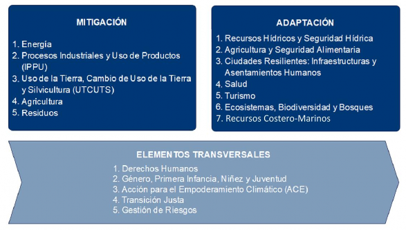
Figure 1. Sector prioritization scheme. Source: Author's own elaboration.
Table 2. Priority sectors for NDC 3.0 DR-2025. Source: Prepared by the authors.
Component |
Sector / Thematic area |
Scope and contents |
MITIGATION |
Energy |
Clean energy and energy efficiency as key pillars. Sustainable land transport. (including low-emission vehicles, electrification, complementary measures - such as infrastructure and active mobility). It contains elements of transversality. |
Industrial Processes and Product Use (IPPU) |
Industrial sector treated as “Industrial Processes and Product Use”. |
|
Land Use, Land Use Change and Forestry (LULUCF) |
Key to emissions mitigation and health adaptation. REDD+ as an instrument of mitigation; sustainable agriculture; land use and land use change, in the area of management sustainable management of relevant watersheds; livestock farming and fish farming. It offers co-benefits with food security, forestry sector and biodiversity. |
|
|
Agriculture |
||
|
Waste |
Construction and operation of water purification systems with methane capture and combustion and valorization of usable waste, reduction of emissions. |
|
ADAPTATION |
Water resources and water security |
A strategic sector that, in a cross-cutting manner, has repercussions on all others sectors. It will be addressed from an integrated watershed management approach. |
Agriculture and food security |
Resilient agriculture; resilient livestock and fish farming adapted to climate change. It offers co-benefits with AFOLU. |
|
Resilient cities: infrastructure and human settlements |
Focus on developing resilient communities, and design assurance, planning and construction for human settlements. |
|
Health |
Focus on the health system and local health resilience. |
|
|
Tourism |
It is a high-priority sector, for which adaptation actions must be prioritized. (such as forest or coastal-marine ecosystems). At the same time, it is necessary to take into account the contribution of the sector to climate change and, therefore, identify timely measures mitigation, as well as its co-benefits. |
|
Coastal and marine resources |
Highly vulnerable thematic area. Modified to include integrated watershed management, from upper basin up to the coast. |
|
Ecosystems, biodiversity and forests |
Highly vulnerable thematic area. Forests and biodiversity (conservation, restoration, areas protected areas); EbA and NbS. It offers conservation co-benefits with REDD+. |
|
CROSS ELEMENTS |
Human rights |
The guarantees and rights for adaptive social protection are compiled and Just Transition. |
Gender, Early Childhood, Childhood and Youth |
Mainstreaming vulnerabilities and differentiated contributions of groups vulnerable groups, as well as goals that promote accessibility, participation and inclusion. |
|
Action for Climate Empowerment (ACE) |
Analysis of information and goals to continue social transformation in a way participatory for a resilient and sustainable culture. |
|
Climate risk management |
Focus on reducing climate disaster risks, aimed at decreasing losses and damages. |
|
|
Just Transition |
Integrating just transition into governance, skills development and training for green jobs, promotion of active labor market policies and encouragement of green entrepreneurship and productive transformation. |
3.1. Geographic and socioeconomic context
The Dominican Republic is a Caribbean island state located east of the island of Hispaniola, with an approximate area of 48,195.90 km² and a coastline of more than 1,527 km for the main coast and another 139 km for cays and islets, bordered by the Atlantic Ocean to the north and The Caribbean Sea to the south. It is bordered to the east by the Mona Passage and shares a land border with Haiti (276 km) to the west6. Due to its geographical position located in the route of tropical cyclones in the North Atlantic and the The country is frequently affected by the Great Atlantic Sargassum Belt. atmospheric phenomena such as storms and hurricanes78.
The territory has a rugged topography, with mountain ranges (including Pico Duarte) reaching 3,098 m above sea level), and depressions (with Lake Enriquillo approximately- (at 44 m below sea level) which generate strong altitudinal gradients contributing to the climatic, ecosystemic and productive diversity of the country.
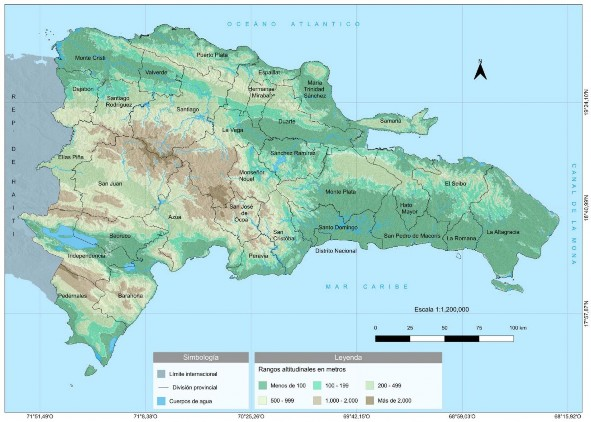
Figure 2. Altitudinal ranges above sea level in the Dominican Republic. Source: Atlas of Statistics Environmental (ONE, 2024)6
The Dominican Republic has a tropical climate characterized by average annual temperatures of 25 to 28 °C. The large orographic variations generate notable differences, fluctuating between 26 and 28 °C for the Lower-lying areas, such as coastal zones, and ranging from 18 to 22 °C for higher altitude areas. Rainfall varies from approximately 900 mm to 2,200 mm/year by area, depending on the region, presenting the rainy season between the months of May and August9.
According to the Basic Demographic Characteristics Report of the X National Population and Housing Census10 The Dominican Republic had a population of 10,760,028 inhabitants in 2024 with a density of over 200 inhabitants/km² and a moderate growth trend. The population is mostly concentrated in certain areas urban areas such as the Santo Domingo Metropolitan Region and the Cibao Valley.
The Dominican economy is characterized by a predominance of the service sector, representing approximately 60%. of GDP, followed by the industrial sector at approximately 34% and the agricultural sector at around 6%.11. Sectors such as tourism, manufacturing in free trade zones, mining, construction, and mining services They are also key drivers of the country's development. The country has experienced growth in recent years. decades with a nominal GDP of around 124 billion USD in 2024 and a GDP per capita close to 10,876 USD12.
3.2. Climate Scenarios and Impacts
Climate change is presented as one of the most alarming environmental and development challenges. globally, with a high probability that human activities are the main cause of Global warming is driving recent climate changes, according to the Climate Change Service. According to the Copernicus Climate Change Conference13, 2024 was the warmest year on record, also marking the first time that the The average global temperature is more than 1.5°C above pre-industrial levels. This fact anticipates The projections regarding the critical threshold associated with the stability of the system have been considerably revised. global climate.
Although the effects of climate change vary by region, its impact is becoming increasingly evident worldwide, and projections indicate that the negative effects will continue intensifying14. In the case of the Dominican Republic, its geographical location, the physiography of its territory insularity, the high exposure of its population to hydrometeorological phenomena and the dependence on sectors sensitive sectors such as tourism, agriculture, and water resources place it among the most vulnerable countries to this phenomenon1516171819, occupying positions for several consecutive years among the top places in the Global Climate Risk Index20.
The most recent studies 212223 , which encompass both the analysis of historical trends and projections towards the end of the 21st century, They highlight an increase in temperatures and significant changes in rainfall patterns in the country. Specifically, the behavior of rainfall over the last century reveals two aspects Key. On the one hand, a reduction in rainfall is observed in the leeward areas of the main mountain ranges. mountainous regions21, that is, in typically drier regions, which would be subject to an increase in aridity and a greater pressure on water resources. On the other hand, historical trends also highlight a Intensification of rainfall, especially on the Caribbean coast21, with less frequent but more concentrated events, increasing the magnitude of flooding and landslides.
The available projections24, made using the CCSM4, FIOESM, MIROCS, MIROC-ESM, NorESM1-M models (which had better scores in representing the behavior of the 5 variables analyzed), They indicate a progressive reduction in precipitation under the higher emissions scenarios, reaching up to more than 20%, and even 30% in the south of the country, towards the end of the century under high scenarios emissions (RCP 8.5). In contrast, the temperature (maximum, minimum, and average) shows a sustained trend. upwards in all scenarios, with more marked increases below the RCP 8.5, where the maximum temperature It could increase between 3.2 and 3.8 °C and the minimum up to 3.3 °C. In the low emissions scenarios (RCP 2.6), The changes would be more moderate, with temperature increases close to 1°C and smaller reductions in rainfall (4–8 %). Due to rising sea levels, it is projected that the country could lose between 5 and 10% of its coastal area.24
These trends have direct effects on people and their well-being: they compromise safety food security due to the loss of agricultural productivity; they affect public health due to the proliferation of Vectors and diseases associated with extreme events threaten the water security of rural communities and urban areas; and they deteriorate essential infrastructure and housing, especially in informal settlements located in risk zones.
Recent studies indicate that, despite government efforts and commitment, climate change It will likely exacerbate some of the country's development challenges. Without adaptation measures, the projected impacts will affect economic activity, reducing the poverty and growth. By 2050, climate change is expected to reduce labor productivity and affects health, agricultural yields (which could fall by up to 30%), tourism, infrastructure and natural ecosystems such as forests and coastal areas. According to the models, the Climate-related GDP deviations could reach up to 16.7% by 2050, with more than 80% of the losses attributable to heat stress on the workforce, the increase in tropical storms, and the Decreased tourist demand. Furthermore, climate change will hinder poverty reduction: It estimates that by 2050 the poverty rate will be between 0.7 and 1.2 percentage points higher than in a scenario without [the government]. Climate change, which means that between 16 and 25% more people will live in poverty. Finally, the combination of the impacts of climate change, natural resource degradation and access Limited access to basic services is also expected to affect migration patterns, particularly among the most vulnerable populations.
In this context, the Dominican Republic chooses to lead with resilience, recognizing that adaptation is much more than a response to climate shocks, but rather a strategic opportunity to modernize the national economy, protect its natural heritage, and build stronger, fairer communities and equitable.
3.3. Institutional Arrangements, Governance and Legal Framework
The Dominican Republic, consistent with its commitment to safeguarding human rights, It recognizes and protects, constitutionally, the right to a healthy, balanced and adequate environment for the development, in a context of increasing climate risk.
The climate change governance framework in the Dominican Republic is based on a set of institutions and actors (State, civil society, private sector, local communities), mechanisms of coordination between multiple levels (national, sectoral, local) and regulatory frameworks that seek to guarantee The coherence, coordination, and effectiveness of actions to address climate change. This governance is based on in the mainstreaming of climate change in public policies, coordination interinstitutional and multi-stakeholder participation, including the incorporation of approaches cross-cutting issues (gender, human rights, ecological-territorial).
Climate governance in the Dominican Republic has evolved significantly in recent years, in response to the international commitments undertaken under the Paris Agreement and to the growing threats derived from climate change. This process has involved not only the strengthening of the legal framework and institutional, but also the progressive incorporation of participatory, inclusive and multisectoral approaches in the formulation and implementation of climate policies. The accumulated experience The implementation of NDC 2.0 offers valuable lessons that guide the construction of a more effective NDC 3.0. ambitious, equitable and effective.
The National Council for Climate Change and Carbon Market (CNCCMC) acts as the coordinating body of national climate policy, promoting the integration of climate change into the various sectors and levels of government, and coordinating the actions of public, private, and civil society entities. Its mandate includes the formulation of mitigation strategies and adaptation, as well as the promotion of a just and resilient transition.
The Ministry of Environment and Natural Resources (MMARN) exercises environmental leadership, in accordance with the Law No. 64-00, ensuring the conservation, regulation, planning and control of ecosystems and resources natural resources, providing technical, implementation and regulatory support to climate change policies in the related to the sustainable management of natural resources. As well as being responsible for the implementation and due monitoring of all Multilateral Environmental Agreements (MEAs) to which the country is a party.
The Ministry of the Presidency (MINPRE), with the approval of Law No. 45-25, has assumed the functions of Territorial planning integrates climate change into territorial planning and its alignment with the disaster risk management for national development planning, in accordance with Law No. 368-22.
The Ministry of Finance and Economy ensures the financial sustainability of exchange rate policies climate, integrating the climate variable into budget planning and mechanisms of climate finance.
The country has been developing a progressive institutional and regulatory framework, including plans and strategies national climate change adaptation and mitigation policies. However, the effective implementation of these Policies require strong alliances between public and private actors, academia, civil society, as well as the mobilization of local capacities to implement concrete actions.
Public sector governance on climate change is supported by ministries and other entities. sectoral institutions that have a leading role in increasing resilience and mitigating impacts of climate change depending on their functions and scope, such as the Ministry of Agriculture, the Ministry of Health and Social Assistance (MISPAS), Ministry of Education (MINERD), Ministry of Higher Education, Science and Technology (MESCyT), Ministry of Public Works and Communications (MOPC), the Ministry of Housing, Habitat and Buildings (MIVHED), Ministry of Tourism (MITUR), Ministry of Defense (MIDE), the Ministry of Energy and Mines (MEM), among others.
The private sector, academia, civil society organizations and communities all have a role to play predominant in the implementation of climate change policies, as well as in the efforts of capacity building, research and dissemination.
The Dominican private sector has a crucial role to play in both reducing emissions and Sectoral adaptation to the effects of climate change. Many companies, from large corporations to Small and medium-sized enterprises (SMEs) integrate sustainability criteria into their operations and supply chains. supply. This includes investments in energy efficiency, adoption of renewable energy, management of waste and product design with a smaller environmental footprint, such as the companies gathered in ECORED, as well as Industrial parks like Duarte Park, certified as an eco-park and supported by the Organization of the United Nations Industrial Development Organization (UNIDO) for the management of five treatment plants water and solar energy, promoting the circular economy and environmental responsibility.
The Dominican academy plays a fundamental role in the generation of scientific and technical knowledge necessary to understand the impacts of climate change and design effective education responses, Information and dissemination. Universities such as the Pontifical Catholic University Madre y Maestra (PUCMM), Ibero-American University (UNIBE), Pedro Henríquez Ureña National University (UNPHU), Institute The Technological Institute of Santo Domingo (INTEC), the Autonomous University of Santo Domingo (UASD), and others have programs that contribute to environmental sustainability, and specific programs that include climate change in undergraduate, postgraduate and research programs.
Civil society organizations (CSOs), including community groups, act as bridges between the Public policy and local realities. Their role is crucial to ensuring that policies change. climate policies should be inclusive, participatory, and sensitive to the needs of vulnerable groups.
CSOs and community organizations facilitate consultation and citizen participation processes, and monitor implementation of climate policies and promote accountability. Furthermore, they are active agents in education environmental awareness and social mobilization. Through community projects, campaigns of Awareness and sustainable management practices for natural resources contribute to strengthening the local resilience and fostering a culture of climate responsibility.
The legal and regulatory framework related to climate change in the Dominican Republic is broad and is contemplated at the highest level, from the Constitution, the National Development Strategy Law, among others that are detailed below in Table 3.
Table 3. Main instruments of the political and legal framework on climate change. Source: Prepared by [author/compiler] and its own update based on the National Adaptation Plan of the Dominican Republic PNACC-RD 2015-2030.
Legal instrument |
Description |
Constitution of the Dominican Republic |
The Constitution of the Dominican Republic enshrines the right of every person to live in an environment a healthy, balanced and adequate environment for the development of life. This right imposes on the State the duty to protect natural resources, prevent environmental degradation and guarantee conditions climate-safe conditions for present and future generations. Article 194 of the Constitution The Dominican Republic establishes the State's priority in formulating and implementing a Land Use Plan Territorial (POT) by law, with the objective of ensuring the efficient and sustainable use of natural resources and adapting to climate change, integrating the development of the territory national. This article, part of Title IX on Territorial Organization, underlines the importance of A plan that promotes the comprehensive and balanced development of the country and its inhabitants. Article 241 of the Dominican Constitution establishes the obligation of the Executive Branch to prepare and to present to the National Congress a long-term National Development Strategy, after prior consultation with the Economic and Social Council (CES) and the political parties, to guide the planning public and investment, governed by specific law to ensure compliance. |
Law No. 64-00 |
General Law on the Environment and Natural Resources. Furthermore, which establishes the Ministry of Environment and Natural Resources as the governing body for environmental policy and management natural resources at the national level. |
Law No. 147-02 |
On Risk Management. It creates the National System for Prevention, Mitigation and Response. It assigns the responsibility for its creation and operation to the National Emergency Commission (CNE). |
Law No. 202-04 |
It establishes the legal framework for the creation and management of the National System of Protected Areas (SINAP). |
Law No. 57-07 |
On Incentives for the Development of Renewable Energy Sources and their Special Regimes (it is a co-benefit for adaptation). |
Law No. 1-12 |
The Dominican Republic's National Development Strategy 2030, which guides the work of the sector public sector in terms of regulation, promotion, and production of goods and services. This law also seeks to generate synergies between government and private initiatives to achieve the objectives and the nation's long-term goals, especially in its Axis 4 for comprehensive, sustainable and inclusive: “Environmentally sustainable society that adapts to climate change.” |
Law No. 253-12 |
Strengthening the State's Revenue Collection Capacity for Fiscal Sustainability and Sustainable Development. |
Law No. 103-13 |
Incentives for the importation of non-conventional energy vehicles. Promoting the use of vehicles that do not pollute the environment, and reduce the levels of environmental pollution caused by emissions from motor vehicles powered by fossil fuels. |
Law No. 33-15 |
Sectoral Law on Biodiversity to develop and regulate conservation and sustainable use of the country's biodiversity |
Law No. 589-16 |
It creates the National System for Food and Nutritional Sovereignty and Security, which has at its I am responsible for the development and implementation of food and nutritional sovereignty and security policies, as instruments aimed at respecting, protecting, facilitating and exercising the right to food adequate in accordance with human rights principles to improve the quality of life of the Dominican population. |
Law No. 44-18 |
It establishes the legal basis for Payments for Environmental Services, to implement a system of economic incentives that recognize and reward individuals or communities that conserve, restore or improve ecosystems that provide environmental services to the country. |
Law No. 57-18 |
Sectoral Forestry Law, enacted to regulate and promote the sustainable management of forests country. |
Law No. 94-20 |
On Environmental Education and Communication. It promotes the inclusion of environmental education in different levels, in order to promote environmental awareness and consciousness throughout society Dominican Republic. Among its specific objectives is to promote the implementation of policies and measures adaptation to climate change and climate risk management. |
Law No. 98-25 |
Regarding Solid Waste, it modifies and adds provisions to Law No. 225-20 on Integrated Management and Co-processing of Solid Waste. It is aimed at preventing waste generation, in addition to establish the legal framework for its comprehensive management to promote reduction, reuse, recycling, recovery and valorization, as well as regulating the collection, transport and sweeping, final disposal sites, transfer stations, collection centers and Waste-to-energy plants, with the aim of guaranteeing everyone's right to live in a healthy environment, protecting public health, and reducing the generation of Greenhouse Gases, emitted by waste. |
Law No. 368-22 |
Law on Territorial Planning, Land Use and Human Settlements. Creates the National System of Territorial Information. |
Law No. 19-24 |
It creates the Dominican Institute of Meteorology (INDOMET), repealing the decree that created the Office National Meteorological Office (ONAMET). Attached to the Ministry of Environment and Natural Resources (MMARN). |
Law No. 45-25 |
It provides for the merger of the Ministry of Finance and the Ministry of Economy, Planning and Development and repeals Law No. 496-06 of December 28, 2006, which created the State Secretariat of Economy, Planning and Development. Creates the Ministry of Finance and Economy. |
Resolution No. 182-98 |
Approves the United Nations Framework Convention on Climate Change, signed on 9 May 1992, between the United Nations (UN) and its Member States. |
Decree No. 601-08 |
It establishes and defines the functions of the National Council for Climate Change and the Mechanism of Clean Development Mechanism (CNCCMDL). The CNCCMDL is responsible for devising, planning, and implementing implement public policies to prevent and mitigate Greenhouse Gas (GHG) emissions, adapt to the negative impacts of climate change and promote initiatives and strategies to Climate action. These actions are aligned with the Republic's international commitments. Dominican Republic before the United Nations Framework Convention on Climate Change (UNFCCC). |
Decree No. 278-13, updated by Decree No. 269-15 |
It establishes the National Climate Change Policy (PNCC). This policy aims to address Climate variability linked, directly or indirectly, to human activity and its effects in the country's population and territory. The PNCC seeks to implement strategies, plans, and projects to at the national level, in accordance with the provisions of the UNFCCC. It is established that the Ministry of Economy, Planning and Development (MEPyD), the Ministry of Environment and Natural Resources, and the CNCCMDL must integrate mitigation and adaptation measures into all policies and programs governmental. |
Decree No. 23-16 |
It creates the High-Level Inter-institutional Commission for Sustainable Development, which has as mandate “to chart the course for the effective implementation of the Agenda for Sustainable Development”, so that all entities governing or implementing public policies have a guide to in accordance with the END. |
Resolution No. 122-17 |
Approves the Paris Agreement. Signed by the Dominican Republic on April 22, 2016, adopted in Paris, December 12, 2015, at the Twenty-first Meeting of the Conference of the Parties to the United Nations Framework Convention on Climate Change. |
Decree No. 541-20 |
Creates the National System for Measurement, Reporting and Verification of Greenhouse Gases Dominican Republic (MRV), in order to account for greenhouse gas emissions and implement mitigation actions to ensure funding aimed at promoting actions climatic. |
Decree No. 348-21 |
Amends Article 1 of Decree No. 601-08, incorporating the Ministries of Tourism and Energy and Mines in the National Council for Climate Change and the Clean Development Mechanism, so that contribute to the coordination of their functions. |
Decree No. 165-21 |
Repeals numeral IV of article 3 of Decree No. 1082-04, and subparagraph d) of article 5 of said decree, which integrated the Cabinet for Coordination of Environmental Policy and Physical Development. It establishes that the National Council for Climate Change and the Clean Development Mechanism assumes the functions of the aforementioned cabinet. |
Decree No. 617-22 |
Declares the promotion of sustainable and inclusive public procurement to be of national interest, understood as the acquisition of goods, works and services by State institutions, which at the same time generate less impact on the environment and maximize the impacts socioeconomic. |
Decree No. 65-23 |
Establishes the Implementing Regulations of Law No. 57-07, on Incentives for the Development of Sources Renewable Energy and its Special Regimes. |
Decree No. 603-23 |
It creates the Commission for the Supervision of Public Infrastructure in the Face of Climate Change, with the The aim is to identify the vulnerabilities of the main works as quickly as possible. public entities, comprised of the National Office for Seismic Evaluation and Infrastructure Vulnerability and ONESVIE Buildings (headquarters), MIVHED, CODIA, and Academies. |
Decree No. 158-23 |
Implementation of energy saving and efficiency policies. Declared a high national priority the implementation of a policy of oven and energy efficiency in all bodies of the Public administrations that are under the authority of the Executive Branch, including the Central and decentralized public administration, as well as autonomous bodies and decentralized, including those institutions defined as non-cuttable in accordance with Law No. 125-01, its amendments and its implementing regulations. |
Decree No. 337-24 |
Creating the Meta RD 2036 Commission to double the real value of the economy will have significant effects on well-being and prosperity. |
Decree No. 358-25 |
It stipulates that the National Council for Climate Change and the Clean Development Mechanism in From now on it will be called the National Council for Climate Change and Carbon Market (CNCCMC), and It will be attached to the Ministry of the Presidency. The other provisions of the Decree remain in effect. No. 601-08 and repeals Decree No. 301-25. Official Gazette No. 11201 of July 15, 2025. |
|
Resolution No. 0028/2025 |
It establishes requirements for the recording and accounting of mitigation results and benefits. environmental and biodiversity considerations, integrated into the Environmental Impact Assessment process. It reinforces traceability, transparency and compliance with climate commitments, including the Agreement of Paris. (adaptation co-benefits). |
4. Mitigation
4.1. Context of Mitigation Policies, Measures and Actions
Since joining the United Nations Framework Convention on Climate Change (UNFCCC), The Dominican Republic has made a firm commitment to climate action26 recognizing its responsibility to implement measures to address climate change. The ratification of the Kyoto Protocol in 2002 also allowed for early participation in the Clean Development Mechanism (CDM), consolidating its trajectory as a country committed to the emissions reduction and international climate cooperation. Subsequently, with the ratification- Following the ratification of the Paris Agreement in 2017, the country assumes and renews more ambitious climate commitments, including significant efforts in governance and transparency.
The Dominican Republic reaffirms its commitment to the fight against climate change through the implementation of Policies, Measures and Mitigation Actions (PMAs) aimed at reducing the greenhouse gas (GHG) emissions, while promoting a development model sustainable, inclusive, and resilient economic development. These actions are designed in accordance with the national circumstances and in line with the international principle of common responsibilities but differentiated.
In the global context, the Dominican Republic contributes a very small portion of the GHG emissions, accounting for less than 0.1% of the global total. According to the most recent EDGAR data, Global emissions at ~53.0 GT CO₂ eq in 2023 (excluding land use changes)27 , placing the country in lower ranks within the global inventory.
At the national level, the GHG Inventory 2022 It places emissions in the range of 45,000 kt CO₂ eq, which allows us to estimate its share relative to the countries, as well as per capita emissions, by sector and their historical evolution. Relative to the size of its economy, the country's carbon intensity is around 0.4 ktCO₂ per million USD of GDP (PPP) in 2022, an indicator that suggests moderate performance. in carbon-product efficiency28 This intensity is lower than the world average, reflecting that the Dominican economy is not as emissions-intensive as others, but there is still room for improvement.
In this context, the mitigation policy is based on an approach that combines risk management and taking advantage of opportunities, applying criteria of proportionality and hierarchy in their approach. This approach is based on the precautionary principle, established in General Law No. 64-00 on Environment and Natural Resources.
Compared to economies of a similar size to that of the Dominican Republic, it aligns itself as an issuer medium-low, so its climate strategy does not focus on drastic absolute reductions, but rather to improve the relationship between economic growth and emissions, through: the transition energy; efficiency in land transport; the reduction of Hydrofluorocarbons (HFCs) in the refrigeration and air conditioning chain (RAC); and integrated waste management.
Climate change has been defined in the Political Constitution29 as a cornerstone in the formulation and execution of territorial planning to ensure the use efficient and sustainable use of natural resources to ensure adaptation to this phenomenon. Furthermore, it has adopted an increasingly proactive stance, incorporating GHG mitigation measures, which generate co-benefits, in its national sustainable development planning. Likewise, the National Strategy of Development30 (END-2030), established by Law No. 1-12, incorporates in its fourth strategic axis the production and Environmentally sustainable consumption, with specific objectives to address climate change. This The strategy is aligned with the Public Planning and Investment Law, through indicators and goals quantitative data that allow verification of the progress achieved.
In 2020, the Dominican Republic presented its NDC 2.0, where it defined its climate ambition based on the a 27% reduction in GHG emissions compared to "business as usual" or BAU projections projected between 2010 and 2030. This ambition was broken down into 20% conditional on international financing and 7% unconditional (financed with national resources), of which 5% correspond to the private sector and 2% to the public sector.
This NDC included 46 mitigation options distributed across key sectors (Figure 3): Energy, Use of Industrial Products and Processes (IPPU), Agriculture, Forestry and Other Land Uses (AFOLU) and Waste. These measures aimed to reduce approximately 13,853.71 kt CO₂ eq, representing a 27.16% reduction compared to the scenario BAU 2030 estimated at 51,000 kt CO₂ eq, according to the Economic Development Plan Compatible with Climate Change Climate (DECCC). The required investment was estimated at USD 8,916,950,000.
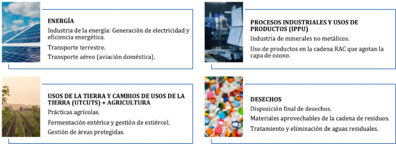
Figure 3. Mitigation sectors considered in NDC 2.0. Source: Modified from NDC 2.0).
The articulation between the RD 2036 Target Strategy, established by Decree No. 33724, and the proposal The mitigation measures of NDC 3.0 RD-2025 constitute an essential step to ensure that the aspirations of the country's economic growth is realized within a genuinely sustainable model compatible with the climate.
Both instruments share a common strategic vision: while the Meta RD 2036 Strategy defines the route To double GDP by 2036 and achieve the goals of the END 2030, NDC 3.0 RD-2025 transforms that vision into tangible climate commitments and actions. Together, they drive a competitive, inclusive development model. resilient and low carbon, fully aligned with institutional and sectoral planning processes of the country.
This coherence allows us to take advantage of opportunities for investment, innovation, and capacity building. that arise in a favorable enabling environment, consolidating the link between economic development, environmental sustainability and social well-being.
The proposed mitigation ambition in NDC 3.0 RD-2025 is presented strategically, clearly and visual, reflecting a process of technical analysis and multi-sector consultation identifying a scenario consistent with national circumstances in form: transparent in its formulation and justification; ambitious, considering science, technological and commercial evolution; and politically viable, with Institutional and social support. In compliance with the reporting requirements of the Framework Enhanced Transparency (ETF), NDC 3.0 RD-2025 includes the ICTU table (Information needed to facilitate clarity, transparency and understanding) in section 11 “Information intended to facilitate clarity, the transparency and understanding of nationally determined contributions” .
Opportunities for emissions reductions and synergies with NDC 2.0 were identified, not only in terms of emissions, but also in terms of policy needs and creating an enabling environment within the sectoral scope.
The process of formulating the mitigation component was structured based on the emissions sectors. defined in the IPCC Guidelines 2006 for the key categories of the Inventory, which cover more than 85% of national emissions, and was aligned with the END-2030, the RD 2036 Goal and other national planning instruments.
4.2. Process of preparing and validating information
NDC 3.0 RD-2025 is based on a rigorous technical process of development and validation of information, which includes the quantification of emissions, the definition of the baseline, the identification Identification of sectoral goals and the construction of mitigation scenarios for the period of implementation 2026–2035.
The baseline was constructed from the historical series of the National GHG Inventories (INGEIs), including the years: 1990, 1994, 1996, 2000, 2010, 2015 and 2022. The projections of Emissions targets for 2030 and 2035 were developed using technical parameters and sector models. Table 4 summarizes emissions and absorptions by gas type projected to 2030 and 2035.
Table 4. Emissions and absorptions by gas type ( kt CO₂ eq ).
Source: Prepared by the author, based on the analysis of the Emissions Baseline and Projection wearable in Annex 4: Baseline and Projections
|
Gas (kt) |
2022 (Historical) |
2030 (Medium Projection) |
2035 (Medium Projection) |
GWP-AR6 Factor |
CO₂ |
28,589 |
34,025.67 |
37,936.85 |
1 |
CH₄ |
415 |
391.68 |
377.70 |
29.8 |
N₂O |
7.367 |
13.54 |
19.83 |
273 |
HFC |
2,360 |
2,555.65 |
2,686.01 |
1950 |
Removals |
10,247.78 |
9,545.04 |
9,130.52 |
1 |
CO2 eq emissions |
45,327.19 |
51,949.62 |
57,292.65 |
- |
CO absorptions eq |
10,247.78 |
9,545.04 |
9,130.52 |
- |
The emissions baseline is the fundamental starting point for understanding the trajectory climate, since it reflects the historical behavior of emissions and allows us to project how They will evolve in the absence of new mitigation policies. Based on these historical series and Trends observed in the main greenhouse gases (CO₂, CH₄, HFCs and N₂O) can be to assess the climate challenge.
In the historical and projected scenario for all gases (CO2, CH4, N2O and HFCs) in aggregate This can be seen in Figure 4 with an observation of gross CO2 eq emissions in a series from 1990 and projected to 2035.
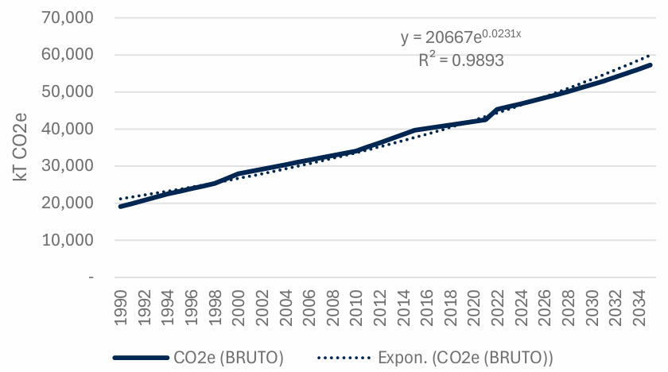
Figure 4. Overview of the trend in historical gross emissions and their projection in the Republic Dominican Republic 1990-2035.
Source: Author's own work. Detailed description in Annex 4: Baseline and Projections.
The analysis of the Baseline presented ( Annex 4: Baseline ) reveals a clear picture: carbon dioxide (CO₂) dominates the growth trajectory, driven primarily by the energy and transportation sectors. Methane (CH₄) shows a progressive reduction of the growth rate, until reaching a trend contrary to Starting in 2015, with significant reduction potential that must be considered. Nitrous oxide (N₂O) has emerged in the last 15 years as a growing challenge linked to the use of fertilizers and agricultural practices. Added to this is a worrying phenomenon: the combination of increasing emissions and declining absorption exacerbates the overall trend.
To ensure that the defined ambition is consistent with capabilities and successfully leverages the potentialities, a set of PAMs has been identified that will allow the objective to be dimensioned and will support the ambition to be defined.
The portfolio of mitigation PAMs was built from multiple sources, in which It includes the following:
Monitoring and Follow-up Chapter of NDC 2.0, and of the First Biennial Transparency Report combined with the Fourth National Communication of the Dominican Republic.
Database of multilateral organizations and official bodies.
Expansion Plans, Indicative Plans, Multi-Year Public Investment Plan, Reviews
Project documents and studies carried out from the technical assistance in the different sectors.
The estimation of the technical potential was carried out using recognized methodologies such as IPCC, MDL, GHG Protocol, and international best practices. While the needs of Financing was defined based on project documents, public investment plans, and private, and interviews with key stakeholders.
The process of formulating the mitigation portfolio included: (1) developing scenarios of mitigation by 2030 and 2035, (2) identify possible targets, and (3) assess consistency, Improvement of scenarios and alignment with national circumstances. The definition of The mitigation component was based on a technical, participatory, and multi-sectoral process, aimed at ensuring the quality, relevance, and feasibility of the proposed measures. The process was developed in three complementary stages:
Information gathering: A thorough review of documents was carried out- strategic plans, technical reports and previous studies, including NDC 2.0, assessments of progress and sectoral plans. This documentary analysis was complemented with the reco- stacking of primary data and identification of information gaps at the institutional level national and sectoral.
Structuring and validating the portfolio: Through sector consultations, meetings bilateral meetings and technical workshops with sectoral ministries, technical entities, cooperation agencies and non-state actors. These spaces allowed for the identification of the key mitigation levers, analyze the technical and economic potential of the measures, and prioritize those with the greatest climate impact and the greatest feasibility of implementation.
Scenario building and methodological review: Scenarios were developed for mitigation by 2030 and 2035, evaluating its consistency and alignment with the circumstances national. Specialized consultations with national and international experts allowed review assumptions, variables, and parameters, strengthening the methodological consistency of the scenarios. This continuous interaction with the technical community allowed for the incorporation of updated knowledge, validate preliminary results and ensure that the proposals They will reflect both the national context and international best practices.
Given that the identified initiatives respond to different sectoral strategies with For short, medium and long term horizons (up to 2040), a process of nor- mapping of indicators to homogenize their measurement (Figure 5 shows the distribution of PAMs in the three indicators).
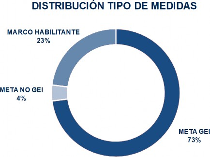
Figure 5. Percentage distribution of targets across the three indicators for monitoring.
Source: Author's own work.
The calculation estimates, both for the historical baseline, the emissions projection and absorptions, and the technical potential of GHG emission reductions was carried out following
the 2006 Guidelines of the Intergovernmental Panel on Climate Change31, supplemented with methodological updates 32 and global warming potential (GWP) values set out in the Sixth Assessment Report (AR6)33, where applicable.
The methodology adopted was based on a sector-based approach according to the categories defined in the National GHG Inventory System, including Energy, Industrial Processes and Product Use (IPPU), Agriculture, Forestry and Other Land Uses (UTCUTS) and Waste34. For each category, the following stages were applied:
This approach ensures transparency, accuracy, consistency, comparability, and completeness. (TACCC principles) required by the United Nations Framework Convention on Climate Change Climate (UNFCCC) and facilitates the traceability of the results obtained.
The construction of the baseline and business-as-usual (BAU) scenarios was based on the use of series Historical data on activity and emissions were available for the different gases. Equations were fitted to projection selecting those that presented a statistically significant coefficient of determination (R²) acceptable. Given the lack of available national econometric models and comprehensive official projections, Simplified assumptions were made without specific technological or capacity restrictions.
The PESTAL analysis (Political, Economic, Social, Technological, Environmental and Legal) to complement the Building scenarios and contextualizing the results allowed for the identification of external factors. determinants in the evolution of emissions and in the feasibility of mitigation measures:
Political: the National Development Strategy 2030, the National Energy Plan (PEN) 2025/2038 and the NDC 2.0 establishes energy transition and emissions reduction goals that directly influence the sectoral trajectories.
Economic: GDP growth, energy demand, industrial dynamism, and investment Foreign direct investment determines the rate of increase in emissions in energy, waste, and IPPU.
Social: accelerated urbanization, population growth, and changes in consumption patterns affect the waste generation, transportation and pressure on land use.
Technological: advances in renewable energy, electric mobility, carbon capture, low-emission technologies Carbon and waste management offer significant mitigation opportunities.
Environmental: the vulnerability of the territory to climate change and ecosystem degradation They condition the absorption capacity and ecosystem services.
Legal: regulatory frameworks such as Law No. 64-00, General Law of Environment and Natural Resources, Law No. 57-07, on Incentives for the Development of Renewable Energy Sources and their Regimes Specials36 , Decree No. 601-08 on the creation of the National Council for Climate Change, Decree No. 541-20 on the National MRV System, Decree No. 158-23 on energy efficiency in the public sector, The law and the regulatory framework of the electricity sector constitute fundamental pillars for the implementation of climate policies.
Some of the assumptions for the mitigation scenarios are sector-specific, considering Macroeconomic, technological, demographic, regulatory, and structural variables. The main assumptions The following are used:
Energy:
Energy demand and planning in line with the assumptions and projections of the PEN 2038 and the series historical records of the Coordinating Body (OC).
The pace of integration of new units responds to what is stipulated in the final concessions that Granted by the Ministry of Energy and Mines (MEM), through the National Energy Commission (CNE).
Regarding the generation matrix, it is estimated that the structure and pace of operation will remain the same. current with moderate expansion of thermal capacity tending towards energy transition fuels.
It is understood that the carbon intensity of the national interconnected electricity system (SENI) will remain levels similar to the current ones.
The pace of integration is based on studies and analyses of the Integrated Transportation System (SIT), where the growth of the vehicle fleet is proportional to GDP and the urban population and The incorporation of electromobility responds to historical market strategies and dynamics.
Industrial Processes and Product Use (IPPU):
Industrial production and product usage respond to the economic growth trend. where current processes and technologies are maintained without the adoption of capture or efficiency systems Additionally, they must be disruptive. This includes the use of products with increasing and consistent usage rates. of HFCs and other substitutes in refrigeration and air conditioning, with imports similar to those trends of the last decade.
Agriculture
For the agricultural sector in enteric fermentation activities, sludge management, and the use of Chemical inhibitors and the reduction of mortality in cattle respond to the trend of growth in food demand, where current processes and technologies are maintained excreta treatment without the adoption of capture systems, treatment that allows for the recovery of methane, and an appropriate feeding and vaccination system that allows for efficient stratification of the Improved nutrient absorption and reduced species mortality. Improved farming practices. of rice that improve the efficiency of water use and fertilizer use, reducing the amount of wastewater and the organic load of the process.
Land Use and Land Use Changes (LULUCCS):
Forest cover, deforestation rate and average annual degradation based on data from National Forest Inventory of the Dominican Republic(2021)37 and reports from the Ministry of Environment and Natural Resources, as well as the intention of continuity of the strategic program “Dominican Republic 30x30”, which seeks to ensure that the country achieves the me- tas of the global biodiversity framework, as well as maximizing adaptation and mitigation to climate change.
Changes in land use respond to ongoing patterns of agricultural expansion and urban.
Thus, it was assumed that the absorptions attributed to activity in UTCUTS would continue to maintain the rates current sequestration practices without implementation of additional reforestation or restoration programs ecologically disruptive.
Waste:
Taking into account that the generation of solid waste maintains a growth correlated with the increase in urban population and GDP per capita, and that in the baseline scenario it is estimated that persistence of the current open-air landfill disposal model, without biogas recovery or Non-energy use of materials. Material recovery measures and biogas combustion They are driven and supported by mitigation strategies.
For wastewater, treatment coverage shows limited progress, with systems mostly primary or non-existent and lack methane recovery and burning mechanisms.
4.3. PAMs NDC 3.0 Portfolio
The selection of the mitigation goal or objective is based on technical and strategic criteria, since This defines the time horizon within which an objective or result is expected to be achieved. Some of the The main criteria are: consistency with international commitments, alignment with plans and policies national, technical, economic and institutional feasibility, scalability and progressive monitoring, relevance for long-term transformation.
Considering that mitigation commitments will be updated in 2030, the following scenario is established potential for implementation, the making of investments in the period 2026-2030 and the obtaining of emission reductions in the period 2026-2035. Furthermore, given that the commitments will be updated again through the formulation of the NDC with a 2035 horizon, this timeframe is It also considers a valid implementation scenario.
The mitigation portfolio includes 26 sectoral action goals aimed at achieving a reduction of 9,997 kt CO₂ eq between 2026 and 2030, with cumulative effects until 2035. The measures cover the Four main greenhouse gases: CO₂, CH₄, N₂O, and HFCs. The sectors with the greatest potential for The mitigation priorities are: Energy, followed by LULUCF, and Waste. The total estimated investment to achieve these The goals amount to USD 11,468 million.
Progress towards the goals is assessed using three performance indicators: GHG reduction (73%), Strengthening enabling frameworks (23%), and other non-GHG benefits (4%). These will serve as a basis for the evaluation and monitoring of the implementation of NDC 3.0 RD-2025, in a period 2026-2035, For these purposes, each goal may have an impact on more than one indicator. Table 5 presents the estimate of GHG emissions reduction and the investment needed for each goal or action sectoral. The proposed portfolio of measures responds directly to the trends identified in the emissions baseline, offering a comprehensive approach to reversing the upward trajectory of GHGs and strengthen absorption.
First, the largest percentage of the reduction is concentrated in the sector energetic where the incorporation of new natural gas-fired generation units (as a transition fuel) (tion) and from renewables, along with the improvement of the distribution system and the development of Emerging technologies such as small modular reactors (SMRs) seek to curb growth accelerated of CO 2, the main driver of increased emissions. These actions are complemented by programs of energy efficiency and a transformation of land transport , focused on electrification, fleet modernization and the establishment of corridors sustainable, aligning with the recommendation to accelerate the structural decarbonization of these key sectors.
The portfolio addresses challenges identified in the baseline and projections, particularly the need to prioritize consolidating CH₄ reductions through interventions in waste solids, wastewater, agriculture and manure management, as well as the promotion of climate-smart agricultural practices that They incorporate N₂O reductions. The measures aimed at the comprehensive management of solid waste and wastewater contribute directly to the mitigation of CH₄ emissions. To address the issue of the decline of The absorptions, currently on a downward trend, raise the issue of protection and restoration of natural sinks, including forests mangroves and the expansion of protected areas, reinforcing the absorption component, strengthening environmental integrity and national climate ambition.
Table 5. Portfolio of proposed mitigation policies, measures and actions with an impact on Three national performance indicators. Source: Author's own elaboration.
|
Sectors |
Areas of Intervention |
Measures, Actions and Policies (PAM) |
PAM No. |
Inc. Marco Hab. |
Non-GHG Impact |
GHG Impact |
Reduced Emissions ktCO2 eq |
Estimated Investment Requirements USD |
|
ENERGY |
Electricity Generation |
|
4 |
X |
X |
X |
7,204.56 |
5,621,447,000.0 |
|
Energy Efficiency |
|
2 |
X |
X |
125.75 |
243,000,000.0 |
||
|
Road Transport |
|
5 |
X |
X |
145.91 |
1,911,640,000.0 |
||
Domestic Aviation |
12. Proposal for the incorporation of sustainable fuel from SAF and LCAF in domestic aviation Dominican Republic. |
1 |
X |
X |
1.0 |
25,000,000.0 |
||
TOTAL |
12 |
7,477.22 |
7,881,087,000.0 |
|||||
|
IPPU |
Cement Production |
13. Approval and implementation of enabling frameworks and studies that support the decarbonization of the cement sector. |
1 |
X |
X |
N/A |
5,500,000.0 |
|
SAORrefrigeration and AA |
14. Reduction of gases for the decrease in the consumption of substances and equipment (HFC) aligned with the Kigali Amendment. |
1 |
X |
191.71 |
725,000.0 |
|||
TOTAL |
2 |
191.71 |
6,225,000.0 |
|||||
|
AGRICULTURE |
Fermentation and Manure Management |
|
3 |
X |
X |
25.13 |
563,599.98 |
|
Rice Crops |
18. Increase the intermittency of the water regime during rice cultivation. |
1 |
X |
4.1 |
903,218.2 |
|||
TOTAL |
4 |
29.24 |
1,466,818.18 |
|||||
|
UTCUTS |
Forest Lands |
|
2 |
X |
X |
2,010 |
2,471,000,000.0 |
|
TOTAL |
2 |
2,010,000 |
2,471,000,000.0 |
|||||
|
Waste |
Waste Disposal |
|
3 |
X |
X |
X |
138.55 |
485,000,000.0 |
|
Wastewater |
|
2 |
X |
150.65 |
613,500,000.0 |
|||
TOTAL |
5 |
289.2 |
1,098,500,000.0 |
|||||
PAM Transversal |
26. Development, updating and/or adoption of Dominican technical standards (NORDOM), the creation of conformity assessment schemes to ensure compliance with the standard and a higher accreditation scheme to test these processes at the national and international level. |
1 |
X |
X |
N/A |
10,000,000.0 |
||
GENERAL TOTAL |
26 |
8 |
5 |
10 |
9,997.37 |
11,468,278,818.18 |
||
As a result of the implementation of NDC 2.0, the Dominican Republic has achieved by 2025 a emission reduction of approximately 4,734.73 kt CO₂eq compared to the business-as-usual (BAU) scenario.
In this context, NDC 3.0 incorporates an additional set of mitigation measures whose potential to The reduction is estimated at 9,997.37 kt CO₂eq/year by 2030. The joint implementation of the actions stemming from NDC 2.0 and the new measures proposed in NDC 3.0 would allow us to achieve a total reduction of approximately 14,732.1 kt CO₂eq, equivalent to a 28% decrease compared to BAU scenario for the year 2030.
Similarly, the projections to 2035 consider both the consolidation of existing measures such as the expansion of new actions, which would allow progress towards an estimated reduction of 18,349.32 kt CO₂eq, equivalent to 32% compared to the BAU scenario.
This approach reflects the continuity of efforts between NDC cycles, avoiding double counting. of measures, and ensures the progression of the country's climate ambition, in line with the Paris Agreement.
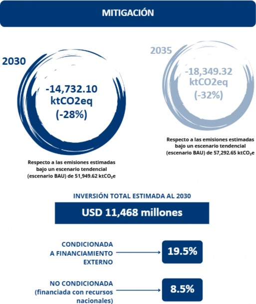
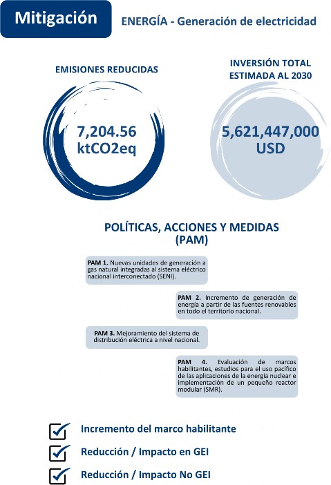
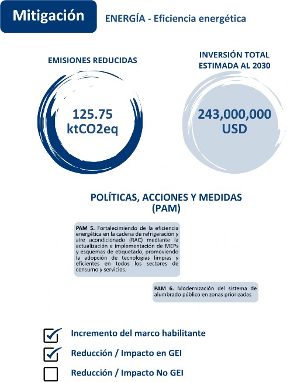
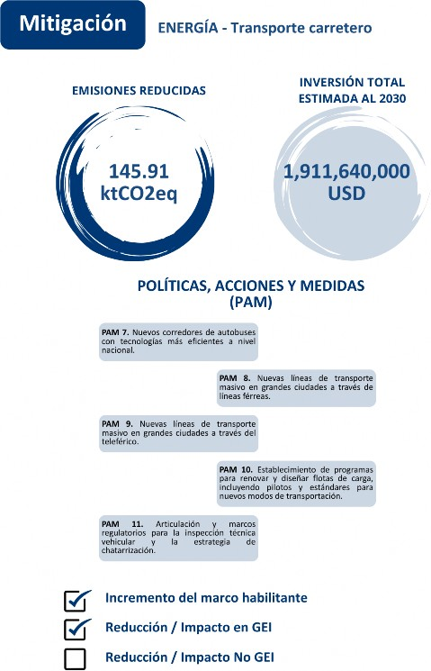
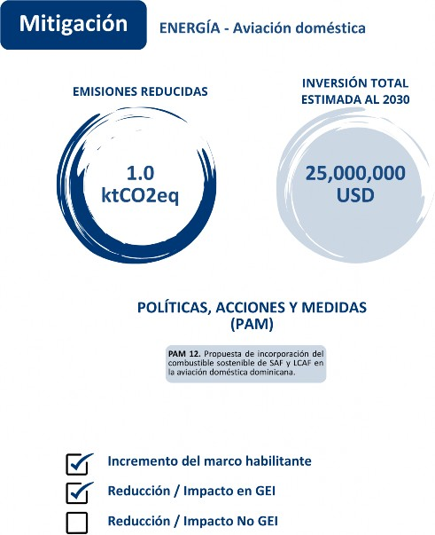
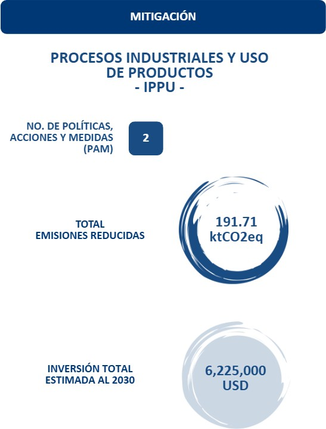
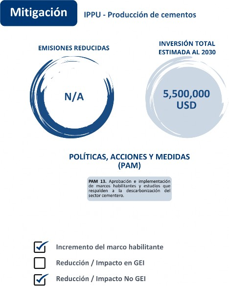
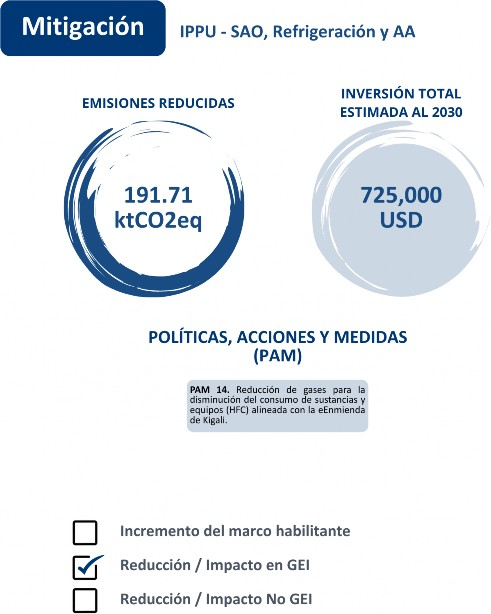
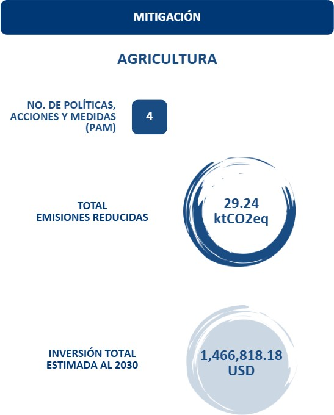
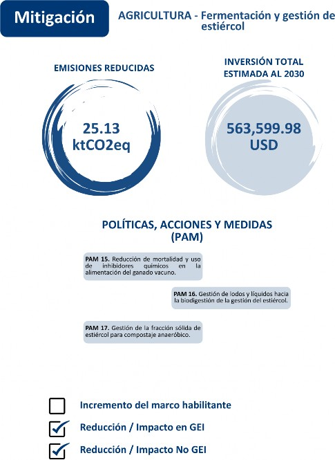
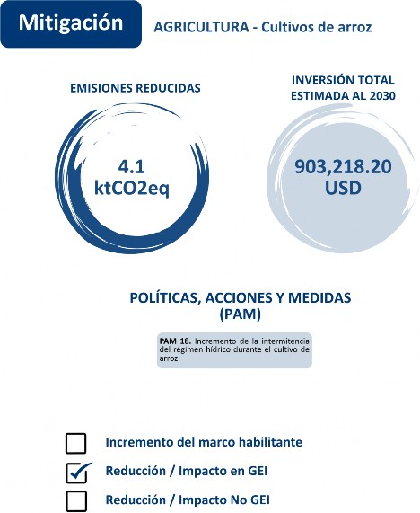
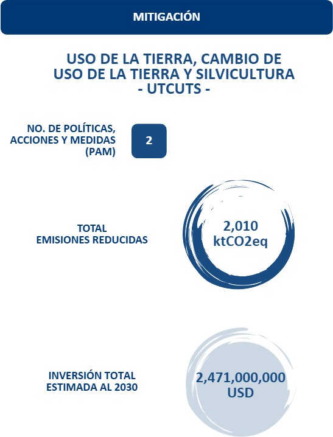
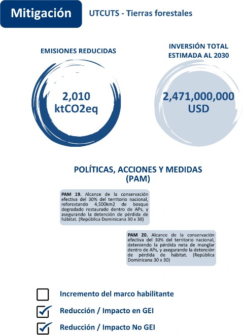
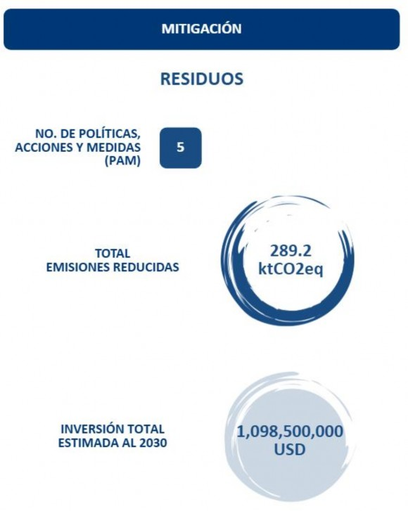
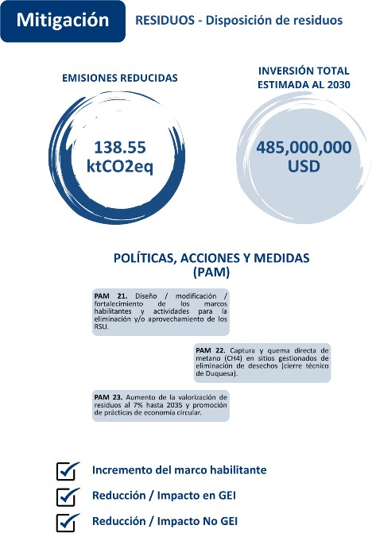
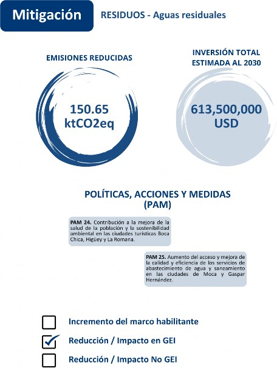
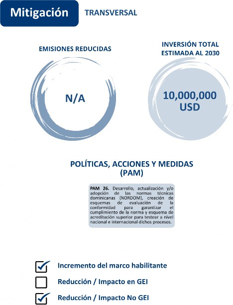
Mitigation Objective
The Dominican Republic commits to reducing CO₂ emissions by 14,732.10 kt by 2030, and by 18,349.32 kt by 2030. for 2035, compared to those estimated under a business-as-usual (BAU) scenario of 51,949.62 kt CO₂ eq and 57,292.65 kt CO₂ eq (respectively), which corresponds to a reduction of 28 % by 2030 and 32% by 2035, contributing to the achievement of global objectives of the Paris Agreement. Figure 6 shows the emissions reduction ambition scenario. for NDC 3.0 RD-2025.
Achieving these mitigation goals will require an estimated total investment of USD 11.468 billion , of this commitment, 8.5% is unconditional financed with national resources, and a 19.5% is conditional on external financing, Technology and international cooperation mobilized through national and international sources.
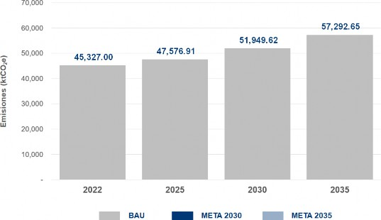
Figure 6. GHG emissions reduction scenario to 2030 and 2035 (BAU) with respect to the Projections for the base year 2022. Source: Own elaboration.
Next, the two scenarios are broken down using 2022 as the baseline year, showing a scenario A by 2030 and a scenario B by 2035.
In Figure 7, the scenario A It shows the projected emissions to 2030 according to the historical trend expressed, at 51,949.62 kt CO₂ eq, which would occur in the country if the mitigation actions, levers and policies are not implemented. Based on this, an evaluation was carried out on the actions implemented and underway of NDC 2.0 until August 2025, with a reduction impact of 4,734.7 kt CO₂ eq. Likewise, the new targets of actions projected in the NDC
3.0 RD-2025 represents an additional reduction of 9,997.4 ktCO2 eq.
Taken together, these figures indicate a technically feasible reduction potential of 14,732.1 by 2030 ktCO2 eq, these figures being able to be assumed as a contribution to their climate commitments.
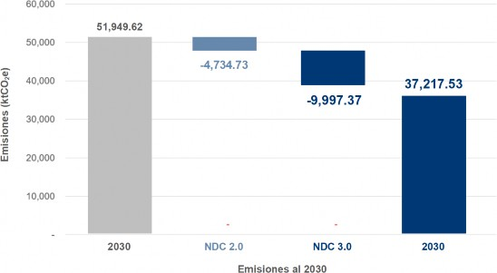
Figure 7. Emissions scenario projected to 2030 in NDC 3.0 RD-2025.
Source: Prepared by the author, based on information from Annexes 1 and 4, and the Portfolio Analysis for the implementation of NDC 3.0 RD.
In Figure 8, the scenario B It shows the projected emissions to 2035, according to the historical trend expressed as 57,292.65 kt CO₂ eq that would occur in the country if the action goals, levers, and policies are not implemented Regarding mitigation, an assessment of NDC 2.0 was conducted based on the sum of actions. implemented and underway between 2022 and 2035, resulting in a reduction impact of 8,351.95 kt CO₂ eq. For their part, the new action targets projected in NDC 3.0 represent a an additional reduction of 9,997.4 kt CO₂ eq. Taken together, these figures indicate a technical potential and a viable reduction by 2035 of 18,349.32 kt CO₂ eq, figures that can be assumed by the country for the contribution to 2035.
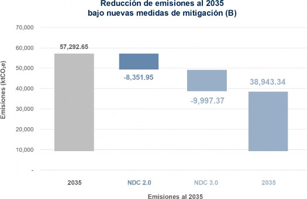
Figure 8. Emissions scenario projected to 2035 in NDC 3.0 RD-2025. Source: Prepared by the author. Based on the information in Annexes 1 and 4, and the Portfolio Analysis for the implementation of the NDC 3.0 RD.
4.4. Levels of Ambition
According to the analysis of the documentation presented, the sectoral discussions and meetings bilateral agreements have developed the scenarios shown, such as how the Dominican Republic, through its NDC proposes to contribute to the achievement of the Convention agreements as set out in its Article 2, paragraph 1 (a), and to Article 4, paragraph 1 of the Paris Agreement.
Figure 9 shows the projected evolution of greenhouse gas (GHG) emissions from period 2020-2035, expressed in kilotonnes of CO₂ equivalent (kt CO₂ eq). The baseline (P_2022), represented by the dotted green line, reflects the expected growth in emissions under the Under current conditions, it will increase from approximately 45,327 kt CO₂ eq in 2022 to 57,293 kt CO₂ eq in 2035. Furthermore, the new ambition (dotted red line) incorporates additional mitigation measures, with a progressive reduction from 42,842 kt CO₂ eq in 2025 to 37,217 kt CO₂ eq in 2030, equivalent to about 14,732.1 kt CO₂ eq in 2030.
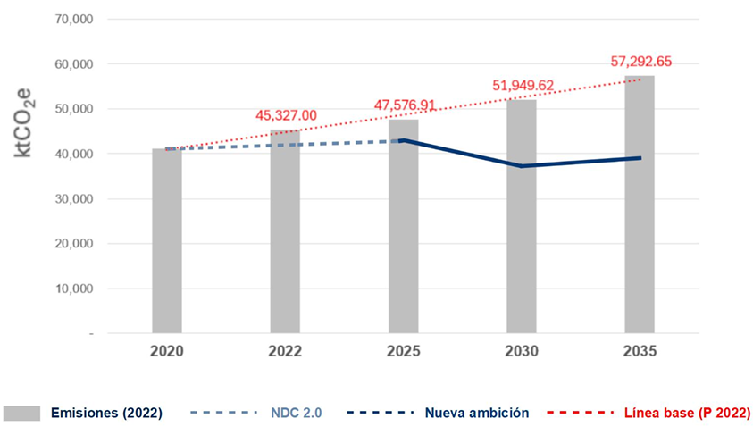
Figure 9. Projected evolution of greenhouse gas (GHG) emissions for the period 2020-2035. Source: Prepared by the authors, based on the information in Annexes 1 and 4, and the analysis of Portfolio for the implementation of NDC 3.0 RD.
The behavior of both trajectories demonstrates the potential for emissions reduction derived from The proposed new mitigation PAMs, the achieved and expected impact of the NDC 2.0 portfolio (whose implementation horizon is 2030) and the new portfolio identified is equivalent to approximately of 18,349.32 kt CO₂ eq by 2035, highlighting the impact of greater climate ambition on the path to low-carbon development.
Considering the new portfolio, which presents a potential for reducing GHG emissions in the different sectors for a total of 9,997.37 kt CO₂ eq, a comparison is established in the new ambition for NDC 3.0. To this end, an estimate of all policies, goals and actions was made, as well as the necessary investments, which amount to USD 11,468,278,818.18, to be channeled through different financial vehicles in different sectors as can be seen in the Figure 10.
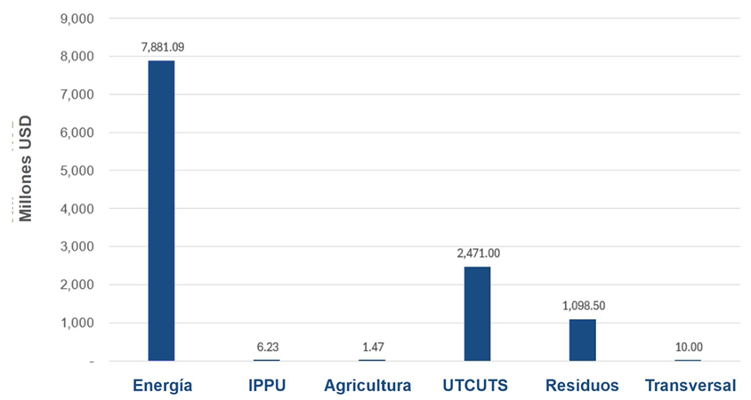
Figure 10. Financial breakdown in USD by sector for PAMs in NDC 3.0. Source: Prepared by own, based on the Information in Annexes 1 and 4, and the Portfolio Analysis for the implementation of NDC 3.0 RD.
The Dominican Republic structures its national contribution to climate change mitigation in two Complementary levels, conditioned and unconditioned. These reflect not only the degree of dependence regarding international support, but also the magnitude of the investments required to achieve each level of ambition, as established in Article 4 of the Paris Agreement. Taken together, Both levels contribute to the Dominican Republic's decarbonization trajectory and its goals of sustainable development in the medium and long term.
In that sense, the country has sought to ensure that the goals reflect the greatest possible ambition, having Considered in the design of the goals were the historical and current contributions, the capabilities respective national circumstances, in application of the principle of common responsibilities but differentiated.
He unconditioned component , equivalent to 30% of the investments required for the total mitigation goal, represents the volume of emissions reductions that the country commits to achieving with national resources and other Sources managed by the country. This level reflects the financial effort that the Dominican Republic is prepared to assume and mobilize in a sovereign manner, prioritizing interventions that can to be implemented in the short and medium term within the framework of public priorities and policies existing and national sectoral strategies.
For his part, the conditioned component , corresponding to the remaining 70% of the investments required for the mitigation goal, is directly linked to the mobilization of additional international external resources. Considering the availability of concessional climate finance, technology transfers, cooperation innovative technical and financing mechanisms, essential for implementing high-impact projects impact and higher capital costs, such as structural transformation and matrix improvement energy and distribution networks, electrification and modernization of transport, valorization of waste and large-scale ecosystem restoration.
4.5 Mitigation Co-benefits
Within the framework of NDC 3.0 RD-2025, climate action is conceived as a fundamental piece of Sustainable development that generates benefits beyond emissions reduction. The portfolio of policies, actions and measures promote co-benefits in climate resilience, just transition, economic diversification and green jobs, health and air quality, and economic competitiveness, to This timeframe integrates synergies between adaptation and mitigation, and incorporates a cross-cutting gender perspective. These measures strengthen energy security, reduce macroeconomic vulnerabilities, and boost economic activity. emerging sectors and promote social inclusion, positioning NDC 3.0 as a strategic instrument for well-being, resilience and productive transformation long term.
Adaptation (resilience): The portfolio of measures systematically strengthens resilience climate of the country by reducing the vulnerability of the energy, urban, productive and Environmental initiatives in the face of extreme events, heat waves, droughts, floods, and storm surges. such as renewables with storage (BESS), more robust electricity grids, MEPS for cooling, Public LED lighting, electric mobility, and efficient bus corridors increase the Operational reliability and continuity of essential services. In the agro-environmental sector, the climate-smart livestock farming, biodigestion, composting, and irrigated rice management Intermittent water use (AWD), reforestation and mangrove protection reduce production losses, They control erosion, ensure water for irrigation and energy, and improve absorption capacity Climate impacts. In sanitation and waste, the Duquesa biogas plant and the modernization of plants Wastewater reduces health risks, fires and leachate, strengthening urban resilience and coastal.
Just transition: The set of measures promotes a just transition by prioritizing reconversion labor shift from carbon-intensive sectors towards clean, formal and technologically advanced activities more advanced, guaranteeing social inclusion and equal opportunities. Local jobs are promoted. in the installation, operation and maintenance of renewable energy, energy efficiency, sustainable mobility, sanitation, waste management, and bioeconomy. Programs such as MEPS, Kigali, vehicle inspection and scrapping, and Intelligent logistics (FMS/TMS) strengthen technical training, combat informality, and raise workplace safety standards. Territorial integration through cable cars, monorails and Bus corridors improve access to employment and services in outlying neighborhoods, while Rural and coastal measures strengthen the income of small producers, artisanal fishermen and forest communities.
Economic diversification and green jobs: The portfolio catalyzes a productive transformation towards a more diversified, resilient and knowledge-based economy, creating value chains in renewable energy, electrical storage, efficient RAC services, digital logistics, bioenergy, Recycling, ecotourism, and blue tourism. Lean manufacturing and industrial innovation are encouraged. (low-carbon cement, co-processing), technology transfer (including small-scale nuclear) scale), and the development of nurseries, bio-inputs, biodigesters, and value-added centers. These These activities broaden the export base, reduce dependence on imported fossil fuels, and They generate higher quality green jobs in urban, rural, and coastal sectors.
Health and air quality: The measures produce substantial public health benefits by reducing local pollutants such as SO₂, NOx, PM₂.₅, odors and pathogens, especially in dense urban areas, road corridors and Communities near landfills and industrial facilities. The replacement of fuel oil with gas. natural resources, the deployment of renewables, energy efficiency, clean mobility, and modern management Waste and wastewater treatment improve air and water quality and reduce diseases respiratory and gastrointestinal health issues, and reduce chronic health risks. In rural areas, the Biodigestion, composting, and good livestock practices limit vectors, odors, and pollution. soils and bodies of water, raising the quality of community life.
Economic development: From a macroeconomic perspective, the portfolio reduces systemic costs and external vulnerabilities through reduced fossil fuel imports, the Strengthening energy security and improving production efficiency. Savings are generated. fiscal (LED lighting, energy efficiency), greater reliability of the electrical system, lower logistical and production costs, and greater sectoral competitiveness (energy, agribusiness, cement, tourism). The associated investments attract private capital, drive innovation, and boost activity urban centers and strengthen rural and coastal hubs, with multiplier effects on employment, national income and productivity.
Committee for adaptation measures: A key feature of the portfolio is its ability to integrate adaptation with climate mitigation, Maximizing net climate benefits. Measures such as Kigali, Minimum Energy Performance Standards (MEPS) for Refrigeration and Air Conditioning (RAC), Alternating Humidification and Drying (AWD) in rice, climate-smart livestock farming, biodigestion, composting, modern sanitation, Reforestation and mangroves reduce CO₂, CH₄ and N₂O emissions while increasing resilience thermal, water, and productive. These synergies allow for a reduction in the climate footprint of adaptation. Strengthen natural carbon sinks (forest and blue carbon) and improve energy and material efficiency of the economic system as a whole.
Gender: The portfolio integrates gender equity across all areas by promoting participation active participation of women in traditionally male-dominated sectors such as energy, logistics, sanitation, transport and waste management, through technical training, professional certification and jobs Quality formal education. Opportunities for rural women in bioeconomy and livestock farming are strengthened. sustainable practices, composting, forest nurseries and coastal conservation, increasing their autonomy economic development and community leadership. Improvements in mobility, public lighting, sanitation, and Improved air quality reduces health risks and disproportionate household burdens, facilitating Women's labor market participation and equitable access to services, employment and decision-making in the climate transition.
In it Annex 3: Mitigation co-benefits, The complete table, which describes in detail the co-benefits of the goals, can be found here. selected mitigation measures, in terms of Adaptation (resilience), Just Transition, Diversification and Green jobs, Health and air quality, Economic development, Co-mitigation of measures adaptation, and gender effects and impacts.
4.6 Carbon Market
The Dominican Republic does not contemplate participation in international carbon markets for the compliance with its NDC.
With the aim of adapting the national institutional framework to the mandates of the Paris Agreement and its handbook rules, in August 2025 the Executive Branch, through Decree No. 358-25, renamed the National Council for Climate Change and Clean Development Mechanism (CNCCMDL) as the National Council for Change Climate and Carbon Market (CNCCMC).
The Dominican Government, through the CNCCMC, is in the technical preparation phase and institutional framework for the establishment of a Domestic Emissions Trading System (STS) and has developed a roadmap for a Pilot Program with the support of the “Collaborative Instruments” initiative for Ambitious Climate Action” (CiACA)38. A national market allows for limiting GHG emissions in certain sectors and offering incentives for A long-term investment in low-carbon technologies. This also stimulates economic transformation. and sustainable development, innovation and competitiveness and mitigation co-benefits.
Similarly, the Dominican Republic participates voluntarily in the mechanisms of Article 6 of Paris Agreement, which includes the cooperative approaches of Article 6.2 and the “Paris Agreement Crediting” Mechanism” (PACM) of Article 6.4. Within this framework, the country prioritizes the application of the criterion of Additionality, high standards of environmental integrity, and transparency in transactions. In Consequently, the mitigation outcomes intended for international transfer, both under the Mechanisms of Article 6, such as the voluntary market, will come from activities that are not included in the goal committed to in this NDC.
Both projects developed under the SCE and those implemented under Article 6 will employ a unified national registry and monitoring mechanism, in order to ensure consistency between instruments, avoid double counting, ensure environmental integrity and promote transparency of the transactions.
5. Adaptation
5.1. Context of Adaptation Policies, Measures and Actions
In the Dominican Republic, adaptation is addressed by linking development planning with climate vulnerability and resilience building, highlighting a “top-down” approach downwards” (national policies, sectoral planning) combined with one “from the bottom up "up" (local participation, community adaptive measures). This coordination is carried out at based on a legal and strategic framework, including the National Adaptation Plan (PNACCRD), which guides the reduction of the country's vulnerability, integrates adaptation into planning development and focuses on increasing the resilience of key sectors such as agriculture, biodiversity and forests, water, health and infrastructure.
In this context, the National Council for Climate Change and Carbon Market (CNCCMC) acts as the coordinating body for national climate policy, the Ministry of Environment and The Ministry of Natural Resources (MMARN) exercises environmental leadership, in accordance with Law No. 6400; The Presidency, with the approval of Law No. 45-25, has assumed the functions of territorial planning integrates climate change into territorial organization and its alignment with disaster risk management for national development planning, In accordance with Law No. 368-22; the Ministry of Finance and Economy ensures sustainability financial aspects of climate change policies, integrating the climate variable into the Budget planning and climate finance mechanisms (see National Context) Chapter 3).
Likewise, sectoral ministries, such as Agriculture, Tourism, and Health, play a role operational in the implementation of adaptation measures with mitigation co-benefits, with- contributing to reducing the vulnerability of the productive and social sectors.
Adaptation to climate change occupies a prominent place in the legal framework of the Republic The Dominican Republic, which incorporates a specific mandate on the subject in its Constitution. In its Article Article 194 establishes that the State must prioritize the creation and implementation of a land-use plan. territorial through a law, with the objective of guaranteeing the efficient and sustainable use of The country's natural resources, aligning with the needs for adaptation to climate change.
The National Development Strategy 2030 (END), established by Law No. 1-12, recognizes the importance of integrating climate change as a cross-cutting theme in public policies at all levels. Its fourth axis affirms the commitment to achieving a society with a culture of sustainable production and consumption, which manages risks and protection fairly and effectively of the environment and natural resources, and promotes appropriate adaptation to change climatic.
5.2. National priorities for adaptation to climate change
This chapter presents the Dominican Republic's ambitious vision to transform adaptation into The driving force behind a new sustainable development. The national adaptation goals established in the NDC 3.0 RD-2025 are aligned with the Global Adaptation Goal (GGA) of Article 7.1 of the Paris Agreement, aimed at “ to improve adaptability, strengthen resilience, and reduce vulnerability to change global climate ” In this context, the adaptation approach adopted by the Dominican Republic responds according to climate justice criteria, seeking a fair and equitable distribution of the burdens and benefits of climate action, so that sectors, groups and more vulnerable territories, making the costs associated with the transition to resilience assumed in a proportionate manner.
The NDC 3.0 RD-2025 raises national ambition by translating this commitment into concrete and measurable goals, that integrate adaptation as part of the country's sustainable development. Based on the prioritization of strategic sectors, a broad participatory and inter-institutional process was developed (see Annex 5: Participatory Process (for more details), from which emerged the national commitment to adaptation, expressed in 7 sectoral goals, for a total of 41 measures, reflecting the diversity of challenges and opportunities of Dominican territory.
These goals and measures are consistent with the main planning and policy instruments national public policy, including the END, the National Climate Change Policy (PNCC), the PNACC-RD and the Sectoral strategies linked to the management of natural resources, environmental sustainability, health and food security. This articulation ensures that climate action is integrated in a way that cross-cutting in the national development agenda, enhancing synergies and avoiding duplication in the institutional efforts.
The distribution by sectors is as follows:
Water resources and water security: 5 measures
Agriculture and food security: 6 measures
Resilient cities: infrastructure and human settlements: 6 measures
Health: 5 measures
Tourism: 7 measures
Coastal and marine resources: 6 measures
Ecosystems, biodiversity and forests: 6 measures
Each goal and measure has SMART indicators (Specific, Measurable, Achievable, Relevant and (Defined temporarily), which will allow for a systematic evaluation of progress towards the objectives proposed and guide the processes of monitoring and periodic review of the NDC.
The graphic sheets presented below summarize the prioritized adaptation measures in NDC 3.0, organized according to the sectors and strategic axes that support the national policy towards to climate change. These measures represent the concrete expression of the adaptation ambition of country, aimed at strengthening the resilience of ecosystems, communities and systems productive in the face of climate impacts.
Each fact sheet integrates goals for 2030 and 2035, progress indicators, overarching objectives, and information regarding the responsible entities, which facilitates their incorporation into planning instruments, national monitoring and reporting. Its formulation responds to the methodological framework of NDC 3.0, which promotes integrated, inclusive and evidence-based management, ensuring consistency with the GGA of the Agreement Paris and with the commitments established in the national sustainable development plans and strategies.
Taken together, these measures reflect the country's commitment to transformative adaptation, aimed at reduce vulnerabilities, strengthen institutional and community capacities, and guarantee the sustainability of livelihoods in the face of climate change.
The details regarding the specific measures defined for achieving the overall goal of each sector are presented at the Annex 2: Adaptation Measures by Sector .
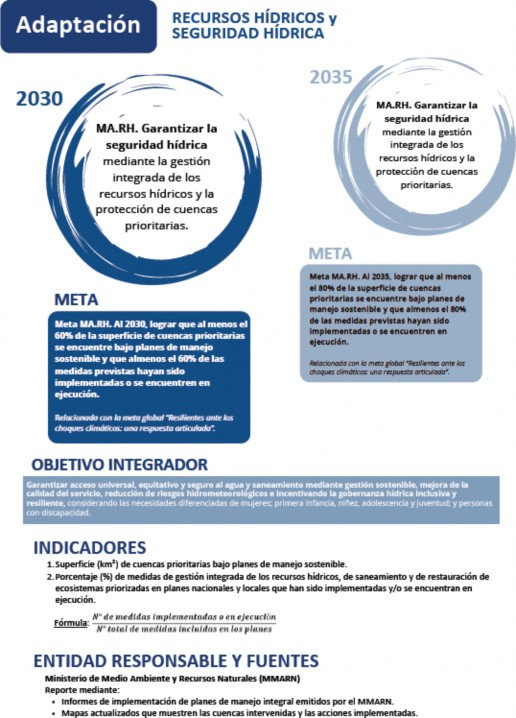
The measure of Water Resources and Water Security It promotes integrated water resources management and the protection of priority basins such as It is a foundation for guaranteeing the country's water security. It seeks to reduce vulnerability to droughts. floods and other hydrometeorological events, through the planning and sustainable management of watersheds and improved access to and quality of water and sanitation. It also promotes water governance. inclusive and resilient, strengthening coordination between institutions and local actors to ensure to ensure the sustainability of ecosystem services and associated livelihoods.
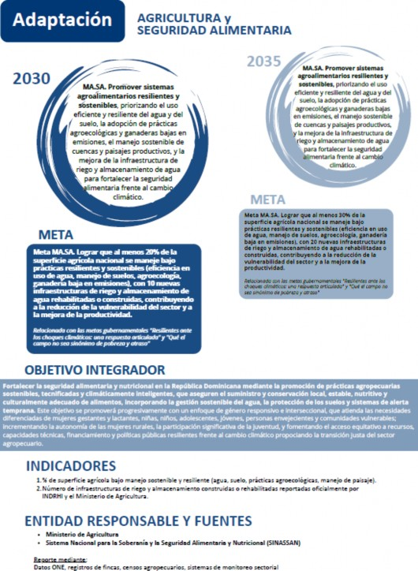
The measure of Agriculture is fundamental to guaranteeing the Food Safety national in a context of climate change. It focuses on making the use of water and soil more efficient through resilient technologies and practices, from efficient irrigation systems to agroecological management of soils and pests. The specific and measurable goals reflect the NDC's ambition to move towards a climate-smart agriculture that reduces its environmental footprint and increases its productivity sustainable. By integrating priority producers and watersheds, the measure builds resilience simultaneously in food systems, water resources, and the communities that depend on them they.
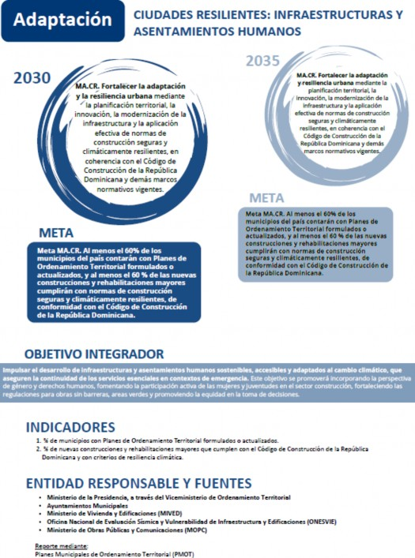
The measure of Resilient Cities It seeks to strengthen urban adaptation and resilience through territorial planning, innovation and the modernization of infrastructure, along with the implementation of safe construction standards and climate-resilient. Promotes the development of sustainable and accessible human settlements, capable of maintaining the continuity of essential services in the face of emergencies and weather events extremes. Furthermore, it promotes the integration of gender and human rights perspectives into management urban, promotes the active participation of women and youth in the construction sector, and supports the creation of inclusive, safe and sustainable urban environments.
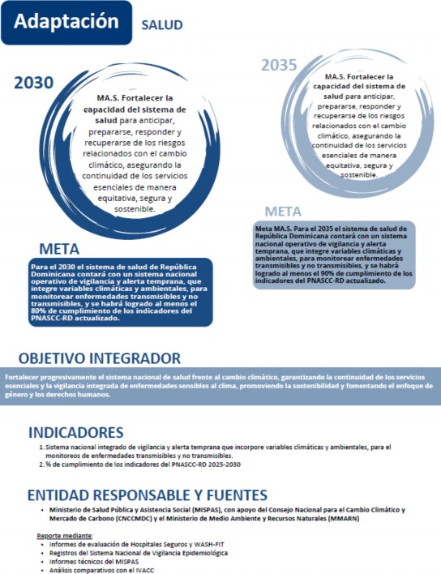
The measure of Health It seeks to strengthen the capacity of the national health system to anticipate, prepare, respond and To recover from the risks associated with climate change. It promotes the integration of variables climatic and environmental data in monitoring and early warning systems, in order to monitor communicable and non-communicable diseases and protecting public health in the face of extreme events. Furthermore, It promotes the improvement of essential health infrastructure and services, ensuring their continuity. in an equitable, safe and sustainable manner, with a gender and human rights approach that prioritizes attention to populations in vulnerable situations.
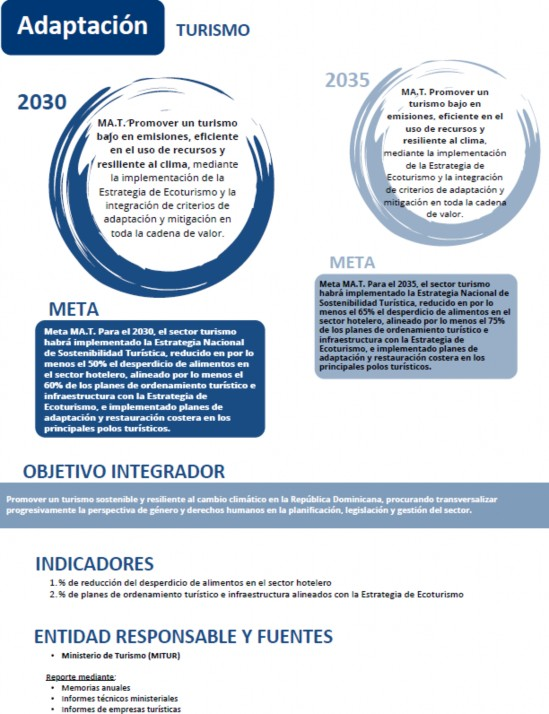
The measure of Tourism It promotes the transformation of the tourism sector towards a low-emission, resource-efficient model resources and resilient to climate change. Promotes the implementation of the National Strategy of Tourism Sustainability and the incorporation of adaptation and mitigation criteria throughout the entire chain value, promoting responsible practices in water, energy, and waste management. Furthermore, It seeks to strengthen the planning and management of tourist areas, and reduce waste. food in the hotel sector and promote the restoration of coastal ecosystems, ensuring that the Tourism development contributes to environmental sustainability and the well-being of communities premises.
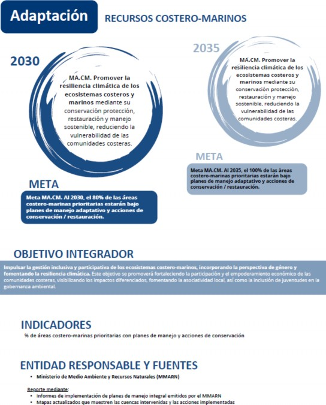
The measure of Coastal and Marine Resources It is of great relevance to Dominican resilience, with coastal-marine ecosystems being the first line of defense against climate impacts, such as sea level rise and events extremes. This measure directly addresses this strategic vulnerability, establishing an ambition Clear: Protect and restore between 80% (2030) and 100% (2035) of priority areas by Adaptive management plans. This action seeks not only ecological resilience, but also social resilience. by reducing the vulnerability of coastal communities through inclusive management that prioritizes their Participation and empowerment. Thus, the measure consolidates adaptation as a pillar for security territorial and the sustainable development of our coasts.
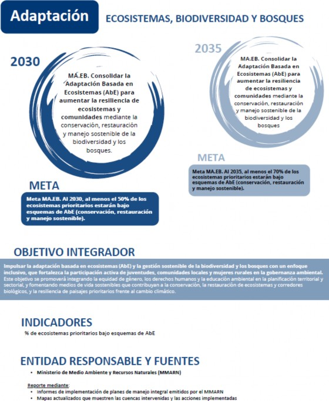
The measure of Ecosystems, Biodiversity and Forests It consolidates Ecosystem-based Adaptation (EbA) as a central strategy of NDC 3.0. It seeks to increase climate resilience through conservation, restoration and sustainable management of priority ecosystems, with specific targets of 50% by 2030 and 70% by 2035. Their implementation with An inclusive approach strengthens environmental governance with the participation of youth, local communities and Rural women. In this way, a comprehensive vision is articulated that combines environmental protection with equity. social, positioning ecosystems as key natural infrastructure for national adaptation.
He Estimated investment amount for the implementation of adaptation measures in the Dominican Republic it is more than USD 12.251 billion for the seven priority sectors, which include a total of 41 measures with 155 specific goals (see Table 6). This value should be considered a minimum estimate, since for some measurements it was not It is not possible to perform an economic valuation due to the lack of specific information, while others could involve additional costs beyond those conservatively estimated.
Table 6. Portfolio of proposed adaptation policies, measures and actions with their estimated value Investment requirements for the measures Source: Own elaboration.
|
Sectors |
Measures, Actions and Policies (PAM) |
Estimated Investment Requirements USD |
|
WATER RESOURCES AND WATER SECURITY |
MA.SH.1. Guarantee water security in the Dominican Republic through integrated and sustainable management of basins and efficiency in distribution systems, reducing climate vulnerability in the drinking water sector for 2030 and taking into account the intersectionalities of people beneficiaries. |
2,734,390,000 |
|
MA.SH.2. Improve the quality of water-producing ecosystems that supply the systems of supply, through gender-responsive actions of conservation, restoration and strengthening of the sanitation infrastructure in order to reduce water pollution. |
291,510,000 |
|
|
MA.SH.3. Reduce hydrometeorological risk through integrated basin management, protection of critical ecosystems and strengthening of flood prevention systems, flash floods water and drought episodes, ensuring the intersectional gender perspective. |
5,419,700,000 |
|
|
MA.SH.4. Strengthen APPs and collaborative governance mechanisms for comprehensive management of the sector water, ensuring a gender focus, community empowerment, and participation multisectoral and financial sustainability. |
1,413,767,227 |
|
|
MA.SH.5. Facilitate access to an insurance system against damage caused by events climate-related events (i.e., floods or droughts), strengthening the resilience of vulnerable communities and economic sectors. |
7,029,080 |
|
TOTAL |
9,866,396,30 |
|
|
FOOD SAFETY |
MA SA.1. To make the resilient use of water and soil more efficient for food production, including the use of technologies adapted to the local context. |
1,046,000,00 |
|
MA SA.2. Develop an Integrated Productive Landscape in the Yaque del Norte, Yuna and Ozama basins, that links sustainable production, ecosystem restoration, and resilient resource management natural. |
50,100,000 |
|
|
MA SA 3. Optimize water distribution through construction, rehabilitation and management of hydraulic infrastructure. |
50,100,000 |
|
|
MA SA 4. Promote climate-smart and sustainable livestock farming through the adoption of silvopastoral systems that increase productivity, reduce emissions, and strengthen the climate resilience. |
25,438,596 |
|
|
MA.SA 5. Conserve and sustainably manage the most productive agricultural soils (classes I and II), guaranteeing their agricultural vocation and strengthening food security, in consistency with Resolution 24-2024 and the Territorial Planning Law. |
ND |
|
|
MA.SA.6. To generate, through the Agroclimatic Technical Committee, spaces for discussion among the actors for the management of local agroclimatic information, in order to identify the best practices for adapting to climatic phenomena, which are then transferred to technicians and producers, through timely data. |
ND |
|
TOTAL |
1,171,638,596 |
|
|
HEALTH |
MA. S.1. Strengthen integrated surveillance and early warning systems for health and climate. |
12,000,000 |
|
MA.S.2. Strengthening the resilience of health centers to climate change and risks natural, through the expansion of the Safe Hospitals program, application of the instrument WASH-FIT, and compliance with the recommendations issued by both tools. |
50,300,000 |
|
|
MA.S.3. Strengthening health governance in the face of climate change, through the Incorporation of coordinated work mechanisms within MISPAS. |
62,130,000 |
|
|
MA.S.4. Monitor compliance with the indicators of the National Adaptation Plan Health and Climate Change (PNASCCRD 2025-2030). |
1,615,000 |
|
|
MA S.5. Updating and expanding vulnerability and adaptation (V&A) assessments of health system in the face of climate change. |
3,690,000 |
|
TOTAL |
129,735,00 |
|
|
HUMAN SETTLEMENTS AND INFRASTRUCTURE |
MA. CR.1 Strengthen territorial and urban planning and land use management for to increase the climate resilience of cities and contribute to recovery and conservation of urban ecosystems. |
60,328,571.43 |
|
MA. CR.2. Create, update and strengthen building standards for climate resilience. |
40,000,000 |
|
|
MA. CR.3 Promote Strategic Environmental Assessment (SEA) of Land Use Plans Territorial at the National, Regional and Municipal levels with a focus on climate risk. |
7,825,000 |
|
|
MA. CR.4 Strengthen the capacity and skills of public servants and institutions to prevent and mitigate climate risks. |
14,396,000 |
|
|
MA. CR.5 Facilitate access to insurance systems for damages from climate events in vulnerable territories. |
1,100,000 |
|
MA. CR.6 Strengthen the Early Warning System for hydro-meteorological events. |
22,000,000 |
|
TOTAL |
145,649,571.43 |
|
|
ECOSYSTEMS, BIODIVERSITY AND FORESTS |
MA. EB.1 Incorporate Ecosystem-based Adaptation (EbA) and other solutions based on Nature (SbN) identified in sectoral plans, biodiversity and development policies sustainable. |
77,842,857,14 |
|
MA. EB.2 Adopt the landscape approach to protection, conservation, restoration and management ecosystemic. |
10,700,000 |
|
|
MA. EB.3 Strengthen land use and planning schemes to prevent changes in land use soil, deforestation and degradation, promoting restoration under REDD+ and PSA approaches. |
77,039,285.71 |
|
|
MA. EB.4 Promote the connectivity of habitats, species and ecological processes to reduce vulnerability to climate change and disaster risk reduction. |
255,000,000 |
|
|
MA. EB.5 Strengthen the incorporation and implementation of climate variability and change in regulatory instruments, AP management and Forest Management. |
29,510,000 |
|
|
MA. EB.6 Promote and enable conditions for practices and technologies favorable to conservation of biodiversity. |
17,175,000 |
|
TOTAL |
467,267,142.86 |
|
|
TOURISM |
MA.T. 1. Integration of the concept of carrying capacity in projects and plans conceived and evaluated, based on studies available at the national level. |
1,000,000 |
|
MA.T.2. Reducing food waste at the source, sustainable purchasing and measurement of food waste. |
322,000,000 |
|
|
MA.T.3. Reducing pollution through recycling and reuse of waste and reducing the GHG emissions associated with them in the hotel sector. |
ND |
|
|
MA.T.4. Coastal marine tourism supports the regeneration of ecosystems and the conservation of biodiversity, and invests in employment and local communities. |
ND |
|
MA.T.5. Development of manuals and/or guides for climate change adaptation. |
3,000,000 |
|
MA.T.6. Sustainable Coastal Management (DRL-1154 project) is nearing completion. |
61,000,000 |
|
MA.T. 7. Incentive for the implementation of the ENEC-2030 in tourist destinations. |
ND |
|
TOTAL |
387,000,000 |
|
|
COASTAL-MARINE |
MA.CM 1. Develop and implement coastal and marine zoning and planning processes. |
ND |
|
MA.CM 2. Strengthen the sustainable and safe management of coasts with a climate change approach. |
70,000,000 |
|
|
MA.CM.3. Strengthen institutional and technical capacities for research and monitoring marine. |
122,380 |
|
|
MA.CM.4. Implement comprehensive coastal pollution management and environmental compliance. |
ND |
|
|
MA.CM 5. Establish and operate a financial fund for ecosystem recovery coastal-marine. |
10,000,000 |
|
|
MA.CM 6. Develop and operationalize the production of and access to standardized marine data. |
2,800,000 |
|
TOTAL |
82,922,380 |
|
GENERAL TOTAL |
12,250,608,997.29 |
|
6. Losses and Damages
6.1. Losses and damages in the national context
The Dominican Republic, due to its geographical position in the Caribbean, has a high level of exposure to extreme weather events such as hurricanes, storms, floods and droughts, whose The intensity and frequency of these events is exacerbated by the effects of climate change. The magnitude of the The damage and losses frequently caused by these events demonstrate the high susceptibility to disasters caused by hydrometeorological phenomena pose a challenge to sustainability economic, social and environmental.
In the last 90 years the country has been impacted by more than 40 hydrometeorological events, affecting more than 4 million people39. Likewise, the direct and indirect economic losses associated with disruptive events are They estimate USD 8.606 billion40, associated with essential infrastructure, the agricultural and tourism sectors. Along the same lines, The CDRP estimates average annual losses (AAL) of USD 1,401 million (equivalent to 1.2% of GDP). 2023), broken down into USD 676 million for tropical cyclones, USD 467 million for earthquakes and USD 259 million for floods, only in damage to buildings and contents (does not include infrastructure or other sectors). Additionally, PMLs (probable maximum loss) are their- essential; for a 100-year return period they amount to USD 13.8 billion (wind), USD 10.4 billion (earthquake) and USD 5.96 billion (flood).
Historical evidence reflects that the economic impact has been considerable; in 1979, the hurricanes David (Category 5) and Frederick, just six days apart, scored one of the Most destructive periods: 2,000 deaths, >1.2 million people affected and USD 577 millions in damages (12% of 1978 GDP), in 1998, Hurricane Georges left >150,000 people homeless, >220,000 homes damaged or destroyed, 4.2 million affected, 70% of the bridges destroyed and significant losses in agriculture, with USD 1.01 billion in damages (4.7% of GDP) and USD 1.16 billion in losses, Jeanne (2004) caused flooding and landslides with estimated damages of USD 270 million; Noel (2007) left 129 dead and severe Impacts on road and water networks39, in 2017, storms Olga and Noel caused damage and losses estimated at USD 437 million (1.2% of GDP), while the rains of November 2016 and April 2017 generated direct losses of USD 862 million (1.1% of GDP), more recently, Hurricane Fiona in 2022 caused losses direct economic benefits of USD 381.74 million, equivalent to 0.3% of nominal GDP4142 Furthermore, slow-evolving phenomena such as coastal erosion, aquifer salinization, and Loss of biodiversity and degradation of ecosystems increase structural risk and They exacerbate non-economic losses, affecting cultural identities, mental health, and ecosystem services and the livelihoods of coastal and rural communities. In this context, The loss of human life associated with extreme weather events is one of the more serious and evident manifestations of increased climate risk.
This highlights the urgent need to prioritize vulnerable populations and improve the generation of climatic, socioeconomic and territorial data and statistics, in order to inform the decisions, and monitor the evolution of national vulnerability.
In the national context, losses and damages must be addressed from a people-centered perspective, considering both observed and potential impacts, with an emphasis on social inequalities and territorial factors that amplify exposure and sensitivity to climate change. This implies recognizing the climate justice dimension, given that the communities with less historical responsibility in the Greenhouse gas emissions face the greatest consequences, including damage irreparable damage to their well-being, their fundamental rights and, in the most extreme cases, the loss of life human.
6.2.Observed and potential impacts of climate change
The impacts observed in the Dominican Republic include recurring damage to infrastructure critical, disruptions to essential services, agricultural and fishing losses, and displacement of communities, in addition to impacts on public health and cultural heritage.
A growing indicator of the climate threat is the annual average of extreme events, where it has A notable increase in the frequency of hydrometeorological events has been observed, going from a average of one (1) high-impact climatic event, to 0.5 times per year in the 1960s to almost one event per year in the 1990s and 2.6 events per year in the 2000s. Between 2010 and 2017, the The average was about 2 events per year. Similarly, recent climate projections indicate an increase in the average annual temperature of 2°C to 3°C in minimum temperatures and 1°C to 3°C in maximum temperatures. This increase, along with the expected reduction in rainfall, will intensify the cycle. hydrological, increasing the frequency of extreme rainfall events and thus a greater propensity to Flash floods and the increase in the average number of events per year (PNACC/TNCC, 2016). The scenarios Climate forecasts project a further increase in the intensity and frequency of these events, as well as the intensification of droughts, rising sea levels, and increased incidence of heat waves.
According to the study “Vulnerability and Risk Indices to Climate Variability and Climate Change At the “Dominican Republic Municipal Level” 10 municipalities were identified as presenting a higher risk to at the sectoral level across the country. In the agricultural sector, the municipalities with the highest Vulnerable areas include Pedro Santana, Higüey, Yamasá, El Seibo, Santo Domingo Norte, La Vega, and Moca. Peralvillo, Neiba, and Villa Riva. Regarding human settlements, the greatest risk is concentrated in the National District, Santo Domingo East, Santo Domingo West, Santo Domingo North, Los Alcarrizos, Higüey, Santiago, Pedro Brand, Eugenio María de Hostos, and Bajos de Haina. Regarding tourism in the municipalities Coastal areas include Higüey, San Rafael del Yuma, Puerto Plata, the National District, and San Pedro de Macorís. Sosúa, Boca Chica, Las Terrenas, Samaná, and La Romana. Finally, in the livelihoods sector, the The most exposed municipalities are Santo Domingo Este, Distrito Nacional, Santo Domingo Norte, Santiago, Los Alcarrizos, San Cristóbal, La Vega, Santo Domingo Oeste, San Francisco de Macorís and Baní.
6.3. Actions aimed at the prevention, reduction and management of losses and damages
The country acknowledges that, although there are relevant initiatives, loss and damage management still presents challenges. significant gaps. Platforms such as the Collection System and are currently being implemented Dominican Republic Damage Assessment (SIRED-RD) for Post-Disaster Data Collection on direct economic damages and losses, and training has been conducted on assessments of post-disaster recovery needs, however, there is no comprehensive national approach that include both direct and indirect economic losses and non-economic losses, nor the impacts of slow evolution. In that sense, the actions that should be prioritized include: the standardization of methodologies for measuring and reporting losses and damages; the integration of this approach into plans such as the PNACC and the National Disaster Risk Reduction Plan, capacity building institutional and local frameworks for rapid assessment and preventative planning; and the design of financing mechanisms for recovery and rehabilitation.
In line with these efforts, the country has initiated discussions with the Santiago Network through a Request for technical assistance focused on the design of protocols and systems for monitoring and reporting losses and damages, in order to systematize the assessment, recording and documentation of losses economic and non-economic. This initiative seeks to strengthen national capacities and improve the access to climate information and finance, while promoting greater coordination interinstitutional and sectoral to guarantee a timely and effective response.
In parallel, and as part of a comprehensive approach, the country is making progress in actions aimed at prevention. of new risks and the reduction of losses and damages through the implementation of measures adaptation, including ecosystem-based adaptation (EbA) and preventative infrastructure, as well as through financial mechanisms for recovery and rehabilitation mentioned within the instruments intended to promote the implementation of the NDC. These actions include the design and implementation of early warning and climate monitoring systems, through the development of the National Policy on Early Warning Systems led by the Ministry of the Presidency, for Strengthen planning and response to climate risks.
Measures such as conducting risk and vulnerability studies (index of) are also considered. Vulnerability and Risk to Climate Variability and Change at the level of the municipalities of the Republic Dominican Republic), and the formulation of roadmaps for the development of insurance and mechanisms for risk transfer, with special emphasis on vulnerable populations, the relocation of communities in at-risk areas. These actions include social protection programs and support for livelihoods, as well as specific projects such as the Neighborhood Resettlement Action Plan Azul, financed by the European Investment Bank (EIB) through a loan of approximately 50 millions of dollars. This project is part of a public works improvement program. Aimed at reducing disaster risk. It contributes to decreasing exposure to and the impacts of disasters. extreme weather events when resettling homes located in high-risk flood zones43.
6.4. Institutional arrangements to support the implementation of actions for the prevention, reduction and management of loss and damage
In the Dominican Republic, loss and damage management is framed within the institutional arrangements for the Risk management and climate change. In the area of risk management, Law No. 147-02 establishes The National System for Prevention, Mitigation and Response was established, and Law No. 1 is currently being implemented. 368-22, which aims to establish the regulatory framework for land use planning, taking into account guidelines of environmental, social, economic, cultural, and risk management interest and sustainable development. Furthermore, it establishes adaptation as a criterion for territorial planning and resilience to climate change.
In climate governance, the responsibilities fall to the Ministry of Environment and Natural Resources Natural Resources, the National Climate Change Council, the Ministry of Finance and Economy, and the Ministry of the The Presidency, which is working on updating regulatory frameworks to integrate adaptation, resilience and Loss and damage management in national, sectoral, and territorial planning. The creation of a mechanism a specific institutional framework, as well as a legal framework that specifies the responsibilities in collection, assessment and reporting of losses and damages, with clear roles and responsibilities, intersectoral coordination and Access to financing represents a strategic opportunity to comprehensively address this issue. challenge. In this sense, in 2025 compliance with the Sendai Framework was reported for the first time, specifically- Specifically for Goals A, B, C, F, and G. From the MMARN, National Statistics Office, and the National Commission The Emergency Department is working on reporting additional goals for the remainder of 2025 and 2026.
7. Transversal Elements
The Dominican Republic continues to strengthen and work to place people at the center of action national climate. For this reason, it reinforces the commitments of the cross-cutting elements presented in its Previous INDCs (2015) and NDC 2.0 (2020): gender, youth, human rights, just transition and action for climate empowerment, local communities, and includes as new priorities working to early childhood, childhood and people with disabilities.
Through its efforts, the country recognizes the vulnerabilities and differentiated impacts of change climate. It also recognizes that these are exacerbated by inequality and marginalization linked to gender, low income, disability status, age range, among other social categories, or a a combination of these, especially for local communities.
The need to strengthen disaggregated climate and environmental information systems is highlighted. This allows us to delve deeper into this differentiation, but also to better understand how these highly Vulnerable people are also agents of change. Only in this way can progress continue. effective in planning and implementing gender-responsive or transformative actions in environmental and climate matters.
The sectoral adaptation and mitigation measures were developed through an extensive dialogue process. and national and sectoral consultations, with the participation of actors from the public and private sectors, of the civil society, academia, as well as women's, youth and community-based organizations, with the support from international cooperation. This process allows for mainstreaming climate action into climate measures gender focus, the needs of early childhood, childhood, youth and people with disability, as well as the priorities of the most vulnerable communities and groups.
7.1. Private Sector Participation
Private sector participation is crucial to achieving national climate goals and To accelerate the country's productive transformation. Within the framework of NDC 3.0 RD-2025, the aim is to promote investments in clean technologies and the circular economy through the definition of enabling frameworks and clear market signals, such as green public procurement, technical standards, auctions/PPAs, incentives fiscal measures and green financing or “blended finance”. These actions will allow the expansion of energy renewables with storage, waste valorization (recycling, composting, biogas), the replacement of high-impact inputs and new business models (servitization, remanufacturing), with direct impacts on competitiveness, on the sustainable and efficient use of resources, reduction of costs and creation of green jobs along value chains.
Additionally, the business sector has the capacity to promote energy efficiency and processes through management systems, implementation of strategies for the efficient and sustainable use of Resources such as cleaner production, digitalization, and predictive maintenance, Electrification of thermal uses, heat/water recovery, and improved logistics. Also the Improvement of production inputs (eco-inputs) by using materials with a percentage of recycled content, substitution of clinker, low GWP refrigerants, bio- Sustainable fuels, agricultural bio-inputs, among others, will allow for a reduction in direct emissions and indirectly, increase their competitiveness, become more sustainable and strengthen local suppliers.
Finally, adaptation measures aimed at reducing climate vulnerabilities will be promoted. of the productive apparatus: infrastructure and operations resilient to floods and heat waves, water and basin management, nature-based solutions (reforestation, mangroves), Urban sanitation and resilient supply chains. The adoption of insurance and financing climate (guarantees, green bonds/loans, results-based payments), along with programs of Job training will ensure a just transition, with special attention to MSMEs and territories vulnerable. These investments in adaptation generate mitigation co-benefits, lower consumption energy, carbon capture and CH₄ and N₂O reduction, and are aligned with diversification plans economic, consolidating new and exportable sectors of environmental services, sustainable tourism and bioeconomy.
Private sector participation in the NDC context occurs within a regulatory framework and Adequate oversight of business due diligence by the Dominican State. Highlighting that the country has adopted all legislative and administrative measures to reduce emissions by part of the private actors emitting greenhouse gases from its territory. The country also has with a legal and institutional framework that guarantees that all projects, particularly with regard to Actions on climate and biodiversity should be properly assessed for compliance with the State obligations, especially in matters of climate and human rights.
7.2. Human Rights and Climate Justice
Climate change is recognized as a cross-cutting threat to human rights according to the World Balance Sheet Report 2023 (GST). The Dominican Constitution establishes a legal framework that guarantees the fundamental rights of Citizens, recognizing human dignity and equality before the law. These rights are essential for the functioning of the rule of law and are protected by the Constitutional Court and others oversight bodies. The existence of the right to live in a healthy, ecologically balanced environment and suitable for the development and preservation of the various forms of life, the landscape and the This nature has also been established constitutionally. Among the fundamental rights that are seen Rights directly affected by climate change include: the right to life, the right to health, and the right to access water, food and housing, privacy, the environment, as well as specifically recognized rights known to particularly vulnerable groups.
In the advisory proceedings before the International Court of Justice (ICJ) on climate change The country stated that adequate protection of the climate system is indispensable for the human rights4445 Therefore, the national climate goal responds both to environmental requirements and to the obligation to safeguarding fundamental human rights, supported by international treaties and the law customary law recognized by the ICJ in this context.
The measures established for both mitigation and adaptation reaffirm the usual obligation to to ensure that activities carried out within the national territory do not cause damage to the environment, as well as the general duty to promote, respect and preserve the human rights of their populations against Harmful impacts of climate change. Private sector participation is governed by business conduct. responsible duly regulated and supervised by the State, given the existence of a legal framework and enabling institution.
The adaptation measures reflect, in addition to the constitutional priority, the climate justice approach. On the other hand, the instruments designed to promote implementation highlight the use of solutions based in nature, taking into account the constitutional mandate that, in international relations, the The country must speak out in favor of any initiative in defense of biodiversity.
As a small island developing state, the country has reflected its circumstances in its commitment. special and addresses inequalities that could impede development progress with a view to ensuring that no one is left behind. be left behind. It has also identified contributions to mitigation outcomes through measures of Adaptation. Integrating a rights-based approach and protecting vulnerable groups into the measures is essential. of particular relevance considering the impacts already evident on people's rights and in the environment.
Based on the strategic vision and national goal, with the contributions of a strategy for the Integration and mainstreaming of this approach in NDC 3.0 RD-2025 has been sought through the measures identified, reduce the risks arising, on the one hand, from the degradation of the climate system global and, on the other hand, the exposure and vulnerability of people to the effects of said degradation.
NDC 3.0 RD-2025 incorporates the rights-based approach by including considerations on fundamental rights in The climate context, according to international obligations, including the right to development. These Obligations seek economic, social, cultural and environmental rights, integrated into the elements cross-cutting themes such as gender, childhood and youth, Climate Empowerment Action (CEA) and transition fair.
The consultation process carried out is a testament to the commitment to intersectoral coordination and the cooperation to transform key sectors towards building resilience and reducing vulnerability in the country. In this sense, NDC 3.0 RD-2025 constitutes a decisive roadmap for the compliance with international obligations on climate change and human rights with ambition and progressiveness.
7.3. Gender, Early Childhood, Childhood and Youth Approaches
With regard to the national and sectoral consultation process, this NDC acknowledges the efforts and processes and documents promoted and led by young people in support of climate action. Among them The International Youth Declaration on Climate Change presented at COP27 is highlighted. (2022), which constitutes a manifesto for greater climate ambition, inclusion and fair financing, reaffirming youth as key actors in climate justice. Likewise, the Local Youth Conferences on Climate Change in the Dominican Republic (LCOYRD) as national spaces for youth engagement that generate substantial contributions from young people Dominicans to global climate agendas.
These conferences are especially linked to YOUNGO, a dynamic global network of children, Girls and young activists (up to 35 years old), as well as youth organizations, who contribute to the formulation of intergovernmental policies on climate change and promote empowerment and the formal participation of youth in the UNFCCC processes.
Similarly, the recommendations of National study on climate change and children's rights in the Dominican Republic (CLAC-RD, 2025), reference document for the inclusion of early childhood, childhood and Adolescence in national climate planning. These contributions strengthen coherence intergenerational NDC, broadening the stakeholder base and ensuring that the voices and needs of pregnant women, infants, children and youth should be integrated into the design, the implementation and monitoring of climate policies.
Within this framework, cross-cutting objectives were defined to guide national climate action in all its stages and that strengthen coherence and coordination between sectors. These objectives seek ensure that adaptation and mitigation measures systematically incorporate the approaches of equality, equity, inclusion, accessibility, and sustainability. They also guarantee that the processes of planning, implementation, monitoring, and evaluation are developed in an integrated manner, enhancing the synergies between sectoral commitments and national and international priorities in the area of climate change.
The following are the cross-cutting objectives:
Health: Progressively strengthen the national health system in the face of climate change. ensuring the continuity of essential services and integrated disease surveillance climate-sensitive, promoting sustainability, fostering a gender and rights-based approach humans, and paying special attention to the needs of vulnerable groups, especially pregnant and breastfeeding women, early childhood, childhood, youth and people with disability.
Coastal and Marine Resources: Promoting inclusive and participatory ecosystem management coastal and marine areas, incorporating a gender perspective and fostering climate resilience. This This objective will be promoted by strengthening the participation and economic empowerment of the coastal communities, highlighting the differentiated impacts, promoting local associations and the inclusion of youth in environmental governance.
Tourism: Promoting sustainable and climate-resilient tourism in the Republic Dominican Republic, seeking to progressively mainstream the perspective of gender and human rights in the planning, legislation, and management of the sector. This objective will be promoted through the generation of information on differentiated impacts, raising awareness among tourism stakeholders and The development of data systems that support inclusive decision-making will be encouraged. Community and rural ecotourism, seeking to provide technical and financial support to initiatives managed by local communities, particularly women and youth, so that the economic benefits contribute to the sectoral transition, conservation and reduction of vulnerability in tourist areas.
Water Resources and Water Security: Guaranteeing universal, equitable and safe access to water and Sanitation through sustainable management, improved service quality, and reduced risks hydrometeorological and promoting inclusive and resilient water governance, considering the differentiated needs of women, early childhood, childhood, adolescence and youth, adults older people, and people with disabilities.
Human Settlements and Infrastructure: Promoting the development of infrastructure and settlements sustainable, accessible, and climate-adapted human resources that ensure the continuity of essential services in emergency contexts. This objective will be promoted by incorporating the gender perspective and human rights, promoting the active participation of women and youth in the construction sector, strengthening regulations for barrier-free construction, areas green and promoting equity in decision-making.
Agriculture and Food Security: Strengthening food and nutritional security in the Dominican Republic through the promotion of sustainable, technologically advanced agricultural practices and climate-smart, ensuring a local, stable, nutritious and culturally appropriate supply adequate food, incorporating sustainable water management, soil protection and Early warning systems. This objective will be progressively promoted with a gender focus. responsive and intersectional, addressing the differentiated needs of pregnant women and infants, girls, boys, adolescents, young people, elderly people and vulnerable communities; increasing the autonomy of rural women, the meaningful participation of youth, and promoting equitable access to resources, technical capabilities, financing and policies resilient publics in the face of climate change, fostering a just transition in the sector agricultural.
Ecosystems, biodiversity and forests: Promoting ecosystem-based adaptation (EBA) and management sustainable management of biodiversity and forests with an inclusive approach, which strengthens participation of youth, local communities and rural women in environmental governance. This This objective will be promoted by integrating gender equality, human rights, and environmental education. in territorial and sectoral planning, and promoting sustainable livelihoods that contribute to conservation, the restoration of ecosystems and biological corridors, and the resilience of priority landscapes to climate change.
Energy: Promoting a just, sustainable, inclusive and resilient energy transition climate, promoting the production, distribution and storage of clean, renewable energy and affordable for all sectors of the population. This objective will be promoted by incorporating the gender perspective and intergenerational equity in sector planning and management, through the integration of data disaggregated by sex and age in energy statistics, the strengthening the active participation of women and youth in all phases of the programs and projects, and the promotion of equitable access to use for vulnerable communities, production and monitoring of renewable energies.
Transportation: Promote a mass transit system that is clean, safe, interconnected, and accessible, promoting walkability and pedestrian safety, with incentives for girls, Children, adolescents, youth, older adults, and people with disabilities. This objective is It will promote by incorporating a cross-cutting approach to gender and human rights in the Design, implementation and monitoring of transportation policies, addressing needs differentiated measures related to security, violence, and discrimination will be strengthened. Furthermore, the active participation of women and youth in the transport sector, along with the production of statistics disaggregated by sex and age, and the promotion of solutions innovative, inclusive and sustainable that reduce social and environmental vulnerability.
Waste: Promote universal, equitable and safe access to water and sanitation, through inclusive, sustainable, and climate-resilient water management. This objective is It will foster by promoting the circular economy and waste reduction, encouraging lifestyles of sustainable living and strengthening the integrated management of solid waste and wastewater. It will seek to incorporate data disaggregated by sex and age into sectoral planning, and promote the equal participation of women, men and youth, and recognizing the role of recyclers and local communities in building more inclusive, efficient and resilient.
These cross-cutting objectives are based on the consultation process developed for the preparation of NDC 3.0 RD-2025, which integrated 27 new public policy instruments as inputs published in the period 2021–2025, as well as 9 additional instruments prior to 2020, considered relevant to strengthening the coherence of the national climate action framework.
Among the recent instruments, but not included in NDC 2.0, the following stand out: the Gender Strategy for the Sustainable Management of Productive Mountain Landscapes, the National Policy on Equality of Gender in the Agricultural Sector, the Cross-Cutting Policy Guide, the National Plan for Sovereignty and Food and Nutritional Security 2023–2026, the Conceptual Model of the Identification System and Classification of Public Spending on Gender Equity, the Conceptual Model of the Identification System and Classification of Public Spending on Climate Change and Disaster Risk Management and the exercise of Updating and prioritizing the Gender and Climate Change Action Plan. Other instruments that Considered prior to 2020, are the Organic Law on Equality of Rights of Persons with Disability (Law No. 05-13) and its implementing regulations and Law No. 352-98, on the Protection of Elderly Person. Other instruments currently in the publication process are also being considered. They will contribute to consolidating sectoral and cross-cutting frameworks, such as the Plan National Adaptation in Health and Climate Change (PNASCC) of the MSP.
In the quest to advance and strengthen the governance of climate action, climate finance In this regard, capacity building and the implementation of gender-focused actions are highlighted. Formalization of the National Roundtable on Gender and Climate Change (MGyCC), officially formed by the Ministry of Women, the National Council for Climate Change and Carbon Market (CNCCMC) and the Ministry of Environment and Natural Resources (MMARN).
This body constitutes a permanent space for dialogue, consultation and inter-institutional coordination. It is a constitutional body that coordinates efforts among various national actors. Its work is focused on the following sectors: priorities of the Dominican Republic's Gender and Climate Change Action Plan, to the Topic National V of the National Plan for Equity and Gender Equality (PLANEG III), as well as the commitments of gender of the current and future NDCs and other instruments defined by its Steering Committee. The Board It also functions as a platform for capacity building and monitoring of It makes progress on gender and climate change issues, and acts as a coordinating body for other efforts. Key cross-cutting themes in this section.
In addition, the integration of actors has been promoted and is proposed to continue. strategic entities such as the National Institute for Comprehensive Early Childhood Care (INAIPI), the Council National Council for Children and Adolescents (CONANI), the Ministry of Youth, the National Council of the National Council for the Elderly (CONAPE), the National Council for Disability (CONADIS), the municipalities and especially the Ministry of the Presidency (MINPRE), whose involvement strengthens the incorporation of the perspectives of gender, early childhood, childhood, youth and other vulnerable groups in the climate policies and measures. Your participation helps to broaden the base of committed actors. to ensure greater intersectoral coherence and to promote the decentralized implementation of national climate action.
Goals:
Strengthen national climate and environmental information systems through the generation, Collection and use of data disaggregated by sex, age, territory, disability and others intersectional criteria, ensuring their availability for the formulation and evaluation of evidence-based climate policies
Increase meaningful participation and leadership of women, youth, and local communities and vulnerable groups in the planning, implementation, and monitoring and evaluation of climate action, ensuring formal spaces and decision-making mechanisms inclusive decisions.
Develop institutional and technical capacities for the systematic incorporation of the approaches gender, human rights, childhood, youth, accessibility, inclusion and sustainability in the policies, programs, budgets and regulatory frameworks related to climate change.
Strengthen the National Roundtable on Gender and Climate Change (MGyCC) as a coordination body, technical advice and monitoring of the integration of the gender approach and other approaches intersectional aspects of national climate action.
Strengthen inter-institutional coordination by effectively integrating INAIPI, CONANI, CONAPE, CONADIS, the Ministry of Youth and the MINPRE in climate governance, ensuring their active participation in the design, implementation and monitoring processes of the NDC.
Promote fair and equitable climate finance, including mechanisms to identify, to track and report climate spending with a focus on gender, age and disability, and to promote the mobilization of national and international resources with inclusive criteria.
Identify, design, and implement indicators, methodologies, and monitoring mechanisms that integrate gender, age and disability perspectives in national monitoring, reporting and verification (MRV) and in the National Climate Transparency System (SNTC), guaranteeing consistency with the Enhanced Transparency Framework of the Paris Agreement.
Action for Climate Empowerment (ACE)
In action for climate empowerment, the measures proposed in NDC 2.0 show progress. While significant, technical and financial needs are recognized to continue moving forward. in national climate empowerment. To this end, the country reiterates its commitment to action to climate empowerment and proposes a global measure with a sectoral goal.
|
Global Measure 2030 |
Strengthen the implementation and monitoring of the six elements of the Action for the Climate Empowerment (CEA) for its effective integration into national planning mitigation, adaptation, transparency and climate finance measures. |
|
Sector Goal 2030 |
By 2030, environmental and climate education, continuous training and certified, inclusive awareness campaigns, permanent mechanisms of citizen participation and access to climate information; so that at least 80% of the The population aged 14 to 34 shows considerable or significant interest in climate change or climate and environmental problems. |
|
Sector indicator |
Percentage of the population aged 14 to 34, broken down by sex, with considerable or high interest in topics of Climate change (base year 2021: base proportion 77.5%) (Education Horizon 2034 and CNCCMDL survey). |
|
Integrative objective |
Strengthening the empowerment, participation, and integration of all sectors of the society, especially civil society and vulnerable groups—such as women, early childhood, childhood, youth and people with disabilities—, so that they take action as agents of change in decision-making and in the implementation of climate action national. |
This overall measure, as well as the subsequent goals and measures, were developed through a broad process of national and sectoral dialogues and consultations, with the participation of actors from the public and private sectors, civil society, academia, as well as women's organizations, youth and community-based organizations, with the support of international cooperation. This process enabled Increase ambition and update the measures of the six elements of ACE.
Education
By 2030, strengthen and expand climate education at different levels, cycles, and grades. modalities and stages of the school system, in public and private educational centers; as well as, in a transverse and articulated.
By 2030, it must be ensured that all undergraduate students in Higher Education Institutions (IES) take at least one subject on environmental science and climate change, incorporated as prerequisite for graduation in all majors.
By 2030, strengthen and expand climate education within the national education system professionalization, as well as in the training of technical, administrative and teaching staff of all the levels of the national education system.
By 2030, expand and strengthen specialization in climate education in teacher training programs that They are taught in the country through the curriculum regulated by the Ministry of Higher Education, Science and Technology.
By 2029, train 250 teaching staff members at various levels of formal education in How to address the topic of climate change in a timely manner in the classroom.
Training
Strengthening the capacities of national negotiators for international negotiations climate change.
By 2030, to have trained at least 250 social communication professionals and practitioners on how address disseminating news about climate change.
Promote training programs for planners, economics professionals and related fields for the understanding and adoption of sustainable economic practices, with special attention to purchasing green, green jobs, carbon markets and climate finance.
Promote training programs on climate risk management and adaptation to climate change with civil society actors from the most vulnerable areas.
Strengthening the private sector's capacity to implement adaptation measures and cleaner production and energy efficiency for the reduction of GHGs.
Awareness
By 2030, to have developed and implemented a strategic public awareness campaign through traditional and digital media outlets explaining the NDC and its components.
By 2030, to have implemented an advertising program through social media, traditional media and public events promoting appropriate adaptation to climate change in priority sectors and promote mitigation measures at all levels.
By 2027, to have designed, implemented and monitored a public awareness and empowerment campaign with different sectoral actors in climate action aimed at local governments.
Promote training and awareness strategies for decision-makers from different sectors with the objective of integrating climate change as a strategic axis in the formulation of public policies.
By 2030, identify and train at least two community leaders per province as multipliers in risk management and climate adaptation, through awareness and training processes participatory processes adapted to local contexts, taking into account civil society organizations and the board of neighbors.
Public access to information
Strengthen public communication on climate change through the active promotion of channels information officers, ensuring its accessibility, accuracy and suitability for different audiences.
Ensure translation into Spanish, adaptation to the national context, and accessibility of documents key information on climate change, including its availability in formats suitable for people with visual and hearing impairment.
Public participation
By 2030, develop a National ACE Strategy that includes consultations with stakeholders public, private and civil society.
Establish a Citizen Consultation Council on Climate Change, with gender representation, generations and people with disabilities, functioning as a permanent space for participation and impact on the design and monitoring of climate policies and instruments.
International cooperation
Keep the appointment of the national focal point for ACE up to date, to strengthen the exchange direct collaboration within ACE with other national ACE focal points around the world, as well as with the UNFCCC, UNESCO, UNITAR and other UN agencies, and participate in annual ACE dialogues and opportunities training for ACE focal points.
Establish and strengthen national mechanisms for linking to easily accessible regional platforms to citizens, which allow for the collection, systematization, and sharing of best practices in the six elements of ACE (education, training, awareness, participation, access to information and cooperation) international).
From the various consultation processes, as well as the monitoring and implementation efforts of the Based on ACE actions in recent years, key actors responsible for implementation and execution have been identified. monitoring of these measures. In the public sector, the National Council for Climate Change stands out and Carbon Market (CNCCMC), the Ministry of Environment and Natural Resources (MMARN), the Ministry of Education (MINERD), the Ministry of Higher Education, Science and Technology (MESCyT), the National Institute of Teacher Training and Development (INAFOCAM), the Higher Education Institute in Teacher Training Diplomatic and Consular (INESDYC) and the National Institute of Technical and Professional Training (INFOTEP).
Likewise, recognition is given to the ongoing collaboration and contributions made by civil society, especially the academy, through the Dominican University Environmental Network (RAUDO); the efforts of the sector private sector, particularly through the Business Articulation Platform for Climate Action (PAEAC), also known as Businesses for Climate, and the support of international cooperation through various agencies and programs.
7.4. Just Transition
The Dominican Republic recognizes that climate action and the implementation of its commitments Mitigation and adaptation imply profound structural transformations in production systems, energy and territorial issues, with direct and indirect impacts on employment, living conditions work, the demand for skills, and the livelihoods of large segments of the population. In this In this context, the country adopts the just transition approach as a cross-cutting pillar of NDC 3.0 DR 2025, with the aim of ensuring the decarbonization process and strengthening resilience climate action should be carried out in a socially inclusive, equitable, and decent work-generating manner.
In accordance with the Preamble to the Paris Agreement and the Organization's Guidelines According to the International Labour Organization (ILO), a just transition is conceived as a process aimed at maximizing the social and economic benefits of climate action, while anticipating, preventing and manages the potential adverse impacts on workers, productive sectors and territories. This approach recognizes that the creation of green jobs, the transformation of occupations Existing jobs and the eventual disappearance of certain jobs are an inherent part of structural change associated with climate action, and that these processes must be managed in a planned manner, participatory and evidence-based.
Just transition is integrated into NDC 3.0 as a cross-cutting theme, articulated with the components of mitigation and adaptation, and aimed at strengthening coherence between climate policy, the employment policies, vocational training, productive development, and social protection. This This approach is particularly relevant for a country with high exposure to climate risks, a productive structure concentrated in climate-sensitive sectors and persistent challenges in the area of informal employment, gender gaps and territorial inequalities.
In this context, a just transition represents not only a challenge of structural change management- natural, but also a strategic opportunity for job creation and development sustainable production. The implementation of the mitigation and adaptation measures contemplated in NDC 3.0 opens up significant potential for green job creation, particularly in key sectors of the Dominican economy such as renewable energy and tourism. sustainable development, waste management, and environmental protection. According to preliminary estimates, there is a potential of up to 72,000 green jobs associated with the transformation of these sectors, which It positions climate action as a relevant driver for inclusive economic growth.
The approach to a just transition does not start from scratch in the Dominican Republic; it derives from the results of the preparation project “Mobilizing international climate finance and private investments for low-carbon development in the Dominican Republic” under the leadership of the MMARN, financed by the Green Climate Fund (GCF). In 2024, within the framework of this process, They developed prospective studies of the green labor market and sectoral analyses focused on anticipate the impacts of climate action on employment, skills and livelihoods, as well as to identify priority sectors, capacity gaps and financing needs. These exercises, led by the MMARN, were carried out in close coordination with the Ministry of Labor, the National Institute for Technical and Vocational Training (INFOTEP) and included the participation of actors from the productive sector, trade unions, academic sector and civil society. However, the findings derived from these exercises still require to materialize and operationalize through a series of strategic commitments and concrete actions, both of a cross-cutting and sectoral nature. These commitments are organized into four cross-cutting dimensions, complemented by priority sectoral actions, and guide the progressive implementation of the transition fair until the year 2030.
Governance of the just transition
By 2026, have a formally established national just transition governance mechanism established, which integrates the participation of actors from the world of work, the environmental sector and productive, and incorporate institutionalized spaces for social dialogue on just transition.
By 2027, publish and adopt a National Plan for a Just Transition and Promotion of Green Jobs, as a guiding instrument for the operationalization of the commitments established in NDC 3.0.
Skills development and training for green jobs
By 2027, develop a National Strategy for Green Technical and Vocational Education and Training that includes updating study plans and programs aligned with the needs of the energy sectors, waste, sustainable tourism and environmental protection.
By 2026, have at least three prospective skills studies in high-skills sectors employability linked to the green economy.
Active labor market policies
By 2030, to have incorporated just transition criteria and green jobs into policies active labor market services, including public employment intermediation services and programs employment.
Promotion of green entrepreneurship and productive transformation
By 2027, develop and implement a capacity-building program for MSMEs, aimed at facilitating the transition towards greener, more sustainable and resilient production models.
Priority sectoral actions
In addition to cross-cutting commitments, the Dominican Republic is committed to promoting actions Specific sectors for a just transition. In particular:
By 2026, publish, within the framework of the National Plan for a Just Transition and Promotion of Jobs Greens, a sectoral roadmap for four priority activities: waste management, energy renewables, environmental protection and sustainable tourism.
7.5. Climate Risk Management
Disaster risk management is a cross-cutting theme of NDC 3.0 RD-2026 and a fundamental pillar to consolidate a coherent, territorially informed climate action aimed at strengthening Structural and social resilience of the country. The Dominican Republic, in its condition as a Small Island State Developing Countries (DIS), face recurring exposure to hydrometeorological and geophysical hazards that These events intensify under climate change scenarios. Hurricanes, prolonged droughts, urban flooding, coastal erosion, increased sea level rise and landslides do not represent isolated events, but rather dynamics that interact with pre-existing vulnerabilities in infrastructure, human settlements, production systems and ecosystems strategic. In this context, risk management is not limited to emergency response, but rather It is integrated as a preventive and structuring approach within development planning.
In accordance with Law No. 147-02 on Risk Management and Law No. 64-00 on the Environment and Natural Resources, climate risk management is linked to the National Planning System and Public Investment (SNIP), and with territorial planning in accordance with Law No. 368-22 and the National System of Climate Transparency (SNTC). This integration allows for the analysis of threats, exposure, and vulnerability should be progressively incorporated into the formulation of sectoral policies, in the evaluation of public investment projects and in climate monitoring and accountability processes.
Integrating climate risk management and land-use planning is essential to avoid generation of new risks or amplification of existing vulnerabilities to climate change. decisions related to territorial infrastructure, efficient energy systems, land use or Waste management, for example, must incorporate climate risk analyses that allow for a reduction in exposure to threats and strengthening the resilience of assets and infrastructure to climate events extremes. The planning of mitigation actions incorporates territorial considerations that allow to reduce exposure to climate threats and strengthen the security of strategic assets. In this In this sense, spatial observation and geospatial analysis systems contribute to monitoring changes in land use and cover, deforestation and restoration processes, urban expansion and exposure of critical infrastructure.
In the field of adaptation, risk management provides an operational perspective that facilitates Identification of territorial priorities and efficient allocation of resources. Watershed protection highlands, mangroves, coral reefs and other strategic ecosystems not only respond to objectives of conservation, but also their function as natural barriers against floods, storm surges and Coastal erosion. Similarly, resilient infrastructure planning in cities and settlements. Humans need to integrate multi-hazard analyses that consider future climate scenarios and trends historical impact.
The country has already taken steps to strengthen the assessment of risks and vulnerabilities in the face of the impacts of Climate change. In the process of updating the National Climate Change Adaptation Plan of Dominican Republic (PNACC-RD), climate vulnerability and risk assessments are being developed at the level regional through a spatial approach aimed at identifying risk levels, climate “hotspots” and priority actions in key economic sectors. Furthermore, the analysis, which focuses on the period 2040-2060, integrates the potential effects of climate change on natural, social and economic, which provide strategic information for decision-making and planning adaptation at a regional scale. Despite the limitations associated with data availability and the level of socioeconomic and sectoral desegregation, which restricts the estimation of specific impacts, the spatial approach It is recognized as a robust and functional framework for understanding regional climate risks. In this In this context, it is considered pertinent to move towards the development of sectoral models that allow for quantification damage to basic services, economic losses, and impacts on health and education.
As a concrete expression of this approach, the country has made progress in consolidating the National System of Multi-Threat Early Warning (SAT-M / SAT-MA), conceived as a robust and interoperable platform for to anticipate, monitor, and respond to emergencies. This system, operated by the Operations Center of Emergency Operations Center (COE) and developed through inter-institutional collaboration, has strengthened coordination technical access between entities responsible for planning, territorial information, and climate management. international financing, channeled through the Coalition for Resilient Infrastructure Disaster Risk Reduction and Development (CDRI) through the IRIS program has supported the development of databases and models of risk and early warning tools adapted to the country's island context.
The SAT-M framework guides the transition towards a multi-hazard early warning system supported by Geospatial information, integrating hydrometeorological hazards, earthquakes, fires, tsunamis and others relevant risks. This process has included institutional assessments of governance, knowledge of risk, monitoring and forecasting, dissemination mechanisms and preparedness for response, thus strengthening the national risk management architecture and the monitoring system, which is under development, Assessment and Learning (MEL).
Among the tools developed, the following stand out: Atlas of Risk and Vulnerability in Emergencies (ARVE / RVEA), which consolidates more than seventy layers of official geospatial information and integrates variables of threat, exposure, vulnerability, and response capacity at different territorial scales. This The tool allows prioritizing risks such as flooding from hydrometeorological events, strong winds, earthquakes, tsunamis, landslides, fires and vector-borne health risks, facilitating evidence-based decisions for territorial planning and resource allocation.
Likewise, the development of the Historical Geo-Record of Impacts contributes to systematizing events and impacts georeferenced since 1925, strengthening recurrence analysis and prospective planning. This The registry seeks to align with national and international standards and support reporting linked to the Framework. Sendai and the Sustainable Development Goals, promoting coherence between risk management and action climate and international commitments.
Strengthening geolocated alert mechanisms and developing territorial capacity indices Response tools, such as the Neighborhood Emergency Response Index (IRBE), reinforce the local dimension and community-based risk management, bringing information closer to citizens and promoting a culture preventive. The progressive expansion of alert dissemination capabilities through technologies of Communication strengthens the system's coverage and effectiveness. SAT-M governance is based on broad communication. inter-institutional participation and in the adoption of national geospatial information standards that They promote interoperability between entities within the National Risk Management System. The processes of Training and technical cooperation have contributed to strengthening national capacities in analysis spatial, construction of indicators and use of geographic tools for decision making.
Climate risk management complements the loss and damage chapter by facilitating assessments rapid post-event assessments, preliminary estimates of affected areas and exposed population, and historical analyses that support resilient recovery and reconstruction planning. In this way, DRM articulates the prevention, reduction, preparedness, response, and recovery phases within a comprehensive vision of climate risk.
In accordance with the Sendai Framework 2015–2030, the 2030 Agenda and the Paris Agreement, the Dominican Republic It consolidates a multi-hazard approach based on scientific evidence and territorial analysis, promoting the progressive integration of climate risk into public planning, strategic investment and decision-making interinstitutional decisions.
Without constituting new sectoral measures within this NDC, the advances described represent a foundation enabling factors to further integrate climate risk analysis in the upcoming cycles of planning, strengthening national resilience to present and future climate scenarios and consolidating the coherence between sustainable development and climate action.
8. Implementation Means
The Dominican Republic recognizes that achieving the climate commitments established in NDC 3.0 RD-2025 requires a robust framework of means of implementation, capable of mobilizing resources, driving innovation and strengthening public management. This section details the financial instruments, technological and capacity-building aspects that will facilitate the implementation of the prioritized actions.
8.1. Climate Finance
Climate finance is a key pillar for the implementation of NDC 3.0 RD2025, Therefore, the country will prioritize financial, regulatory, fiscal, and tax mechanisms. administrative and monitoring roles in the areas of sustainable finance, energy transition, nature-based solutions, circular economy and new green infrastructures for the adaptation. Through these mechanisms, the Dominican Republic invites the international community to already non-state actors, to contribute to the national effort with financial, technological and Capacity building to promote the implementation of the NDC. With the support of cooperation global and worldwide mobilization of resources to address climate change, Dominican Republic It can serve as an example by demonstrating that climate ambition can be an engine of prosperity. socioeconomic, improvement of equity and protection of the integrity of substantive elements of right to the environment, such as biodiversity and ecosystems.
Therefore, the successful implementation of this NDC will depend to a considerable extent on access to external means of implementation, primarily through non-reimbursable funds, financing on preferential terms, technology transfer, strengthening of capabilities and foreign direct investment from developed countries. The Republic The Dominican Republic believes that the provision of these resources by developed nations is fundamental to carrying out climate action within the framework of a just transition and the climate justice.
Despite adaptation efforts, the impacts of climate change continue causing losses and damage to Dominican society, its livelihoods, infrastructure and ecosystems. Therefore, it is essential that the country has access to specifically designed funds to address and avoid these consequences.
The Dominican Republic recognizes that climate finance is central to its agenda. Effective implementation of its NDC 3.0. The country has identified a significant gap between the nationally available resources and the investments needed to meet mitigation and adaptation goals. The availability of financial resources is a critical condition, essential- cial, for the fulfillment of the NDCs and the progressive increase of ambition in climate action in developing countries. The provision of these resources by developed countries must be consistent with the financing needs to address climate change that countries in development expressed in their NDCs, in accordance with the commitments made by developed countries in the framework of the international climate regime.
However, the provision of funds by developed countries, particularly resources public budgets are far from sufficient to achieve the objectives outlined in the NDC. Furthermore, the resources to finance adaptation are a small proportion of the total, and the The volume of concessional funds and donations is not adequate to meet the needs of financing.
These limitations are especially significant when capital costs in countries In developing countries, these rates are very high compared to those of advanced industrialized countries. External debt is often very high, while foreign direct investment is concentrated their flows within the developed economies themselves.
Likewise, developed countries have sought to replace the commitments made regarding Provision of domestic public resources through the mobilization of private capital, which is not always This means that there are funds available from that source for investment projects in adaptation or for to facilitate transitions to carbon-neutral economies in countries where the risks are potentially considerable.
The gap in ambition for climate action often largely reflects the gap in the Climate finance. Among the actions suggested to monitor the achievement of the goals and To promote transparency and coordination in the implementation of NDC 3.0 RD-2025, there is the creation of an implementation means matrix that links NDC goals, type of financing, responsible entity and potential source (GCF, GEF, IDB, CAF, etc.). This exercise will be developed and will expand within the framework of the preparation of the national climate finance platform with the GCF support.
Monitoring climate finance flows
Regarding Foreign Direct Investment (FDI), defined as financial flows between countries, where a foreign investor places their money in companies in other countries with the aim of to maintain this investment in the medium or long term, and having a minimum percentage of control 49. In the Dominican case, for statistical purposes, the Central Bank of the Dominican Republic (BCRD) It calculates FDI as the monetary flows of a foreign company that invests in a company Dominican and controls 10% or more of its capital. According to Lane and Milesi-Ferretti (2018), foreign direct investment (FDI) accounts for around 30% of the international liabilities and represents more than half of these liabilities in most countries in development50.
For the Dominican Republic, with USD 53,514.8 million accumulated up to 2023, FDI represents half of its liabilities. nationals with the rest of the world. A study by the Association of Foreign Investment Companies (ASIEX) In 2023, it details that foreign investment companies have a return on their investment of 5% (for 2022) and reinvest 60.9% of their net profits in the country; that is, the companies of Foreign investment reinvests its profits in the equivalent of 3% of its investment balance in the country, one of the highest in Latin America51.
Foreign direct investment (FDI) amounted to USD 4.381 billion in 2023, an increase of around 9.2% compared to the previous year. amount received in 2022, within which the evolution of the tourism, energy and sectors stands out In real estate, the main investing countries are: the United States, Canada, Brazil and Spain.
The leading sector was energy, which attracted USD 272.5 million. In terms of concentration, it is followed by... The tourism sector, which registered USD 271.9 million. According to “Tourism Doing Business: Dominican Republic Republic” (2022), thanks to the opening of foreign investment and its commercial integration with the rest of the world, the country is becoming the main recipient of FDI in the entire Caribbean, being one of the main sources of foreign exchange earnings for the country. In the period 2010 to 2020 they generated an average of USD 2,539 million per year and the tourism sector represented 21.35% of the accumulated FDI flows in the period, attracting more than 26 projects52.
In this regard, the country has developed a Methodology for monitoring and evaluating Public Spending Climate in the Dominican Republic , in order to advance the monitoring and evaluation of climate spending, which is crucial for to ensure that resources are used effectively in the fight against climate change. This has the potential to facilitate transparency, accountability, and the development of the empirical base, improve current interventions and expand learning to inform design and planning future interventions.
Following the interest in mapping and providing tracking of climate finance, the application of this The methodology has the potential to effectively leverage synergies between climate finance and International cooperation, through coordination between the Ministry of Environment and Natural Resources Natural Resources (MMARN), the Ministry of Finance and Economy (MHE), and the Ministry of the Presidency (MINPRE) in their new role with non-reimbursable international cooperation.
By virtue of its position on climate policy and its vision on long-term sustainable development Over time, the Dominican Republic has progressively developed a legal and regulatory framework and has developed tools and mechanisms to access international and national financing resources, at the same time that encourages private participation in a way that makes climate action viable and aims to scale up the ambition in mitigation and materializing its adaptation strategies, improving the resilience of the society and natural systems.
This aims to improve access to funds from different sources and create the conditions enabling factors to facilitate long-term transformations that make it possible to face the challenges emerging issues that raise the issue of decarbonization and strengthening resilience to change climate, while limiting the effects on the country of a geopolitical context that discourages international cooperation.
National Climate Finance Strategy (NCFS)
The Dominican Republic's NDC 3.0 describes a combination of unconditional and conditional commitments, thus recognizing the importance of the support needed to fully meet its climate ambitions. This framework, the National Climate Finance Strategy (NCFS) ) Currently in preparation, it can serve to strengthen the coordination of public and private resources. and international. This strategy will allow for a clear distinction between:
Unconditional resources, mobilized from national budgets, domestic private investment and Domestic fiscal instruments. These include those already supported by policies or regulations. national, with funding allocated through the national budget or already committed by other Sources of financing, including the private sector, both national and international.
Conditional resources, whose implementation depends on international cooperation, access to funds multilateral and innovative financing mechanisms. They encompass a broader range of high-level actions This impact can only be fully realized with international climate finance support. Support focuses on providing technical assistance for capacity building and projects for the Implementation of interventions. The conditionality of the objectives and actions committed to in the NDC 3.0 includes the protection of some of the most vulnerable sectors, such as biodiversity and eco- natural systems, coastal and marine resources, health, and infrastructure, which must be protected by making them climate-resilient, for which national funding is insufficient. Meeting these needs will require accessing climate finance through multiple channels bilateral and multilateral financial mechanisms, and development assistance, mechanisms based on Results and opportunities for access to resources under Article 6 of the Paris Agreement. Support Additionally, it will also be key to boosting public-private partnerships in potential areas with high initial costs or greater potential or perceived risks.
In this sense, the actions included in the NDC for climate change mitigation and adaptation They require an investment of more than USD 23.7 billion for the implementation of these actions, whether unconditional and conditional. The amount constitutes an estimated reference budget, the details of which This will be specified in line with the implementation needs of the measures and actions. This estimate has has been developed based on the information available, in accordance with the circumstances and national guidelines on this matter.
In developing economies and, to some extent, in the Dominican Republic, capital markets They tend to be still weak or insufficiently developed, and the level of funding is reduced. Long-term. However, companies require long-term financing for the acquisition of assets. fixed or for financing projects that may require a relatively long period for the recovery of the investment; however, commercial entities Local businesses can often only provide short-term loan facilities at interest rates relatively high and, in some cases, make the investment unfeasible.
Businesses, particularly SMEs, do not always have a solid and consistent financial structure to provide adequate guarantees to institutions that may provide potential sources of Financing. According to the structure of the financing composition (equity, Profits, credit) of this category of companies in the country, in general, tend to be financed with resources Own funds (capital and earnings), rather than third-party funds. Therefore, the need arises to Innovative financing mechanisms that support the private sector, primarily for the segments with less access to financing, and at the same time complement the development of green finance in the country. In general, the added value offered by debt and equity instruments is that they allow to reduce the funding gap specifically for certain projects and programs, and with its expansion And with easier access, the number of programs and projects could be increased. can implement.
Climate finance generally refers to the resources mobilized to facilitate to materialize or expand climate action and its provision, allocation and delivery, from public and Private funds, which are used to facilitate mitigation and adaptation measures, are needed. significant investments to support the country's transition to a low-emission future carbon and climate resilient, and international climate finance is essential, especially for developing countries, including the Dominican Republic.
Government resources alone cannot provide the necessary funding for this transition, therefore it is essential to mobilize private sector capital at the national level to achieve a transformative and lasting impact. Climate finance is highly effective in driving the long-term transformation, unlike short-term project-based financing and supply-oriented. The private sector is exposed to various climate-related risks that They can encourage the adoption of measures and investment. These risks range from risks that affect The entire economy, down to specific risks at the sectoral, industrial, or business level. The effects The adverse effects of these risks can be direct, such as damage to infrastructure and disruption of services. production processes; they can also be indirect, through the disruption of supply chains supply and changes in regulations, product demand, and corporate reputation. Therefore Therefore, climate finance accelerates investments that reduce vulnerability.
One of the main advantages of climate finance is the expansion of the pool of funds. available for development. This includes access to specific funds (international and, in (some cases, national), multilateral and bilateral development institutions, investors strategic private entities (such as pension funds), as well as non-governmental organizations and philanthropic. In addition, in some specific cases or sectors, more favorable instruments are available. (donations, seed funding, loans on favorable terms).
However, access to climate finance requires multiple levels of governance, including national and international actors and institutions; and it also involves a large number of policies national and sectoral, as well as various financial instruments to mobilize and deliver the funds, as well as the capacity to complete that work.
In Annex 6: Sources of Financing Details are presented on the various sources of climate finance. Their characteristics are described there. main features, in order to offer a more complete view of the financial landscape and potential opportunities for access to financing.
In this context, the Dominican Government will promote the use of sovereign thematic bonds, partnerships public-private climate initiatives (PPPs) and results-based payment mechanisms as means of mobilizing capital. At the international level, priority will be given to access to the Green Climate Fund (GCF), the Fund of Adaptation, and the climate windows of the World Bank and the IDB, among other sources that will need to be evaluated according to the country's financing needs. Participation will also be explored in carbon markets under Article 6 of the Paris Agreement, strengthening transparency and environmental integrity.
The instruments designed to promote the implementation of the NDC include:
Green procurement: In 2021 the Dominican Republic endorsed the Green Government Initiative (“Greening Government Initiative – GGI”) in order to accelerate climate action and promote sustainability in government operations. Sustainable and inclusive public procurement also seeks to to guarantee transparency and strict control of public funds, and to maximize the value of resources invested in social benefits and reducing the impact on the environment. In 2022, through the Decree No. 617 declares the promotion of sustainable public procurement to be of national interest and inclusive, understood as the acquisition of goods, works and services by the institutions of State, which at the same time generate a lower impact on the environment and maximize the impacts socioeconomic factors. In 2023, the Green Procurement Policy was published with the aim of promoting [the use of green procurement] in the National System of Public Procurement and Contracting: the incorporation of best practices, the introduction of management instruments and tools that allow public institutions to Acquisition of goods, services and works with less environmental impact, promoting the efficient use of resources and seek to obtain greater value for the allocated money. To date, the following have been published: 1,893 processes with an awarded amount of over RD$1.5 billion. Recently, the Executive Branch enacted Law No. 47-25 on public procurement, which includes a section to promote purchases State-level policies based on criteria of inclusion, sustainability, and respect for the environment. By 2025, the DGCP It published technical specifications for public procurement of goods such as lower-emission refrigeration equipment. This demonstrates that the Government is working on procurement policy tools that will allow Strengthen the catalog of goods and services with a focus on the environment and climate change.
Green Taxonomy: The CCSBSO Regional Taxonomy of Green Finance, published in December 2024, represents a pioneering effort in Latin America and the Caribbean to... to establish a common framework that promotes sustainable investments and facilitates mitigation and adaptation to Climate change in member countries. Similarly, the Green Taxonomy of the Dominican Republic, Published in June 2024, it positions the country as the first in the Caribbean to establish a framework for Transparency for green investments. “Taxonomy is defined as a classification system of economic activities and assets that contribute substantially to the achievement of environmental objectives and/or social, aligning with the commitments, strategies, and policies established by the country. Thus, the first green taxonomy Developed in the Dominican Republic, it acts as a framework that seeks to promote initiatives that support both sustainable development and the transition to a low-carbon economy.” With the The development and implementation of the taxonomy in the country seeks to direct “financial flows towards activities and assets that not only contribute significantly to environmental and climate objectives, but they also serve as catalysts for change towards a sustainable and resilient economy.” Taxonomy helps financial market participants use a common language and a common conceptualization regarding the policies, strategies, and commitments outlined by the government in Environmental matters, offering green financing instruments. By offering solid and uniform criteria for In addition to categorizing investments, taxonomy also facilitates the dissemination of information, as well as the Monitoring the use of mobilized resources. Establishing a taxonomy also facilitates Introduction of differentiated regulatory incentives based on the environmental and/or social impact of projects. The green taxonomy will be implemented gradually in the local context. In an initial phase, it will be used A volunteer program to promote climate action within the financial sector will be conducted periodically. updating the taxonomy, in accordance with the update times defined by the Monitoring Committee of Taxonomy.
Public Spending The Dominican government's planning and budgeting structure has been updated, and has begun to To make government investment in climate mitigation and adaptation visible in fiscal accounts. In 2022 The Conceptual Model of the System for Identifying and Classifying Public Spending on Exchange was developed Climate and Disaster Risk Management, published by the then Ministry of Economy, Planifica- Investment and Development, now integrated into the Ministry of Finance and Economy, which seeks to identify and quantify and to monitor public spending on climate change in the country. This model allows us to continue these efforts. to strengthen the correct classification of budgetary spending on climate change, protection of biodiversity, disaster risk management and activities that, by their technical nature, have Climate impact (CVI), both positive and negative. This document serves as the theoretical basis for new classification of expenditure associated with climate change from the Directorate General of Budget (DIGEPRES). Within the framework of the initial work on the development of the National Financing Framework Integrated Dominican Republic (INFF) for the achievement of the Sustainable Development Goals (SDGs), the The United Nations Department of Economic and Social Studies (UNDESA-UN) conducted a study to label (“tagging”) government spending in relation to various categories linked to the different SDGs. Currently, the Directorate General of Budget (DIGE- PRES) began publishing public spending in line items that detail its impact on the exchange rate climate. Based on the classifier, a methodology for monitoring and evaluating the climate public spending. The 2024 Annual Budget Performance Evaluation Report It already includes climate spending.
Multi-Year Plans of the Public Sector The National Multi-Year Public Sector Plan (PNPSP) 2025-2028, which creates government planning in 17 policies, including objectives, strategic results and prioritized public production that contribute to the achievement of the objectives of the successive NDCs. In particular, “Environmental Sustainability and Climate Change "Climate" as a key value chain for the NDC, with objectives to increase forest cover, CO2 emissions reduction, improved risk management index, among others. Similarly, there was The following prioritized public production includes: increased forest cover; reduced pollution, among others. It is important to note that other supply chains Values also impact the achievement of the NDC objectives, among which the following stand out: access to water and improvement of the resource, permanent and quality energy, the transformation of the sector transportation, industrial development, among others.
Multi-Year Public Investment Plans: The National Multi-Year Public Investment Plans (PNPIP) They allow the performance of activities that contribute to the realization of the objectives and goals of the National Development Strategy (END), including Axis 3 (A territorially and sectorally organized economy) integrated, innovative, diversified, pluralistic, quality-oriented and environmentally sustainable, which creates and It decentralizes wealth, generates high and sustained growth with equity and decent employment, and takes advantage of and enhances local market opportunities and integrates competitively into the global economy) and the Axis 4 (A society with a culture of sustainable production and consumption, which manages equitably and efficiently the risks and the protection of the environment and natural resources and promotes adequate adaptation to climate change). In 2024, the PNPIP 2025-2028 incorporates for the first time the dimensions associated with climate change. climate and gender, identifying public investment projects that have an impact on both dimensions, using the criteria of the budget classifier for such purposes.
PEFA Climate: In 2024, the performance of the public finance management system was assessed. as effective support for the implementation of public policies on climate change in the country, in accordance with the Framework for Assessing Public Finance Management for Climate Change. It is highlighted the construction of budget classifiers and programmatic structures, the preparation of the circular budgetary measures for climate change, forecasts of fiscal risks from climate change, and the green purchasing policy (already detailed above).
Medium-Term Public Debt: The Dominican Republic has developed a Medium-Term Strategy for the Public Debt Management 2024-2028. It establishes that in order to integrate financing Sustainable debt management seeks to develop financial instruments that allow investment in Projects and activities with a positive impact on the environment and society. On the one hand, it is defined as The objective is to move towards the consolidation of the thematic bond market, making these an integral part of the Medium-Term Debt Management Strategy. In turn, obtaining sources of financing will be encouraged. Alternative financing options to thematic bonds; multilateral and bilateral organizations are playing a role an important role in mobilizing funds for sustainable development. In parallel with the creation of New instruments that facilitate the mobilization of sustainable financing will be promoted, as will the creation of frameworks to enable the large-scale adoption of these instruments, such as the first framework of reference to green, social and sustainable bonds of the Dominican Republic, already prepared, whose purpose is channel resources to finance the country's sustainable finance strategy and social investment.
Carbon pricing: The country has been working on a set of policies aimed at reducing emissions, among them are efforts to introduce a price on greenhouse gas emissions greenhouse effect, so that certain emission-intensive technologies are relatively less competitive from an economic point of view. Among these taxes or contributions, the following can be mentioned: ecological taxes, the special contribution fund for the integrated management and co-processing of solid waste (Law No. 225-20), and the resources of direct collection for the promotion and development of natural gas in the vehicle fleet. On the other hand, progress has been made since the establishment of a vehicle tax high-displacement engines, constituting the first effort made to penalize CO2 emissions. It had Its origin lies in a package of tax reforms that were introduced in 2012, with the aim of starting to reduce emissions and achieve compliance with the END indicators. The CO2 tax that is This applies to new and used vehicles imported into the market according to their carbon emissions in grams. per kilometer traveled.
Since 2018, the Dominican Republic has also been part of the countries supported by the Secretariat of the UNFCCC, based on a request from the Parties made at COP22, of the Instruments initiative Collaboration for Ambitious Climate Action (CiACA). Within this framework, it has developed a study to date. for the introduction of a carbon pricing instrument and has drawn up a Roadmap for the identification of the key characteristics and actions for the implementation of a Trading System Domestic Emissions.
Accreditation to climate funds: The country has made progress in the accreditation of national entities to international climate funds as a mechanism to increase access to climate finance, among They, the MARENA Fund before the GCF and the Dominican Institute for Integral Development (IDDI) which acts as National Implementing Entity (NIE) of the Climate Change Adaptation Fund.
Debt-for-nature swap strategy: The feasibility of implementing a debt-for-nature swap transaction has been analyzed for This mechanism allows a country to exchange its sovereign external debt in exchange for financing projects to finance the conservation of its natural heritage. Nature conservation. These investments include programs to increase climate resilience of country, to protect biodiversity, rehabilitate degraded ecosystems, among other things. This In this way, the impact of climate change on public finances is considered and incorporated into decision-making. decision.
Payments for environmental services (PES): This mechanism seeks to financially reward those who contribute to the protection and restoration of natural resources and ecosystem services. The services Environmental benefits are the benefits that ecosystems provide to society, such as the purification of Water, climate regulation, crop pollination, and protection against natural hazards. PES They are based on the premise that people who conserve or restore ecosystems provide a benefit to society as a whole, whether by mitigating climate change, conserving biodiversity, or protecting the Water resources. The Inter-American Development Bank (IDB) financed PES programs for reforestation. and forest cover care in the Dominican Republic through three loans totaling US$300 million in 2018 (loans between the IDB and the Dominican Republic as follows: 1) DR-L1120 for US$150 million; 2) DR-L1134 for US$105.63 million; and, 3) DR-L1135 for US$44.37 million).
Public-Private Partnerships (PPPs): Through the joint participation of private and governmental entities, a PPP combines the skills and resources from both sectors are combined so that risks and responsibilities are shared. This It allows the government to benefit from the expertise of the private sector under mixed investment schemes. In particular, in the Dominican Republic there is a PPP framework for the active participation of the sector private. Law No. 47-20 on Public-Private Partnerships, enacted on February 20, 2020, establishes PPPs as “the mechanism by which public and private agents voluntarily enter into a contract of long term, as a result of a competitive process, for the provision, management or operation of goods or social interest services in which there is total or partial investment by private agents, contributions tangible or intangible assets on the part of the public sector, risk distribution between both parties, and the Remuneration is linked to performance as established in the contract” (MEPYD). The introduction of APP as a way to involve the private sector in climate change mitigation and adaptation projects Climate allows, among other things, that:
The private sector should introduce technology and innovation, as well as high standards of operational efficiency
the projects are delivered on time and within the agreed budget
local capacities are developed
Businesses and associated industries are boosted through infrastructure development
Dominican Multiple Banking Green Protocol: Collaborative initiative, from March 2024, which establishes the Action plan to which the entities of the Dominican banking system commit to address the growing environmental and climate challenges and create the conditions for productive dynamics conducive to Sustainable and inclusive development. It represents a growth strategy for Dominican multiple banks. focused on environmental sustainability, with a view to promoting a resource-efficient economy, and aligned with the goal of achieving net-zero greenhouse gas emissions by 2050. an initiative promoted by the Association of Multiple Banks of the Dominican Republic (ABA) in Collaboration with the International Finance Corporation (IFC), part of the World Bank Group. The Green Protocol It also aims to protect, conserve and improve the natural capital of the Dominican Republic, by at the same time as it seeks to preserve the integrity and well-being of citizens in the face of challenges environmental. The document was signed by the Dominican banks Popular, BHD, Banreservas, Citibank, Caribe, Santa Cruz, BDI, Banesco, Promerica, Scotiabank, López de Haro, Vimenca, Lafise, Ademi, JMMB and Qik Bank. In order to achieve its objectives, the Green Protocol is composed of five strategic pillars, each with specific objectives: i) Strategy and Governance for Sustainability; ii) Solutions Green; iii) Environmental, Social and Climate Risk Management; iv) Eco-efficiency and Decarbonization Practices; and, v) Measurement and Disclosure. As part of the green solutions, the following are proposed: Green loans, green mortgages, green leasing, green credit cards, climate insurance, green bonds and capital markets, “project finance ” in renewable energy, energy efficiency, agriculture, among others.
Themed Bonds: Thematic values emerge as a key tool for mobilizing capital towards projects that address these challenges. These financial instruments allow for the financing of initiatives with an impact positive, aligning with national and international sustainability goals. The country has published in 2024 Reference Framework for Green, Social and Sustainable Bonds of the Dominican Republic , aligned with international standards, which governs the issuance of financial instruments of this type by the public sector. In this way, the aim is to protect the environment and the needs social and sustainable development, as well as ensuring strict transparency in the use and management of the funds. In this sense, in order to integrate sustainable financing into debt management Publicly, the aim is to develop financial instruments that allow resources to be channeled towards projects and Activities with a positive impact on the environment and society. To achieve this, the aim is to consolidate the market. of thematic bonds, making these an integral part of the Medium-Term Debt Management Strategy Timeframe. Increasing sovereign issuance of ESG (environmental, social, and governance) bonds allows to establish a benchmark curve for public and private issuers seeking funds, both in the external as well as the local sphere, and enables presence in indices such as the JESG-EMBI, which serves as benchmark for sustainable debt issued in international markets. This framework of The reference establishes a state committee for thematic bonds to define financing priorities for programs. In this regard, the country has already made progress in issuing thematic bonds. In June 2024, the The Dominican government, through the Ministry of Finance, issued a green bond. It was the first placement of This type of bond from the country, for an amount of 750 million dollars with a premium reduction or “greenium ” of approximately 15 basis points versus similar bonds in the secondary market. In 2024, BANFONDESA issued the first sustainable bond dedicated to microfinance in the Dominican Republic for an amount of RD$500 million to finance social impact projects, green initiatives, or a combination of Both. Thematic bonds, including green, social, gender, blue, sustainable, and linked bonds Sustainability facilitates the expansion of the investor base, as it fosters interest in part of institutions that choose to invest in thematic bonds, due to their broad commitment to Mitigation of and adaptation to the effects of climate change, for both the public and private sectors private. It also improves the corporate image, reputation, and visibility as a leader in sustainability. This, accompanied by an obligation to be transparent about the impact and use of the funds. In this In this sense, the “Guide for the Issuance of Thematic Securities”59 was published, a roadmap for issuers interested in structuring green, social or sustainable bonds under international standards. With the aim of promoting the issuance of sustainable, green securities and In 2020, the Superintendency of the Securities Market of the Dominican Republic published the social data. Guidelines for the issuance of sustainable, green and social public offering securities in the Market Country values. For private sector thematic debt issuers, it is key to make progress in the governance in sustainability, definition of sustainability strategies, identification of eligible projects, environmental and social risk management systems, adopting frameworks Robust for issuing these instruments, using and managing the funds, and preparing annual reports. The company Dominican company EGE Haina issued a sustainability-linked security in November 2021, which was placed in international markets for an amount of USD 300 million, marking a milestone for the local private sector. In May 2024, Banco Popular Dominicano made the first issuance of a green security by an entity financial, with the placement of RD$300 million to be allocated to projects with environmental benefits.
Innovative financial mechanisms: In accordance with the regulatory framework, taxonomy, protocols, frameworks of References and guides are used to develop sustainability-related solutions through mechanisms innovative financial products that are in the analysis, design or implementation phase in the Republic Dominican Republic, among which we can mention:
Parametric Insurance60: The initiative, titled “Parametric Insurance for Vulnerable Populations in the Dominican Republic”, seeks to cover the risks of drought, wind and heavy rains for 10,000 beneficiary heads of household from the Supérate program, for the 2026 hurricane season. This initiative has the support of InsuResilience Solutions Fund (ISF), a global platform supported by more than 120 members of governments, private sector, academia, civil society, and international organizations. Funded by The German Federal Ministry for Economic Cooperation and Development (BMZ) has created the fund to support the development of innovative climate risk insurance products, and contribute to increase the capacity of developing countries to adapt to climate change. The Government of Germany has allocated 1 million euros for the design, development and implementation of the project in the Dominican Republic. This instrument will be developed in close coordination with Supérate. Members of the “Insurance Development Forum”, made up of Guy Carpenter Mexico, AXA Climate, Blue Marble, and Celsius Pro and Seguros Reservas, with the facilitation and technical assistance of the Program of the United Nations Development Programme (UNDP). Also, in 201161
“Green Leasing”62: At least since 2020, in the Dominican Republic there has been leasing focused on green products such as electric vehicles and solar panels for commercial entities. This type of instrument is a financial lease agreement that gives the client the right to use and enjoyment of movable and immovable property for a specified period, during which ownership of The asset belongs to the lessor, in this case, the bank. At the end of the contract, the asset becomes the property of the lessee. client or lessee. Banco Popular of the Dominican Republic was a pioneer in this type of product.
Green loans: Financing for low environmental impact technologies, such as renewable energy renewables from solar panels, or hybrid and electric vehicles, boosting mobility sustainable or facilitate access to credit to improve environmental quality outcomes of the productive sector in rural areas of the country, based on the reduction of the use of agrochemicals, savings water, waste management and the reduction of sources of pollution in the processes productive.
Local climate investment funds: Local climate investment funds represent a mechanism key to advancing NDC compliance. By channeling resources towards mitigation projects and adaptation within the country, these funds facilitate the implementation of priority initiatives, especially in sectors such as energy, water, agriculture, tourism, and risk management. Furthermore, by attracting Private capital, combined with other sources of financing, helps to close the gap in resources to create a more dynamic and sustainability-oriented financial market.
Risk reduction mechanisms such as insurance: Risk reduction mechanisms, such as weather insurance, can be an instrument effective for the effective implementation of the NDC in the Dominican Republic. These instruments They allow the transfer and management of risks associated with extreme weather events such as hurricanes and floods. droughts that can severely affect strategic sectors such as agriculture, infrastructure, energy and water resources. By offering financial protection against losses, insurance provides stability to producers, businesses and local governments, facilitating the continuity of projects and reducing the economic vulnerability. Furthermore, when these are linked to early warning systems and programs of Community resilience, climate insurance drives investment in preventative measures, and fosters Evidence-based adaptation and generate incentives for risk reduction. They can also insurance policies are designed to reduce or transfer the risks associated with performance uncertainty. new or innovative technologies, encouraging their adoption and accelerating the transition to solutions more efficient and sustainable. Together, these mechanisms strengthen the country's capacity to to meet its climate goals, promoting sustainable and resilient development. There are already [measures/measures] in the country Examples of insurance to reduce climate risk in certain sectors, such as, for example, in the case of AGRODOSA63, which offers agricultural insurance that guarantees investment against unpredictable events such as cyclones, tornadoes, floods and drought.
To promote the guarantee and respect for human rights, the use of the detailed instruments must be subject to the identification of social, environmental and human rights risks, as well as compliance with applicable social, environmental and human rights safeguards.
In addition to access to financing, long-term investment in human and institutional capacity, Access to appropriate technologies and cohesive and centralized monitoring and reporting systems will be fundamental to achieving the NDC objectives.
The Government of the Dominican Republic remains fully committed to collaborating with regional partners and international agreements to ensure that assistance reaches where it is most needed, thus laying the foundations for a an inclusive, equitable, sustainable and prosperous future that protects the entire population and natural systems of country.
8.2. Technology Transfer
Technology transfer is a strategic pillar for accelerating the transition to a new model resilient and low-carbon development. It also allows for strengthening national capacities to Climate change mitigation and adaptation, consistent with sustainable development priorities of the country. In this context, the Dominican Republic has made progress in strengthening the transfer technological through the General Policy and Strategy for the Operation of the National Network Centers for Prototypes and Technology Transfers (CPTT Network)64, a public policy instrument that establishes an institutional, operational and governance framework for Facilitating access to technologies, prototyping services, technical training, and support specialized. This policy promotes collaboration between the State, the productive sector, academia, and international cooperation, fostering the adaptation and local appropriation of technologies, the development of national capabilities and applied innovation are laying relevant foundations for technological adoption. progressive, inclusive and sustainable
As a priority, efforts will be made to ensure that technology transfer is accompanied by programs for training, access to financing and enabling regulatory frameworks, thus avoiding dependency technological and ensuring a just transition. Within the framework of NDC 3.0, the country will strengthen an approach strategic technology transfer that:
Promote the adaptation and local appropriation of technologies, prioritizing solutions appropriate to national and territorial context.
Promote national innovation, applied research, and technological development, including alliances with universities, research centers and the private sector.
Integrate just transition considerations, ensuring that technology adoption contributes to the creation of decent employment, development of local capacities and reduction of social gaps and territorial.
Strengthen coherence between public policies by aligning technology transfer with the NDC, the National Adaptation Plan, sectoral policies and productive development strategies.
Important National Advances and Experiences
The Dominican Republic has been developing and actively participating in multiple initiatives that They lay the foundations for a comprehensive approach to technology transfer, including:
Implementation of clean technologies in the energy sector, particularly through the expansion of renewable energies (solar, wind and biomass), the modernization of electricity networks and the use of intelligent energy measurement and management systems, supported by cooperation international and climate finance.
Incorporation of technologies for climate adaptation, such as monitoring systems hydrometeorological, climate modeling, early warning tools, risk management and nature-based solutions for coastal protection, water security and resilience agricultural.
Strengthening digital and institutional capacities through information platforms climate, monitoring, reporting and verification (MRV) systems, greenhouse gas inventories greenhouse, and tools for data-driven decision making.
Capacity building constitutes a strategic and cross-cutting means of implementation for to guarantee the effective implementation of commitments to mitigation, adaptation, just transition and climate transparency established in the Nationally Determined Contribution 3.0 of the Republic Dominican Republic.
NDC 3.0 recognizes that achieving its emissions reduction and climate resilience goals depends of the sustained development of technical, institutional and human capacities, both at the national level and subnational, which allow for the design, implementation, monitoring and adjustment of policies, measures and actions climate in the prioritized sectors.
In this sense, capacity building within the framework of NDC 3.0 is geared towards:
Capacities for the implementation of mitigation measures
Priority is given to strengthening technical and sectoral capacities for planning, execution and monitoring of Mitigation Policies, Measures and Actions (MPAs), including the development of scenarios, the use of emissions quantification methodologies, and the development of capacities for new Low-carbon technologies and the identification of economic and social co-benefits. These Capabilities are essential to sustain climate ambition and improve the efficiency of investments and ensure the progression of mitigation goals towards 2030 and 2035.
Capacities for adaptation and climate risk management
NDC 3.0 reinforces the need for capacity building for planning and implementation of adaptation measures at the national and local levels, considering the prioritized sectors and management of risk, ecosystem-based adaptation and the use of climate information for decision-making decisions. These capabilities allow for the reduction of vulnerabilities and the strengthening of territorial resilience. and minimize losses and damages associated with extreme weather events.
Capacities for mainstreaming other complementary approaches
This NDC recognizes the need to strengthen capacities at different levels to integrate cross-cutting approaches to gender, human rights, and Climate Empowerment Action (ACE), early childhood, childhood and youth, recognizing that mitigation and adaptation require specific skills to address differentiated impacts, promote meaningful participation and to ensure inclusive and equitable processes in the implementation of the NDC.
Capacities for transparency and monitoring of climate commitments: Implementation Effective mitigation and adaptation actions require strong monitoring capabilities, reporting and verification (MRV), monitoring the adaptation and operation of the National System Climate Transparency (SNTC). These capabilities strengthen the traceability of the commitments of the NDCs facilitate accountability and ensure consistency with the Enhanced Transparency Framework (ETF).
Capacities for the generation and use of climate knowledge
This NDC recognizes the need to continue strengthening capacities for generation, systematization and use of scientific, technical and socioeconomic information that supports the formulation of Public policies for mitigation and adaptation, the prioritization of investments, and the evaluation of climate impacts. This axis includes collaboration with academic institutions, centers of research and national climate observation systems.
Capacity building will be driven by national resources and cooperation international, technical assistance and strategic alliances with public, private, academic and of civil society. In this way, NDC 3.0 DR-2025 consolidates capacity building as a key factor in transforming climate commitments into measurable results, sustaining the climate ambition and moving towards resilient, low-emission and socially just development.
Capacity building is a necessary condition to ensure the sustainability of the action climate in the country. The Dominican Republic will promote a comprehensive approach that includes:
Technical capabilities: training in measurement, reporting and verification (MRV), climate modeling, Risk management, energy transition, and ecosystem-based adaptation. As well as the identification and management of human rights risks arising from climate change, promoting technical approaches that integrate principles of climate justice.
Institutional capacities: strengthening inter-ministerial coordination and coordination with governments local areas, with special emphasis on coastal and rural municipalities.
Social capacities: education, awareness and community participation programs that include women, youth and vulnerable populations.
The following are some of the existing strategic alliances and national programs. in the country for capacity building, conceived as a multi-actor process, where academia, government, the private sector, and international cooperation are coming together to accelerate action climate.
Academia and the scientific sector:
Network of Environmental Universities of the Dominican Republic (RAUDO): integrates 16 universities in research and training programs on climate change and sustainability (CNCCMC, 2023).
The Technological Institute of Santo Domingo (INTEC) and UASD offer diplomas and master's degrees in management. Climate change and renewable energy.
Government and public institutions:
National Council for Climate Change and Carbon Market (CNCCMC): coordinates programs of training on climate policies and MRV (Decree 358-25).
Ministry of Environment and Natural Resources (MMARN): leads the implementation of Law 64-00 and training programs in environmental management and climate change. Ministry of Energy and Mines (MEM) : promotes training in energy transition and efficiency, in coordination with organizations multilateral.
Civil society and the private sector:
Business Alliance for Sustainability of the National Council of Private Enterprise (CONEP): It promotes training in circular economy and climate risk management for companies.
Environmental NGOs (Sur Futuro, Fundación Moscoso Puello, Fundación Plenitud): develop programs community education and climate resilience.
International organizations and cooperation:
MMARN-UNDP-CEDAF – CBIT RD Project (2019–2023): strengthened national capacities in climate transparency and MRV.
Inter-American Development Bank (IDB): supports training in climate finance management and urban resilience.
Spanish Agency for International Development Cooperation (AECID) and GIZ: implement technical training programs and climate governance in the water and energy sectors.
FVC-UNEP-MMARN Project Developing Capacities to advance the Plan process National Climate Change Adaptation Plan.
9. Climate Transparency
9.1. Advances in climate transparency
In recent years, the Dominican Republic has made significant progress in the construction and implementation of its Enhanced Transparency Framework (ETF), in compliance with the provisions of the Article 13 of the Paris Agreement. This process has involved the development of regulatory frameworks, institutional, methodological and technological aspects that lay the foundations of the National System of Climate Transparency (SNTC), and which allow the country to report with greater quality, consistency and periodicity of progress on their climate commitments.
The initial milestone, following the adoption, signing and subsequent ratification by the country of the Agreement From Paris, was the promulgation of Decree No. 541-20, which created the National Monitoring System, Report and Greenhouse Gas Monitoring and Verification (MRV), and which also established the basis for a monitoring and evaluation of adaptation actions. This legal provision marked the starting point for the Institutionalization of the ETF in the country. Subsequently, a series of actions have been implemented. strategic measures that have allowed the system to be progressively strengthened:
Creation of the Department of Metrics and Transparency within the Ministry of Environment and Natural Resources (through Resolution No. 017/2014) as the technical unit in charge of the System National Greenhouse Gas Inventory.
Development of the Roadmap for the implementation of the National MRV System (ICAT II-M, 2021), that identifies the priorities, actors, and steps needed to move towards an integrated system of transparency.
Initiative for Climate Transparency in Adaptation (ICAT-A, 2019-2022), which identified the baseline for the future definition and establishment of a national Monitoring and Evaluation methodology (M&E) of adaptation measures in the agriculture and tourism sectors.
Climate data portal (TNC, 2021), with the objective of having a repository for registration, monitoring and evaluation of adaptation actions.
Design and creation of the online platform for adaptation actions and measures, M&E (AECID, 2022), for the inclusion of missing components of the national transparency system climate.
Creation of the Climate Transparency Department (CDT) within the National Council for the Climate Change and Carbon Market (CNCCMC), as the technical unit responsible for coordinating and consolidate national climate information (CNCCMC-WB, 2022).
Conceptual design of the Electronic Climate Transparency Platform, which represents the first systematic effort to build a robust digital infrastructure to manage information climate (CNCCMC-UNDP/Climate Promise, 2022).
Implementation of the online tool “NDC-P – DR Action Plan”, a web application that It allows tracking the achievement of NDC goals through the recording and monitoring of policies and actions through the NDC Partnership portal (CNCCMC-MEPyD, 2022-2023).
Technical training through the CBIT-1 project, with diplomas and training programs in GHG and ETF inventories, developed by the Ministry of Environment and Natural Resources (MMARN) with support from UN Environment and the GEF (2021-2023).
Development and dissemination of the National Transparency System Guidelines, as well as the preparation of draft inter-institutional agreements to define governance rules, roles and flows of information (CNCCMC-ICAT, 2023-2024).
Design of the National Climate Transparency Framework and creation of the electronic platform of Transparency System, currently under development with support from AECID for the period 2024–2026.
Preparation of the first Biennial Transparency Report combined with the Fourth National Communication (BTR1/CN4), which consolidates for the first time national progress in mitigation, adaptation, support received and needs, under the new ETF guidelines.
These advances reflect a systematic evolution towards the implementation of an institutional system of Robust and sustainable climate transparency in the Dominican Republic, with a focus on improvement continuous development of national capacities, inter-institutional integration and adoption of tools technological solutions that allow compliance with international requirements and, at the same time, improve decision-making internal decisions for the creation of more effective and efficient public policies in the fight against Climate change. The creation of a specific subsystem for the NDC within the SNTC is part of This trajectory, as a response to the need for more robust, coordinated and participatory mechanisms to manage the country's climate commitments.
9.2. Description of the NDC subsystem within the SNTC
As part of the NDC development process, the Dominican Republic has undertaken the task of designing a subsystem for updating the NDC within the SNTC, based on the previous design of the module of “NDC tracking”. The new NDC subsystem significantly expands the scope of that initial component, since it is not limited solely to the technical monitoring of commitments. Through This subsystem will be used to formulate and update the NDC based on the inputs generated. For the various subsystems of the SNTC, an Action Plan will be developed to guide its implementation, and They will produce outreach materials to communicate the country's progress and results in the area of climate action.
The objective of the NDC subsystem is to establish a mechanism for updating and monitoring The Dominican Republic's NDC within the SNTC, coordinating with the other subsystems to receive technical inputs and information. Its operation is based on processes of analysis and evaluation of the ambition and participatory consultation with relevant actors, ensuring compliance with the ETF requirements and the provision of information necessary for the Biennial Transparency Reports (BTR). In addition, the subsystem is linked to broader planning instruments, such as plans territorial and sectoral strategies, to ensure that data, analysis and indicators contribute to decision-making and effective compliance with NDC commitments.
The main tasks of the NDC subsystem are concentrated in three fundamental areas: development of the NDC, the development of the Action Plan and the monitoring of progress towards the objectives established in the NDC. Regarding the development of the NDC, the subsystem does not directly produce all of the It does not provide technical information, but rather compiles, consolidates, and organizes inputs from other subsystems of the SNTC, such as GHG inventories, climate actions and financing needs, transforming that Evidence-based information for strategic decision-making on climate ambition and commitments sectoral and content of the NDC components. These inputs, collected and processed in a coordinated by the responsible institutions in each subsystem of the SNTC, they are delivered with due consistency methodological and compatibility with international standards. Subsequently, once the NDC is approved, The subsystem develops the Action Plan, which translates the commitments into concrete actions, identifying responsible actors, policy instruments, resources, timeframes and internal monitoring indicators, organizing information strategically and ensuring its inter-institutional coordination. Finally, the subsystem continuously monitors progress towards the NDC goals through the definition and updating of measurable and verifiable indicators, as well as the collection, processing and dissemination of annual information that allows for the evaluation of compliance with commitments national and provide data for the Biennial Transparency Reports, ensuring consistency, traceability and effectiveness of the NDC planning, implementation and monitoring cycle.
The NDC subsystem involves various actors with clearly defined roles and responsibilities defined, which ensure the coherence, technical robustness and political legitimacy of the process within the SNTC. The coordinating entity of the subsystem is the Climate Transparency Department (DTC) of the National Council for Climate Change and Carbon Market (CNCCMC), in charge of coordination technical-operational aspects, process planning, coordination with other subsystems, and management of the technical inputs and the preparation of the NDC drafts. In his role as general coordinator From the SNTC, the CNCCMC also oversees that the various actors follow up on the implementation of the NDC and channels progress to the subsystem. Strategic management of the process rests with an ad-hoc committee. for the formulation of the NDCs, which acts as the governing body of the subsystem and is made up of the CNCCMC, the Ministry of Environment and Natural Resources (MMARN) and the Ministry of Finance and Economy (MHE). In this committee, the CNCCMC and the MMARN function as focal points to the UNFCCC. while the CNCCMC, MMARN and MHE lead the international relations linked to the NDC and They ensure their consistency with the country's multilateral commitments. Each ministry also contributes from their specific mandates in environmental management, sectoral and territorial planning, and allocation climate budget.
The Ad-hoc Committee operates on two levels: political-strategic, made up of the heads of the institutions mentioned, and technical-operational, made up of specialists and subject matter experts designated by these institutions and other entities. This technical level is responsible for the control of quality of the products and results of the subsystem, including the review of the draft NDCs, the validation of methodologies used to estimate goals, impacts, and support needs, the consistency of the monitoring indicators with the rest of the SNTC, compliance with the policies social and human rights, and verification of the internal consistency of the NDC with other national policies, such as the National Development Strategy, the Baja California Development Strategy Long-Term Emissions, the National Climate Change Adaptation Plan and sectoral plans and territorial. In this way, the subsystem articulates the technical information coming from other modules. The SNTC organizes broad consultations with public, private, academic and civil society institutions civil, and guarantees the transparency, legitimacy and technical quality of the formulation process, NDC update and implementation.
Taken together, this module constitutes an essential component of the SNTC, providing a robust framework for the NDC update that integrates technical inputs, analysis and validation processes, and a Clear governance based on defined roles and responsibilities. Its design allows not only for compliance with international transparency and reporting obligations, but also to strengthen the national capacities to plan and adjust climate actions based on evidence and ongoing dialogue among different sectors and actors involved.
9.3. Indicators for monitoring NDC commitments
Effective NDC monitoring requires a robust, operational, and fully functional indicator system integrated into the SNTC. In the Dominican Republic, the indicators compiled to date within the framework of the NDC Partnerships cover a wide variety of areas and sectors. However, their large number and the lack of prioritization and the absence of indicators specifically designed to measure compliance with NDC mitigation commitments have created difficulties for decision-making and traceability. of the progress and the preparation of mandatory reports such as the BTR.
The analysis carried out within the framework of NDC 3.0 highlighted the need for a a reduced subset of strategic indicators that allow for direct and verifiable monitoring the achievement of the central objective of reducing greenhouse gas emissions by 28%. (GHG) to 2030, compared to the business-as-usual (BAU) scenario. These strategic indicators have been defined to ensure its alignment with the international commitments undertaken and to facilitate reporting transparent and timely before the UNFCCC.
The prioritized set includes three indicators directly linked to mitigation (total reduction) of emissions, emissions reduction attributable to domestic financing and reduction attributable to international financing) and a fourth cross-cutting indicator aimed at monitoring the frameworks enabling factors established, in recognition of their key role in the effective implementation of measures climatic.
The responsibility for managing and updating these indicators lies with the NDC subsystem. while detailed monitoring of individual mitigation measures will continue in the thematic subsystems of the SNTC, ensuring coherence and traceability between actions, results intermediate and aggregate impacts.
Table 7: Strategic indicators for monitoring NDC commitment. 8.5% is a unconditional, financed with national resources, and 19.5% is conditional on external financing.
Source: Author's own work.
Indicator |
Description |
Main source |
Value to measure |
Unit |
Objective |
Periodicity |
Scope |
Observations |
1. Total reduction of GHG emissions achieved compared to BAU |
It measures the total level of GHG reduction achieved by the country in a given year, in comparison with the BAU scenario. |
National GHG inventory (INGEI subsystem); updated BAU scenario. |
Difference between projected emissions in the BAU and emissions reported in the INGEI. |
kt CO₂eq (absolute value) and % relative to BAU |
Achieve a 28% reduction by 2030 and 32% by 2035 |
With each new inventory update |
National, all sectors |
The BAU must be aligned with INGEI methodologies |
2. Emission reduction attributable to domestic (unconditional) financing |
It measures the fraction of the total reduction attributable to actions financed with resources national (public and private). |
Mitigation Action Log. |
Sum of mitigation attributable to national projects and policies without external support. |
kt CO₂eq (absolute value) and % relative to BAU |
Achieve an 8.5% reduction by 2030 |
Every two years with the BTR/CN Reporting schemes |
National |
It requires clear attribution methodologies and avoiding double counting between components public and private |
|
3. Emission reduction attributable to international financing (conditional) |
Measures the fraction of the reduction achieved thanks to the external financing received. |
Record of Mitigation Actions (international budget). |
Sum of reductions attributable to actions financed with international resources. |
kt CO₂eq (absolute value) and % with respect to BAU |
Achieve a 19.5% reduction by 2030 |
Every two years with the BTR/CN Reporting schemes |
National |
It must be consistent with reports of support received and avoid double counting, especially with international transfers (Art. 6) |
4. Number of NDC enabling frames set |
Measure the number of enabling frameworks (standards, regulations, technical guidelines, etc.) established for the implementation of the NDC. |
All subsystems of the SNTC, and especially the NDC Action Plan. |
Comparison of the number of enabling frames set with the target. |
Number of enabling frames |
25 |
Annual |
National |
Define clear criteria for selecting and accounting for enabling frameworks (e.g., publication) official) |
9.4. Monitoring, Evaluation and Adaptive Learning (MEL)
Monitoring, Evaluation, and Learning (MEL) is a systematic approach that allows for reviewing the progress of climate policies and actions, identifying lessons learned, improving decision-making and Strengthen the implementation of adaptation and mitigation strategies. Through the MEL, the actors of systems can ensure that the actions taken are effective, consistent, and aligned with the national and international objectives.
In the Dominican Republic, the MEL plays a central role within the SNTC, which constitutes the framework institutional and technical resources to comply with the Paris Agreement ETF. The SNTC ensures the collection, analysis and communication of climate information to monitor NDC commitments and report both nationally and internationally. Its operation is based on Decree No. 541-20, which established the GHG MRV system, and assigned its coordination to the CNCCMC, incorporating in 2023 the Department of Climate Transparency (DTC) as an operational unit.
Although the SNTC has several functional subsystems that respond to the requirements of the ETF, these They still do not fully cover all the information needs on climate action, especially in adaptation. For this reason, the CNCCMC is currently working alongside other state institutions. Dominican, in the need to deepen and strengthen MEL's efforts in adaptation, ensuring that the policies and actions implemented are effective, consistent, and evidence-based.
Within this framework, the contracting of specialized consulting services for the “Design and creation of the National MEL System of Adaptation measures, with its legal and regulatory framework in the Dominican Republic.” This process aims to develop the adaptation subsystem within the SNTC, facilitating the availability and periodic presentation of country adaptation information.
In preparation for this development, the Dominican Republic is making significant progress in the design of a national M&E subsystem for adaptation. This subsystem is designed with a focus participatory, multi-level and multi-sectoral, guided by the ICAT methodology and the National Plan Adaptation (PNACC 2015–2030). The subsystem visualizes the monitoring of both processes (planning, institutional framework, financing) as well as results (reduction of vulnerability, increase of resilience), and aims to generate empirical evidence on the effectiveness of the implemented measures, to facilitate learning, improve decision-making, and promote accountability.
The subsystem could be structured into three key areas: (1) recording of adaptation measures implemented; (2) monitoring and evaluation of their effectiveness, impact and coverage; and (3) losses and damages, which It quantifies the adverse impacts of climate change. These areas are projected to operate through interoperable electronic platforms, with the aim of using standardized tools for the data collection, involving both public institutions and non-governmental actors.
Furthermore, the aim is to validate qualitative and quantitative indicators that allow for the evaluation of coverage. resilient services, ecosystem restoration, beneficiaries, climate investment, reduction of Risks and co-benefits in sustainable development. The effectiveness of the measures could be assessed by performance matrices, case studies and ex-post evaluations, with criteria such as sustainability environmental, gender-differentiated impacts and resilience.
The subsystem also envisions promoting transparency, access to information, and participation of key actors, in accordance with Law No. 64-00, on Environment and Natural Resources and the 2030 Agenda for Sustainable Development. The development of related reporting protocols is projected. to SINAREI, as well as promoting the inclusion of local governments, academia, civil society and the sector private.
Finally, the sustainability of the subsystem could be ensured through the institutionalization of the Climate finance M&E unit (GEF, IDB, WB, etc.), and the continuous updating of Policies, indicators, and tools. All of this is intended as a contribution to strengthening the coherence of public policies and the maximization of the collateral benefits of adaptation, aligning with the Sustainable Development Goals (SDGs), especially those related with health, water, reducing inequalities, climate action and governance.
10. Participatory Climate Action
Taking into consideration that NDCs constitute the main instrument of national climate planning, by guiding the prioritization of public and private investments, the mobilization of climate finance and Intersectoral collaboration for the transformation of strategic sectors. In that sense, and as part From the inclusive climate governance approach promoted in NDC 3.0, a specific process was developed consultation with the private sector, conceived as a structured mechanism for technical dialogue and generation of inputs to strengthen mitigation and adaptation measures, reinforcing their technical feasibility, financial and institutional. The workshop had significant participation from the sector, although not entirely representative of all sectors.
The overall objective of the consultation process was to incorporate technical contributions, proposed goals, and inputs. business sector operations, aimed at strengthening climate ambition, the feasibility of implementation and the co-responsibility of the private sector in national climate action.
Specifically, the process allowed:
Socialize the updated matrices of adaptation and mitigation measures, including the progress of the NDC 2.0 and the preliminary proposals of NDC 3.0, with their respective goals and indicators.
Gather input from the private sector to strengthen goals, indicators, and sources of verification and those responsible for implementation.
Identifying opportunities, barriers, and priorities for effective private sector participation in the Implementation of NDC 3.0, including public-private partnership schemes and access to financing climatic.
The main milestone in the consultation process with the private sector was the holding of a pre- essential, generating the following results:
Technical feedback from the private sector, represented in the workshop, on the mitigation matrices and adaptation, contributing to improving the coherence, feasibility and prioritization of the measures.
Identifying implementation gaps, regulatory barriers, and strengthening needs capacities for the effective participation of the private sector.
The Added Value of the Process for NDC 3.0 included the following aspects, which were not binding in their in its entirety to the business structure as a whole, but also as an aspiration to be achieved over time implementation of the NDCs:
The private sector is expected to continue contributing to achieving climate ambition with technically feasible and financially structuring measures.
Strengthening efforts to promote ownership of the business sector is recommended. NDC 3.0 as an instrument for planning, investment and sustainable competitiveness.
Structuring portfolios of climate projects with private participation.
The design of climate finance mechanisms and private capital mobilization, consistent with the financial instruments of multilateral partners.
Identifying opportunities for private sector participation in market mechanisms, technological innovation and just transition schemes.
In conclusion, the implementation of the Dominican Republic's NDC 3.0 requires involvement active, structured and sustained private sector as a key actor for the realization of the goals of mitigation and adaptation, particularly in sectors that contribute most to greenhouse gas emissions greenhouse effect and exposure to climate risks, such as energy, transport, construction, tourism, agriculture and extractive industries.
The business sector plays a complementary role in the integration of climate objectives. nationals in their corporate strategies, investment plans and value chains, promoting adoption of clean technologies, energy efficiency, the progressive decarbonization of production processes and Strengthening the climate resilience of its operations. This strategic alignment allows to translate national commitments into concrete actions at the territorial and sectoral levels, increasing the coherence between national climate planning and the dynamics of private investment.
It also contributes to the process of mobilizing climate finance and structuring projects. bankable loans aligned with the priorities of NDC 3.0, facilitating the channeling of resources from multilateral banks, climate funds, blended finance mechanisms ” ) and carbon markets, in accordance with applicable national and international regulatory frameworks. In this In this context, business participation is key to scaling up nature-based solutions. resilient infrastructure, circular economy models and low-carbon production systems, contributing to the reduction of investment gaps and the acceleration of the transition to a more sustainable economy resilient and competitive.
The role of the private sector in Dominican climate action transcends the realm of investment and is key for monitoring and accountability processes. This involves their participation in platforms of public-private dialogue, monitoring, reporting and verification (MRV) systems, and co-creation spaces of policies and regulatory instruments that incentivize corporate climate action, consistent with the commitments of the Paris Agreement and the decisions of the Conferences of the Parties. An involvement A structured private sector strengthens the sustainability of NDC 3.0 goals by improving quality of its implementation and contributes to consolidating a low-carbon, resilient development model and inclusive for the Dominican Republic.
11. Information intended to facilitate clarity, transparency and understanding of contributions determined at the national level (ICTU)
According to the Paris Agreement, particularly in accordance with the Decision of the Conference of the Parties (CP) 1/CP.21, paragraph 27, Annex 1, the NDC section must present information intended to facilitate clarity, transparency and understanding, following the guidelines set out in decision 4/CMA.1. Therefore, the The Dominican Republic presents Information to Facilitate Clarity, Transparency and Understanding (ICTU, by (its acronym in English), a mechanism designed to transparently report updates to the NDCs. This This instrument provides clarity on the objectives, the methodologies applied, and the assumptions used. facilitating its understanding and international monitoring. Next, in Table 8, Dominican Republic It outlines the progress and assumptions that support NDC 3.0 RD-2025.
Table 8: Progress and assumptions supporting NDC 3.0 RD-2025. Source: Prepared by the authors.
Component 1. Mitigation Information |
NDC RD 3.0 |
|
1. Quantified information on the reference point (including, where applicable, a base year, year trend, ambition and transparency in goals, others) |
|
|
a. Reference year(s), base year(s), reference period(s), or other starting point(s). |
For the definition of the emissions reduction target with respect to a baseline scenario, corresponding to The projection of emissions to the year 2035 under a trend or Business As Usual (BAU) scenario was taken For reference, the most recent information available from the National Gas Inventories of Greenhouse Effect (INGEI). The construction of the baseline was based on the historical series of the INGEI for the years 1990, 1994, 1996, 2000, 2010, 2015 and 2022. Based on these series, emission projections were developed for 2030 and 2035 using technical parameters and specific sectoral considerations, configuring Thus, the BAU scenario. This exercise resulted in projected emissions of 51,949.62 kt CO₂ eq for 2030 and 57,292.65 kt CO₂ eq for 2035, values that constitute the baseline reference for defining the ambition level of NDC 3.0. Also considered was the goal set in the RD 2020 NDC and its 2022–2023 Action Plan, which defines a ambition to reduce emissions by 27% compared to projected emissions by 2030. This goal was used as starting point and strategic reference for the formulation of the corresponding new level of ambition to the period 2026 to 2035. |
|
b. Quantifiable information on the reference indicators, their values in the year(s) of re- reference, base year(s), reference period(s) or other starting point(s) and, as appropriate, in the target year. |
The Dominican Republic has carried out a process of improvement and updating of NDC 3.0 RD-2025 and has expressed its ambition in GHG indicators, non-GHG targets, and the incorporation of enabling frameworks for the sectors with mitigation potential that require expedited implementation. The Dominican Republic is increasing its ambition to achieve a 28% reduction in emissions by 2030 and 32% by 2035 of projected emissions in the business-as-usual (BAU) scenario, with targets unconditioned and conditioned. This implies a reduction in emissions in 2030 of 14,732.10 kt CO2 eq (higher than the 13,853.71 kt CO2 eq committed in NDC 2.0) and 18,349.32 in the year 2035. For reference to the current level of emissions, the most recent national inventory estimates emissions of 45,327 kt CO₂ eq in 2022, used as the reference year for monitoring the evolution of emissions. The difference observed between the ambition described in NDC-RD 2020 and NDC 3-0 –RD 2025 lies in the improvement of the baseline estimate (incorporation of more data into the projection), as well as by the reassessment of the policies, measures and actions (PMAs) proposed by the sectors, who have identified new opportunities in light of technological changes and improved conditions. |
|
c. For the strategies, plans and actions referred to in Article 4, paragraph 6, of the Pa- Agreement ris, or policies and measures as components of the NDCs. |
To establish the level of ambition, various national instruments were considered Planning and public policy. The main strategic frameworks include:
In addition, sectoral plans and medium and long-term strategies were incorporated. linked to climate action, such as:
The Dominican Republic's mitigation contributions will be implemented through a set integrated set of national strategies, sectoral plans, policies and measures that operationalize the national climate goals. Key actions include expanding renewable energy, energy efficiency programs, reduction of HFCs in RAC chain equipment, electrification of transport, sustainable waste management, industrial technological improvements and Strengthening forest carbon sinks. Implementation will be supported by the NDC Action Plan and by sectoral programs that establish implementation routes, institutional arrangements and mechanisms for Follow-up. These actions will be updated progressively as capacities are strengthened. technical, regulatory and institutional, and the country will continue to prepare, communicate and maintain successive updates of its Nationally Determined Contribution in accordance with the objectives projected to 2035. |
|
d. Target related to the reference indicator, expressed numerically, related to the percentage or amount of reduction. |
The Dominican Republic commits to reducing CO2 emissions by 28%, equivalent to 14,732.10 kt, by 2030. 32% equivalent to 18,349.32 kt CO2 eq for 2035, compared to those estimated under the scenario trend (BAU scenario), which for 2030 is expected to be 51,949.62 kt CO2 eq and for 2035 is expected at 57,292.65 kt CO2 eq, contributing to the fulfillment of the global objectives of the Agreement Paris. |
|
e. Information on the data sources used to quantify the benchmarks. |
The quantification of the reference points was based on historical data from the National Greenhouse Gas Inventory, harmonized and validated by the institutions competent national reports, and expressed in CO₂ equivalent to ensure comparability with reports Previous data were used. Historical series for the period 1990 to 2022 were supplemented with information national sectoral and methodological parameters consistent with the IPCC 2006 guidelines, its 2019 refinement and AR6. The projections were developed using statistical methods applied to the continuation of historical trends, including polynomial regression, annual growth rates composed of different configurations and mobile approaches, with performance evaluation through Statistical indicators of fit and error. This approach made it possible to generate consistent trajectories by gas for CO₂, CH₄, N₂O, HFC and CO2 removals, constituting the quantitative basis of the scenario trend used in NDC 3.0. Reference values may be updated when inventory recalculations are available. national, improvements in the quality or coverage of sectoral data, incorporation of new factors of issuance, methodological revisions aligned with IPCC updates, or integration of variables economic, technological, or demographic factors can be considered in the projection models. These can also be reviewed in the context of new versions of official statistics, strengthening of information on removals forestry, improvements in the estimation of HFC emissions associated with the implementation of the Amendment of Kigali, or in future updates to the Nationally Determined Contribution and reporting processes under the Enhanced Transparency Framework. Participation and technical consultations with national and sectoral stakeholders: With guidance from national stakeholders involved in the NDC 3.0 development process, both from the advisory steering committee and from various national cross-cutting entities, promoted their active participation throughout the entire technical consultation process. Among the The main participating institutions include:
Bilateral meetings were held with the country's various sectoral actors; it is worth highlighting that other methods of communication and information gathering were used with the institutions techniques, based on published strategies and studies, where a survey of the mitigation goals/actions that entered the NDC 3.0-RD 2025 process was subsequently carried out, highlighting the following entities:
The country must include the need to systematically improve (continuous process) the quality of the INGEI, even Considering the updated activity data, the higher-level methodological approaches available in the IPCC Guidelines 2006 Vr. Refined 2019, the update of country-specific emission factors used and corrective actions after the implementation of the processes associated with the control of quality and quality assurance (QA/QC). |
|
f. The circumstances under which the country can update the values of the reference indicators- Inc. |
The design incorporates an adaptive approach, anticipating that the NDC update in 2030 will allow recalibrate the scheme as the enabling environment and national implementation mature, ensuring that The adjustments to the PAMs should respond to the optimization of the country's aggregate climate contribution and not solely to the monitoring of isolated indicators. The Dominican Republic may update the values of the reference indicators used in the Present NDC when significant changes occur in information, methodologies, or conditions national factors that affect the consistency or accuracy of these indicators. In particular, the values They may be updated under the following circumstances:
All updates will be carried out in a manner consistent with TACCC principles, with documentation from review process, and will be published within the framework of the ETF reports. |
2. Deadlines and/or time periods for implementation |
|
|
a. Timeframe and/or period for implementation, including start and end dates, of in accordance with any other relevant decision adopted by the Conference of the Parties in its capacity as Meeting of the Parties to the Paris Agreement (CMA). |
The medium-term vision for the period January 2026 to December 2030 is defined as part of The implementation phase of the Dominican Republic's NDC 3.0. This period includes the update the NDC Action Plan within a maximum period of twelve months before the end of the NDC. 2026, in order to incorporate enabling frameworks, legal instruments and institutional arrangements that will guide the implementation of climate action goals. This process will be coordinated by a Committee National Board comprised of the Ministry of Finance and Economy, the Ministry of Environment and Natural Resources and the National Council for Climate Change and Carbon Markets, with the participation of institutions from the public sector, private sector, academia, civil society and partners international. The updated Action Plan will serve as an operational instrument to guide the implementation of measures during the period 2026 to 2030 and will be used as a basis for the preparation of the next Update of the Nationally Determined Contribution. This cycle will allow us to leverage the experience gained in implementation and monitoring. of the progress and evolution of the economic and sectoral context to support the formulation of NDC 4.0 planned for 2030, consistent with national priorities and international commitments. Likewise, the review process will consider alignment with the Multi-Year Public Investment Plan, the sectoral planning and private sector financing strategies, strengthening the Linking climate planning with development planning. This approach seeks to ensure continuity in climate action and facilitating the transition to the next cycle of ambition climate after 2030. |
b. Whether it is a one-year or multi-year objective, as appropriate. |
The new commitment of NDC 3.0 RD-2025 presents 26 PAMs (Policies, Actions and Measures) for the mitigation component that will be achieved in a first period (2030) and second period (2035), where They have a GHG indicator that accounts for emissions reductions in the first period and everything related to enabling frameworks, studies and strategies throughout the first and second periods, which cover the mitigation sectors. The mitigation targets are established in accordance with the NDC Action Plan and there will be an update of the NDC-RD 2025 in 2030 in accordance with the implementation of the system national MRV established and with adjustments to sectors/subsectors for a period of several years. The mitigation goal corresponds to a two-stage objective (2026-2030) and (2031-2035), covering the Implementation period 2026 to 2035. Progress will be continuously assessed throughout the time horizon, consistent with national monitoring and reporting systems and with the cycles of Reporting under the Enhanced Transparency Framework established in the Paris Agreement. This approach It allows for reflecting the progressive nature of the implementation of policies and measures and the evolution of emissions throughout the commitment period. |
3. Scope and coverage |
|
a. General description of the objective. |
The Dominican Republic's mitigation objective consists of a reduction in greenhouse gas emissions. greenhouse effect at the economy-wide level in relation to a trend scenario Business As Usual, covering the period 2026 to 2035. The target covers the main emitting gases and sectors according to to the National GHG Inventory and will be implemented through the progressive execution of policies, measures and enabling frameworks aimed at transforming the energy, production and territorial systems of country. The objective is structured as a multi-year goal with continuous progress assessment, incorporating unconditional and conditional components, subject to the availability of financing, transfer technological and capacity building. Its implementation is based on climate planning. national and in the strategic instruments that guide the transition towards low-risk development emissions and climate resilient. The NDC 3.0 RD-2025 presents 26 PAMs (Policies, Actions and Measures) for the mitigation component that It will be implemented in the first part of the period (2026-2030) and for the second part of the period (2031-2035). In both, the GHG indicator that accounts for the reduction of emissions in the first period and all the related to enabling frameworks, studies and strategies in the first and second part of the period, which It covers the five mitigation sectors. The mitigation targets are established in accordance with the NDC Action Plan and there will be an update of the NDC-RD 2025 in 2030 in accordance with the implementation of the system national MRV established and with adjustments to sectors/subsectors for a period of several years. |
|
b. Sectors, gases, categories and groupings covered by the NDC, including, as applicable, from in accordance with the IPCC guidelines. |
The Dominican Republic adheres to the classification of emission sectors described by the IPCC: in function of sources and end uses: energy, industrial processes and product uses, Agriculture, land use and forestry, and waste. And their commitment is based on greenhouse gases. estimated and recorded in the country: carbon dioxide [CO2], methane [CH4], nitrous oxide [N2O], hydrofluorocarbons [HFCs]. As a developing country, according to its capabilities, the Dominican Republic is prepared to report four gases (CO2, CH4, N2O and HFCs) in the NDC implementation period 2026-2035, will prepare its capabilities with international support, according to national circumstances, to estimate in a way progressively from the INGEI after 2030 other additional gases (PFCs and SF6s). The mitigation approach is implemented in the most relevant categories that occur in the country, which They meet both level and trend criteria, such as: Burning activities Fuels - Energy industries, specifically electricity generation and transportation, Minerals industry - Production of cement and lime, Use of substitute products for the substances that They deplete the ozone layer, specifically mentioning Refrigeration and Air Conditioning, Enteric Fermentation, and Manure management, rice cultivation, and solid waste disposal. For emission sources and Sinks within land use and forestry, the main category most relevant by the method turned out to be forest lands that remain as such, as well as those where they provide the most benefits and co-benefits intervention. |
c. How the Party has taken into account paragraphs 31(c) and (d) of decision 1/CP.21. |
The Dominican Republic has considered paragraphs 31(c) and 31(d) of decision 1/CP.21 by means of structuring your contribution in a way that strengthens clarity, transparency, and understanding of The mitigation objective is achieved through the provision of detailed information in the present ICTU table. The formulation of the objective is based on data from the National GHG Inventory and on methodologies consistent with IPCC guidelines, ensuring coherence with national systems of monitoring, reporting and verification. The principles of environmental integrity and accuracy were applied in the construction of the target. comparability, consistency, and transparency, in accordance with Article 4.13 of the Paris Agreement. In order to avoid double counting, the shares associated with the previous portfolio were explicitly differentiated. of NDC 2.0 and those corresponding to the new portfolio of NDC 3.0. Likewise, even though the The sectoral classification of policies and measures does not fully coincide with the structure of the inventory, They used methodological standardization criteria that allow for traceability and cross-referencing of impacts in terms of emissions reduction, maintaining consistency with national reports. Additionally, to strengthen the integrity of the monitoring and prevent risks of double counting or Due to the postponement of implementation, the mitigation impact estimate was based on interventions with identified or programmed funding until 2030. This approach seeks to ensure that the actions prioritized projects will be implemented in the first part of the 2026-2030 implementation period, even if their The results in emissions reductions will be fully realized in the second period, from 2031 to 2035. This criterion contributes to the temporal robustness of the objective and reinforces the credibility of the trajectory. mitigation and environmental integrity of the approach adopted. This approach ensures the comparability of information over time and its alignment with the reporting processes under the Enhanced Transparency Framework, facilitating future updates to the Contribution Nationally Determined. |
|
d. Mitigation co-benefits resulting from the Parties' adaptation actions and/or plans economic diversification, including a description of specific projects, measures, and initiatives the adaptation actions and/or economic diversification plans of the Parties. |
The Dominican Republic has considered paragraphs 31(c) and 31(d) of decision 1/CP.21 in structuring its contribution in a way that strengthens the clarity, transparency and understanding of the mitigation objective through the provision of detailed information in the ICTU table. The formulation of the objective is based on data from the National GHG Inventory and methodologies consistent with IPCC guidelines, ensuring consistency with national monitoring, reporting, and verification systems. In this process Principles of environmental integrity, accuracy, comparability, and consistency were applied in line with the Article 4.13 of the Paris Agreement, explicitly differentiating the portfolio actions of NDC 2.0 and NDC 3.0 to avoid double counting. When the sectoral classification of policies and measures does not It coincides with the inventory structure; methodological homologation criteria were applied to to ensure the traceability and comparability of the impacts on emissions reduction. |
|
4. Planning Process |
|
|
a. Information on the planning processes undertaken by the Party to prepare its NDC and, if it is available, regarding the Party's implementation plans.
|
The preparation of the Nationally Determined Contribution (NDC 3.0 RD-2025) is based on the commitments made in the DR 2020 NDC and the progress achieved during its implementation. The process of The update was led by the NDC 3.0 Steering Committee, comprised of the National Development Council Climate Change and Carbon Markets, the Ministry of Finance and Economy and the Ministry of the Environment Environment and Natural Resources, with the technical and financial support of the Inter-American Development Bank, the United Nations Development Programme and other strategic partners. From February to November 2025, a participatory, inclusive, and technically sound process was developed. robust that included:
|
|
b. Specific information applicable to the Parties, including regional organizations of economic integration and its member states, which have reached an agreement to act jointly in accordance with Article 4, paragraph 2, of the Paris Agreement, including the Parties that agreed to act jointly and the terms of the agreement, in accordance with the Article 4, paragraphs 16-18, of the Paris Agreement. |
Not applicable. |
|
c. How the preparation of your NDC Part has been informed by the balance sheet results global, in accordance with Article 4, paragraph 9, of the Paris Agreement. |
The preparation of the Nationally Determined Contribution was informed by the results from the first global assessment under the Paris Agreement, which highlight the need to strengthen climate ambition, accelerate the energy transition and expand the implementation of mitigation and adaptation measures. These results were reflected in the prioritization of actions aimed at transforming energy systems, productive and territorial aspects, as well as in the strengthening of enabling frameworks and institutional frameworks for its implementation. Furthermore, the update process took into account the importance noted in the overall balance sheet to mobilize climate finance, promote the inclusion of non-state actors and improve The coherence between climate planning and national development. In this context, the NDC incorporates multi-sectoral participation mechanisms, integration with economic planning and strengthening of climate transparency, aligning with the global balance sheet's call to improve implementation and monitoring of collective progress. |
|
d. Each Party with an NDC that includes adaptation actions and/or diversification plans economic benefits that result in secondary mitigation benefits consistent with Article 4, paragraph 7.
|
The Dominican Republic's Nationally Determined Contribution incorporates actions of adaptation that generates mitigation co-benefits consistent with Article 4, paragraph 7, of the Paris Agreement. While the Dominican Republic does not have specific plans to economic diversification, integrates measures aimed at strengthening resilience in key sectors that would support economic diversification and sustainable management of natural resources, land-use planning and resilient infrastructure, which They indirectly contribute to improving the efficiency of energy and resource use and reducing pressures on emissions and technological penetration. These actions include initiatives related to the sustainable management of ecosystems, resilient production practices and sectoral planning approaches that, even when They are primarily aimed at improving sector indicators, and also support the reduction of climate vulnerabilities, generating additional benefits in terms of mitigation through optimization of input use, reduction of losses and Strengthening natural sinks. In this way, the NDC promotes integration consistent between adaptation and mitigation without establishing specific instruments of economic diversification. |
|
5. Assumptions and methodological approaches, including those for estimating and accounting for the anthropogenic GHG emissions and removals, as applicable. |
|
|
a. Assumptions and methodological approaches used to account for emissions and absorptions anthropogenic GHG emissions corresponding to the country's NDC, in accordance with the decision 1/CP.21, paragraph 31, and the accounting guidance adopted by the CMA. |
Based on the reviewed information and the support received through technical assistance Sectorally, the process was structured with a national timeline that began with a workshop of launch and continued with a series of sectoral technical dialogues focused on Identify and propose mitigation actions in the various sectors. identified with the technical support of the Inter-American Development Bank and other partners of Cooperation was evaluated using a narrative methodology structured by the team coordinator, through bilateral technical sessions with national actors, culminating in the discussion of results within the process of updating NDC 3.0 RD 2025 with the members of the Steering Committee. The draft of the mitigation component of NDC 3.0 RD 2025 was submitted for public feedback to the chain of sector actors, granting a deadline for their validation by national authorities and its presentation at a final consultation workshop before October 2025. This process involved the participation of public authorities, academia, civil society organizations, the private sector, and business associations, addressing means of implementation, cross-cutting elements and alignment with the Objectives of Sustainable Development. Elements considered for the first implementation period: The objectives are expected to be achieved through coordination with the National Development Strategy, the DECCC Plan and the NDC Action Plan 2026 to 2030, which will be developed in the first quarter of 2026 and updated periodically to incorporate PAMs (Policies, Actions and Measures) of more precise mitigation in the period 2026 to 2030. The unconditional objective will be achieved through incentives and the reorientation of public investments and private entities towards low-emission activities, supported by capacity assessments national and financial and technological needs. The conditional objective includes the strengthening of enabling frameworks, development of long-term studies and mobilization of financial mechanisms through partnerships public-private partnerships to drive climate action. Capacity building measures and technical assistance will be implemented for the sector private sector initiatives in climate finance, aimed at facilitating investments in projects low emissions and resilient to climate change. |
|
b. Assumptions and methodological approaches used to account for the implementation of policies and measures or strategies in the NDC. |
The accounting for the implementation of PAMs (Policies, Actions and Measures) included in the The Nationally Determined Contribution is realized through the systematic monitoring of its progress through institutional arrangements and reporting mechanisms established at the level national. A measure is considered to be under implementation when there is evidence verifiable implementation, including regulatory approval, budget allocation, and deployment This monitoring is based on the implementation of programs or institutional progress reports. official information generated by the responsible institutions and in the documentation available in the sectoral planning processes and climate. The methodological approach was based on the 2022-2025 Action Plan (PDA NDC 2022-2023) as The evaluation at the end of 2023 was taken as a reference instrument for the monitoring progress, as well as in the development of the planned NDC Implementation Plan for the current year, which will allow the goals to be operationalized through the definition of institutional responsibilities, timelines, and monitoring mechanisms. These instruments These are complemented by progress indicators, inter-institutional technical reviews, and national climate transparency mechanisms, integrated into the reporting processes of Biennial Transparency Report in accordance with the Enhanced Transparency Framework. This This approach ensures the traceability of the measures and maintains consistency between implementation cycles. This avoids double counting between NDC portfolios, facilitating continuous assessment. of progress in national climate action. |
|
c. If applicable, information on how the country will take into account the methods and the existing guidelines under the Convention for accounting for emissions and removals anthropogenic, in accordance with Article 4, paragraph 14 of the Paris Agreement, according to as appropriate. |
The Dominican Republic will take into account the existing methods and guidelines under the United Nations Framework Convention on Climate Change for the accounting of Anthropogenic emissions and removals of greenhouse gases. The estimates are They are based on the applicable IPCC Guidelines and the information generated through the National GHG Inventory, ensuring consistency with the reporting processes developed in National communications, biennial reports, and the Biennial Transparency Report. Information management is carried out through national institutional arrangements of existing inter-institutional reporting and coordination, while efforts continue to Strengthening and formalizing national climate transparency systems. The accounting associated with the Nationally Determined Contribution maintains consistency with the time series of the national inventory, incorporating recalculations where appropriate to reflect methodological or informational improvements, and using internationally recognized metrics recognized standards that allow for intertemporal comparability. The treatment of emissions and Land use sector absorptions are carried out in accordance with the approaches established under the Convention, ensuring consistency between inventories and accounting processes of the NDC. This approach facilitates alignment with the Paris Agreement and the Enhanced Framework of Transparency, strengthening the robustness and continuity of national emissions monitoring and absorptions. |
|
d. IPCC methodologies and metrics used to estimate anthropogenic emissions and removals GHG emissions. |
Estimates of anthropogenic greenhouse gas emissions and removals are They carried out using the IPCC 2006 Guidelines for National GHG Inventories and their 2019 Refinement, consistent with the information reported in the National Inventory. The methods applied are based on the approaches methodological factors corresponding to the availability of national data, using IPCC default emission factors when No country-specific information is available. The treatment of absorptions is It is carried out in accordance with the sectoral approaches established in said guidelines. Emissions are expressed in carbon dioxide equivalent using potential metrics of Atmospheric Warming based on the IPCC Sixth Assessment Report. This This approach ensures consistency with national reporting processes and allows for international comparability of the estimates used for monitoring the Nationally Determined Contribution. |
|
e. Assumptions, methodologies and approaches specific to the sector, category or activity, consistent with the IPCC's guidance, and integration of national agencies with a country database.
|
The estimation of emissions and absorptions incorporates assumptions, methodologies, and approaches specific to sector and activity category in accordance with IPCC guidelines, adapted to national circumstances and following the analytical scheme of the Inventory Most recent national GHG data. Sectoral data from statistics are used. national, institutional platforms, national and international repositories, as well as information contained in sector plans, diagnoses and relevant technical documentation. In most cases, IPCC default emission factors are applied, supplemented with national factors when information is available. The methodologies applied reflect sectoral differences in terms of data sources, assumptions, and techniques estimate, based on the nature of the activities in energy, industrial processes, agriculture, waste and land use. Institutional data integration is achieved through inter-institutional agreements and Technical consultations with experts for mapping and validating information and documentation. Sectoral institutions participate within a solid organizational structure that operates at the national, sectoral and territorial levels, generating inputs that are subsequently integrated Two in national estimates through technical coordination processes. The information is It draws on national databases, including official statistics and repositories. institutional databases and databases of programs and projects supported by organizations multilateral. This approach allows for the consolidation and consistent use of information to at the national level, maintaining methodological consistency with inventory and reporting processes international. |
|
f. Other assumptions and methodological approaches used to understand the NDC and, where appropriate, estimate the corresponding emissions and removals, including: (i) How benchmark indicators, baselines and/or levels are constructed reference, including, where applicable, industry, category or activity-specific reference levels, including, for example: key parameters, assumptions, definitions, methodologies, data sources, and models used. (ii) For Parties with NDCs that contain non-GHG components, information on assumptions and methodological approaches used in relation to those components, as appropriate. (iii) For climate drivers included in the NDCs not covered by the IPCC guidelines, information on how climate forcing factors are estimated. (iv) Additional technical information, as needed. |
The construction of the reference indicators and the baseline is based on the historical series of the National GHG Inventory and in the development of projections of emissions were analyzed using statistical methods applied to observed trends. Key parameters derived from national sectoral data, assumptions consistent with the evolution expected evolution of economic and technological variables, and sources of information from official statistics, sectoral technical documentation and national repositories and international. The methodologies used include trend analysis and regressions. statistics, benchmarking of scenarios, and prioritization tools such as marginal abatement cost curves, ensuring consistency with inventory approaches national. The NDC incorporates components not directly associated with the emissions estimate, including non-GHG targets, adaptation actions and environmental strengthening measures enabling institutional, regulatory, and financial environment. These elements contribute to the comprehensive implementation of the contribution and the achievement of structural transformations, but They are not included in the quantitative estimate of emissions and removals. Their monitoring is It is carried out through implementation indicators, institutional milestones, and mechanisms of monitoring established in the NDC Action Plan and in national reporting processes climatic. The NDC does not include additional climate forcing factors not covered by the guidelines of the IPCC, therefore specific methodologies do not apply in this area. For your information Additionally, the consistency between the baseline used and the series is highlighted. national inventory, as well as the differentiation between intervention portfolios of different NDC cycles to avoid double counting and ensure temporal comparability of results. |
|
g. The intention to utilize voluntary cooperation under Article 6 of the Paris Agreement, if applicable. |
The Dominican Republic does not contemplate participation in international carbon markets Under Article 6 of the Paris Agreement for the fulfillment of its NDC 3.0, the country declares explicitly stating that it does not contemplate the use of carbon markets to achieve its goals nationals. Notwithstanding the foregoing, the Dominican Republic participates in a voluntary in the mechanisms of Article 6 of the Paris Agreement, which include the approaches cooperatives of Article 6.2 and the Paris Agreement Crediting Mechanism (PACM) of Article 6.4 for purposes other than this NDC. In this context, the country prioritizes the application of the criterion of additionality, high standards of environmental integrity, transparency in transactions tions and prevent double accounting. The mitigation outcomes intended for international transfers, both under the Article 6 mechanisms (ITMOs) as under the CDM, will come from activities and GHGs that do not are included in the NDC and will use a national registry (currently in preparation under the coordination of the CNCCMC) and a unified monitoring mechanism, in order to ensure the coherence between instruments. |
|
6. As the Party considers its NDC to be fair and ambitious under the circumstances nationals. |
|
|
a. How the Party considers its NDC to be fair and ambitious under the circumstances nationals. |
The Dominican Republic considers its Nationally Determined Contribution to be fair and ambitious in light of its national circumstances, taking into account its limited historical contribution to global emissions, its status as a highly developing country vulnerable to the impacts of climate change and its economic and social development priorities. The formulation of the NDC balances the need to advance climate action with the reality of financial, technological, and institutional constraints, reflecting an effort proportional to its national capacities and aligned with the principles of the Paris Agreement. The ambition of the contribution is reflected in the strengthening of the sectoral scope of the measures, the integration of enabling frameworks and the incorporation of instruments of planning that allows for progressive implementation towards a development trajectory Low emissions and climate resilient. Furthermore, the differentiation between components unconditional and conditional demonstrate the country's commitment to making progress in mitigation within its capabilities, while seeking to expand its level of ambition through access to international support, consistent with the principle of common but differentiated responsibilities and respective capabilities. |
b. Equity considerations, including a reflection on fairness. |
The Dominican Republic addresses equity in the context of its Nationally Determined Contribution Determined by considering its limited historical contribution to global emissions and its high vulnerability to the impacts of climate change. This reflection It is based on the recognition of differences in national capabilities and needs. development and exposure to climate risks, guiding the definition of compatible actions with sustainable economic growth, the reduction of inequalities and the strengthening of social and environmental resilience. The equity perspective is integrated across the NDC by promoting inclusive approaches that consider gender equality, youth participation and childhood, strengthening education and climate empowerment, and inclusion territorial rights of local communities. Likewise, a just transition is promoted that recognizes the social and economic implications of climate change, along with the participation of multiple actors in the planning and implementation processes. The distinction between unconditional and conditional components also reflects the importance of equitable access to financing, technology and international cooperation as an element key to sustaining and expanding national climate action. |
c. How the Party has addressed Article 4, paragraph 3, of the Paris Agreement. |
The Dominican Republic has addressed Article 4, paragraph 3, of the Paris Agreement by ensuring that its Nationally Determined Contribution represents a progression with respect to the previous contribution and reflect the highest possible level of ambition based on your national circumstances. The update incorporates improvements in sector coverage, the strengthening enabling frameworks and broader integration of instruments planning that allows climate action to be directed towards a structural transformation long term. Furthermore, the contribution broadens the methodological and technical approach used in cycles previous ones, incorporating more robust mitigation potential analyses, prioritization of monitoring measures and mechanisms, along with a clear distinction between unconditional and conditional components. This approach reflects the intention of country to progressively advance in climate action, maintaining consistency with its institutional capacities, development needs and access to international support. |
d. How the Party has addressed Article 4, paragraph 4, of the Paris Agreement. |
The Dominican Republic has addressed Article 4, paragraph 4, of the Paris Agreement by formulating a Nationally Determined Contribution that progressively strengthens and expands its mitigation efforts based on its circumstances as a developing country. This contribution encompasses multiple sectors of the economy and promotes the implementation of policies and measures aimed at reducing emissions and strengthening frameworks enabling factors that facilitate the transformation towards low-carbon development. Furthermore, the NDC reflects progress compared to previous cycles by expanding the scope of actions, strengthening of climate planning and integration of mechanisms that allow for improved progress monitoring. This approach highlights the country's commitment to continue increasing its contribution to global climate action gradually and consistently with its institutional capacities, development needs and access to international support. |
e. How the Party has addressed Article 4, paragraph 6 of the Paris Agreement. |
The Dominican Republic has addressed Article 4, paragraph 6, of the Paris Agreement recognizing the importance of considering national circumstances and capabilities in the formulation of its Nationally Determined Contribution. In this context, the NDC integrates not only mitigation objectives, but also strategies, plans, and actions that guide their implementation, reflecting a flexible approach adapted to institutional realities, financial and technological sectors of the country. The contribution also incorporates climate planning instruments and frameworks. enabling factors and inter-institutional coordination mechanisms that allow progress in action climate change in a progressive manner. This approach recognizes the structural limitations and the capacity-building needs, while maintaining the country's commitment to continually improve their climate ambition and their contribution to the global effort. |
|
7. How does the NDC contribute to achieving the objective of the Convention as set out in its Article 2. |
|
|
a. How the NDC contributes to achieving the objective of the Convention established in its Article 2. |
The Dominican Republic's Nationally Determined Contribution contributes to the achievement of objective of the Convention through the implementation of actions aimed at reduction progressive reduction of greenhouse gas emissions and strengthening of resilience in response to the impacts of climate change, the NDC promotes the transformation of sectors key to the economy through policies, measures and enabling frameworks that favor a low-emission and climate-resilient development trajectory, consistent with the principles of sustainable development. Likewise, although the emissions from the Dominican Republic are not representative in the In a global context, our contribution supports the international collective effort to stabilizing greenhouse gas concentrations by integrating mitigation, adaptation and institutional strengthening in its national climate planning. This This approach recognizes shared responsibility for global climate action and positions the country as an active part of the effort to prevent dangerous interference in the system climate, while simultaneously maintaining its economic and social development priorities. |
|
b. How the NDC contributes to Article 2, paragraph 1(a), and Article 4, paragraph 1, of the Paris Agreement. |
The Dominican Republic's Nationally Determined Contribution contributes to compliance with Article 2, paragraph 1(a), of the Paris Agreement through the implementation of actions aimed at reducing greenhouse gas emissions and strengthening the climate resilience, contributing to the global effort to limit the temperature increase global media. Through the progressive transformation of strategic sectors, the Strengthening enabling frameworks and promoting cleaner technologies, the NDC supports a development trajectory consistent with international climate goals. Furthermore, the contribution responds to Article 4, paragraph 1, by promoting the reduction progressive reduction of emissions and strengthening of natural sinks, consistent with The evolution of national capabilities. The PAMs (Policies, Actions and Measures) The measures contemplated allow for a gradual shift towards a sustained reduction in emissions and towards a balance between emissions and absorption, integrating mitigation, adaptation and Institutional strengthening as part of long-term climate planning. |
Current situation and GHG emissions for the Sector
The Energy sector includes categories with the highest number of emissions, such as Power Generation Electricity and Transportation in the Dominican Republic, it can be seen that the use of fuels in Stationary and mobile applications are the sources with the greatest potential for GHG emissions. Exploration and exploitation of primary resources does not occur in a very significant way, since the Most of the fuel used in the country is imported, and much of this fuel is in primary source form, therefore it is necessary to transform it.
The trend of GHG emissions at the end of 2022 from the Energy sector were totaled at 27,622.8 ktCO2, 32.9 ktCH4 and 0.6 ktN2O using the AR5-IPCC. Regarding the Emissions of precursor gases were 47.7 ktNOx, 160.3 ktCO, 24.1 ktCOVDM and 88.6 ktSO2.
The goals/actions for the initiatives are shown below in narrative/tabular formats. Sectoral mitigation measures obtained from various studies (Technical Assistance) and bilateral meetings with the actors in the ENERGY sector in the categories of Electricity Generation which includes Energy efficiency, Road Transport and Civil Aviation, for the improvement process and NDC 3.0-2025 update for specified categories.
ELECTRICITY GENERATION
|
Goal Title: NEW NATURAL GAS-FIRED GENERATION UNITS ENTERING THE ELECTRICAL SYSTEM NATIONAL. |
|||||
Objective/Goal Indicator |
Reduction of GHG emissions in the electricity sector, through the Natural Gas Units program (thermal power plants as a transition fuel replacing fuel-based plants) Oil) to combined cycle natural gas-based plants. |
||||
Responsible Entity (Institution that monitors, reports and verifies the goal) |
Type of Instrument (GHG Target, Non-GHG Target and Enabling Framework) |
Status (In planning, approved, in progress) Start/Target year |
Sector and Categories according to IPCC-2006 (Identify specific sector and categories) |
Gases (GHG) (Direct and Indirect Gases reported) |
Estimated Financing (Expressed in USD) |
Ministry of Energy and Mines (MEM) |
GHG Goal: Reduction of emissions 2,764,734.31 tCO2 eq/year. |
Planning (2022-2024) Implementation (2026-2030) |
Energy, category: (1.A.1.a.) Energy industries. (1.A.1.a.) Main activity Electricity and heat production |
CO2, CH4 and N2O |
2,312,297,000.00 USD |
Brief description of the option |
A construction process was initiated for four (4) new Natural Gas-based units in the The country has all combined cycle plants for a total of 1,429 MW, with natural gas being the fuel. of the energy transition of the SENI-RD matrix. Where all plants must enter operation before the end of 2030. |
||||
Proposal of methodologies and/or methods for monitoring |
It follows a methodological approach consistent with the 2006 IPCC Guidelines for the national greenhouse gas inventories (NGGI). Methodology for calculation based on cross-referenced information from different actors in the electricity sector, SIE, OC, CNE, MEM and private sector. Data from the National Long-Term Program The deadline for the period January 2025-December 2029 was published by the OC in December 2024. In addition to a Review of the provisional and definitive concessions published by the CNE. The factor of emission for the National Interconnected Electric System (SENI). |
||||
Activities required for the adaptation of the Goal |
Description of the main activities during the execution period, to complete the goal: ü Construction and operation of the Combined Cycle Natural Gas plant such as Estrella del Mar IV with 150 MW in San Pedro de Macorís. ü Construction of the second stage of Manzanillo Gas and Power+Manzanillo Energy with the Block No. 1 and No. 2 with a total of 812 MW, in Montecristi. ü Construction of San Felipe Andrés 1 with 467 MW in Boca Chica. |
||||
Observations |
Any technology converted from one fuel (Fuel Oil, Mineral Coal and Simple Gas) to Combined cycle technology for electricity production will be taken into account by the country to raise the climate goal. |
||||
|
Goal Title: NEW POWER GENERATION UNITS FROM RENEWABLE SOURCES (FRE) THROUGHOUT THE NATIONAL TERRITORY. |
|||||
Objective/Goal Indicator |
109% increase in FRE in the electricity sector, through the program of all units that enter the special regime+renewables at the national level. |
||||
Responsible Entity (Institution that monitors, reports and verifies the goal) |
Type of Instrument (GHG Target, Non-GHG Target and Enabling Framework) |
Status (In planning, approved, in progress) Start/Target year |
Sector and Categories according to IPCC-2006 (Identify specific sector and categories) |
Gases (GHG) (Direct and Indirect Gases reported) |
Estimated Financing (Expressed in USD) |
Ministry of Energy and Mines (MEM) |
GHG Target: Emission reduction of 2,179,636.64 t CO2eq/year. |
Planning (2022- 2024) Execution (2026- 2030) |
Energy, category: (1.A.1.a.) Energy industries. (1.A.1.a.) Main activity Electricity and heat production |
CO2, CH4 and N2O |
1,729,150,000.00 USD |
Brief description of the option |
Construction of new Solar, Wind and Hydroelectric Parks with an installed capacity of 1,529 MWn, which represents an increase of 109.5% of the current installed capacity (base year 2024) from renewable sources to the matrix national to 2030. |
||||
Proposal of methodologies and/or methods for monitoring |
The methodological approach is consistent with the IPCC's 2006 Guidelines for inventories national greenhouse gas emissions. Methodology for calculation based on cross-referencing information with the different actors of electricity sector, SIE, OC, CNE, MEM and private sector. Data from the National Long-Term Program The deadline for the period January 2025-December 2029 was published by the OC in December 2024. In addition to a Review of the provisional and definitive concessions published by the CNE-2024. The factor of emission for the National Interconnected Electric System (SENI). |
||||
Activities required for the adaptation of the Goal |
Description of the main activities during the execution period, to complete the goal: ü Construction of 30 solar parks projecting a capacity of 1,267.15 MWn and of these 170 MW in storage systems (BESS). • Construction of 5 (five) 250 MWn wind farms. • Construction of a power plant 12 MWn hydroelectric plant. ü Streamline the signing of long-term power purchase agreements (PPAs) and increase the applications and concessions for renewable energy projects. • Maintain appropriate incentives for investments, ensuring compensation for expected ecological and economic benefits of renewable energies in the country. |
||||
Observations |
All projects that are accounted for from the final approved concessions by the CNE for renewable energy technologies will be taken into account in the sum of MW_nominals for the country target, provided they are not accounted for in the market of regulated carbon or a prior agreement exists. |
||||
|
Goal Title: IMPROVEMENT OF THE ELECTRICAL DISTRIBUTION SYSTEM AT THE NATIONAL LEVEL. |
|||||
Objective/Goal Indicator |
The objective of the Project is to support the implementation of a Comprehensive Reduction Plan of losses at the national level. |
||||
Responsible Entity (Institution that monitors, reports and verifies the goal) |
Type of Instrument (GHG Target, Non-GHG Target and Enabling Framework) |
Status (In planning, approved, in progress) Start/Target year |
Sector and Categories according to IPCC-2006 (Identify specific sector and categories) |
Gases (GHG) (Direct and Indirect Gases reported) |
Estimated Financing (Expressed in USD) |
Ministry of Energy and Mines (MEM) |
Non-GHG Goal: Savings of 1,005,400 MWh/year. GHG target: 648,885.16 tCO2 eq/year |
Planning (2020-2024) Implementation (2025-2029) |
Energy, category: (1.A.1.a.) Energy industries. (1.A.1.a.) Main activity Electricity and heat production |
CO2, CH4 and N2O |
380,000,000.00 USD |
Brief description of the option |
Reduction of Losses in the Distribution System of the National Electric System The National Interconnected System (SENI) has the capacity to partially increase the availability of energy in a BAU scenario that would be produced by the set of plants that are located feeding the SENI. Medium and Low Voltage Network Improvement Program Customer Normalization National Electricity Distribution Companies) IBRD LOAN NUMBER 9624-DO ID of project P180512. ü Network Expansion and Electrical Loss Reduction Program in Distribution (DR-L1128). |
||||
Proposal of methodologies and/or methods for monitoring |
The project applies a methodological approach consistent with the 2006 IPCC Guidelines, given that emission reductions are estimated based on the decrease in losses of energy in the distribution networks, multiplied by network emission factors electrical. This logic is fully consistent with the CDM (CDM/UNFCCC) methodologies. applicable to energy efficiency in electrical systems, in particular the methodologies AMS-II.D and AMS-II.E , used for loss reduction projects in distribution networks and replacement of inefficient teams. These methodologies establish the determination of a scenario of reference (technical losses without project), the scenario with project (reduced losses), and emission reductions as the difference in energy avoided multiplied by the network emission factor. |
||||
Activities required for the adaptation of the Goal |
Description of the main activities during the execution period to complete the goal: ü It will support the improvement of governance in distribution companies; ü Improvement of the measurement infrastructure; ü Improvement of the network rehabilitation works; ü Application of software and technology solutions. |
||||
Observations |
|
Goal Title: EVALUATION OF ENABLING FRAMEWORKS, STUDIES FOR THE PEACEFUL USE OF APPLICATIONS OF NUCLEAR ENERGY AND IMPLEMENTATION OF A SMALL MODULAR REACTOR (SMR) |
|||||
Objective/Goal Indicator |
Strengthening national infrastructure through feasibility studies, training, and Human resource training for raising social awareness regarding technology modular nuclear for the implementation of a first reactor up to 300 MW. |
||||
Responsible Entity (Institution that monitors, reports and verifies the goal) |
Type of Instrument (GHG Target, Non-GHG Target and Enabling Framework) |
Status (In planning, approved, in progress) Start/Target year |
Sector and Categories according to IPCC-2006 (Identify sector and specific categories |
Gases (GHG) (Direct and Indirect Gases reported) |
Estimated Financing (Expressed in USD) |
Ministry of Energy and Mines (MEM) |
Goal: Enabling frameworks and associated studies Meta GHG: Reduction of 1,611,305.64 tCO2 eq |
Planning (2023-2025) Implementation (2026-2035) |
Energy, category: (1.A.1.a.) Energy industries. (1.A.1.a.) Main activity Electricity and heat production |
CO2, CH4 and N2O |
1,200,000,000 USD |
Brief description of the option |
Design of the process for the corresponding studies to establish the infrastructure necessary to supply the inputs for the development of a viable project on the implementation of nuclear power according to current international standards (IAEA, USA, others). |
||||
Proposal of methodologies and/or methods for monitoring |
There is no methodological approach consistent with the 2006 IPCC Guidelines for the national greenhouse gas inventories specific to energy projects In nuclear power plants, best practices should be followed to estimate the reduction of GHG emissions. associated with the peaceful use of nuclear technologies for electricity generation, where GHG emissions are estimated at zero and displaced emissions are estimated from the electricity sector baseline emissions (SENI). |
||||
Activities required for the adaptation of the Goal |
Description of the main activities during the execution period, to complete the goal: ü Introduction of regulatory frameworks and organizing the regulatory body for the technologies according to national circumstances; ü Organize the regulatory body within the country and strengthen the MEM at the national level; • Creation of the agency for the implementation of the Nuclear Energy program; • Prepare and to carry out all studies related to modular technology; • Training and awareness-raising throughout the entire chain of technicians, engineers, and staff regulatory, support, to society; Consider, based on the results obtained from the studies carried out, the integration of a modular reactor to the national energy matrix SENI. |
||||
Observations |
The MEM will coordinate with the CNE and the IAEA for updates regarding the SMR-based technology |
||||
ENERGY EFFICIENCY
|
Goal Title: MORE EFFICIENT STANDARDS (MEPS AND LABELLING) IN THE RAC CHAIN (REFRIGERATION AND AIR CONDITIONERS) FOR ALL CONSUMER AND SERVICE SECTORS. |
|||||
Objective/Goal Indicator |
New Enabling Frameworks and NORDOM updates to implement a program enabling that leads to the replacement of equipment with more efficient equipment nationwide, with the pilot introduction. |
||||
Responsible Entity (Institution that monitors, reports and verifies the option) |
Type of Instrument (GHG Target, Non-GHG Target and Enabling Framework) |
Status (In planning, approved, in execution) Start/Goal |
Sector and Categories according to IPCC2006 (Identify specific sector and categories) |
Gases (GHG) (Direct and Indirect Gases reported) |
Estimated Financing (Expressed in USD) |
|
MEM MMARN (PRONAOZ) INDOCAL ADOMTRA Green Customs |
Establish: Enabling Framework for a unit replacement program in the RAC chain |
Planning (2023-2025) Implementation (2026-2030) |
Energy, 1.A.4 Other sectors: Subcategories: 1.A.4.a Commercial / Institutional 1.Ab Residential |
CO2 and HFC |
160,000,000.00 USD |
Brief description of the option |
Enabling program aimed at introducing the Minimum Efficiency Standards (MEPs) and labeling on the most efficient equipment (Lower electricity and gas consumption) ecological alternatives that replace ODS and HFCs) in the country, with the introduction of a pilot program, as well as training and awareness-raising throughout the supply chain. |
||||
|
Proposed methodologies and/or methods for monitoring |
Design and implement a methodology for obtaining data from the actors that They enter the Import Chain of the Refrigeration and Air Conditioning chain (RAC), such as Customs, Importers, application of rules and standards in equipment more efficient (INDOCAL); Sales of equipment in the national market (Suppliers and Sales), the which is aligned under the Ministry of Energy and Mines and supported by PRONAOZ from the MMARN. |
||||
Activities required for the adaptation of the Goal |
• Establish public policy instruments and create standards for the development of activities that promote the use of technologies and consumption habits aimed at improvement continuous energy efficiency. A system for the net measurement of electricity consumption and refrigerant gases used in equipment for the residential and service sector, including the tourism chain, with the replacement of high-efficiency equipment. • Inclusion of a pilot program in large cities for more fuel-efficient equipment of electricity and refrigerants that are more environmentally friendly. ü Application of Decree No. 541-20 that establishes the National System of Measurement, Reporting and Verification (MRV) for activities that reduce GHG emissions in the Energy Efficiency and Use sectors Rational Energy Use throughout the country. |
||||
Observations |
To achieve this goal, it is very important to update all technical standards (NORDOM) at the level national to establish minimum standards (MEPs) in the country in a homogeneous manner. |
||||
Goal Title: DEMAND MANAGEMENT AT THE GOVERNMENT LEVEL. |
|||||
Objective/Goal Indicator |
Reducing electricity consumption in the public sector and contributing to the reduction of GHG emissions through technological substitution and the implementation of measures Energy efficiency in public lighting in priority areas to support safety citizenry and tourism. |
||||
|
Responsible Entity (Institution that monitors, reports and verifies the option) |
Type of Instrument (GHG Target, Non-GHG Target and Enabling Framework) |
Status (In planning, approved, in execution) Start/Goal |
Sector and Categories according to IPCC-2006 (Identify specific sector and categories) |
Gases (GHG) (Reported Direct and Indirect Gases) |
Estimated Financing (Expressed in USD) |
MEM CNE CUED-EDES INDOCAL |
No GHG Goal: 194,838.00 MW-h/years saved. |
Planning (2022-2024) Execution (2026-2030) |
Energy, 1.A.4 Other sectors: Sub categories: 1.A.4.a Commercial / Institutional 1.Ab Residential |
CO2 |
83,000,000 USD |
Brief description of the option |
Programs that support reducing energy consumption associated with energy management governmental: • Introduction of more than 247,300 more efficient light bulbs for lighting in roads and spaces public in cities according to national interest 4962/OC-DR --> HPS 250W (≈290W actual) → 120W LED. • Energy efficiency programs, adoption of clean technologies and sustainable practices that strengthen institutional management at the governmental level. |
||||
Proposal of methodologies and/or methods for monitoring |
Establish a methodology for obtaining data from actors such as the MEM and CUED in operation, updating the rules and standards for more light bulbs efficient and intelligent management models (INDOCAL); ü For LED street lighting → AMS-II.L is the ideal methodology. ü For efficiency in government offices (A/C, lighting, pumps, management) → AMS-II.E (and, if applicable to specific equipment, also AMS-II.C). |
||||
Activities required for the adaptation of the Goal |
• Updating public policy instruments and standards for development activities that promote the use of technologies and consumption habits aimed at improvement continuous public lighting; ü Inter-institutional training and awareness-raising for public lighting, including inclusion and gender strategies; • Design for a system for intelligent management models for consumption electrical and efficient lighting; ü Replacement of lamps and adaptation of public lighting infrastructure; or Replacement and adaptation of public lighting to current regulations, considering as The main criterion is focusing on priority areas to support citizen security and Tourism. LED lamps will be used. • Adapting the infrastructure to the regulations through infrastructure improvement of public lighting systems; Complement the regulatory framework; ü Implement awareness and training workshops on energy efficiency for systems of public lighting, promoting its proper care by the municipalities. |
||||
Observations |
All activities implemented by the public sector during this period will be taken into account for the planned goal related to efficiency. |
||||
ROAD TRANSPORT
|
Goal Title: NEW BUS CORRIDORS WITH MORE EFFICIENT TECHNOLOGIES AT THE LEVEL NATIONAL. |
|||||
Objective/Goal Indicator |
Reduction of GHG emissions with the implementation of two new corridors in the major cities (SD) from more efficient fleets. |
||||
Responsible Entity (Institution that monitors, reports and verifies the option) |
Type of Instrument (GHG Target, Non-GHG Target and Enabling Framework) |
Status (In planning, approved, in execution) |
Sector and Categories according to IPCC-2006 (Identify specific sector and categories) |
Gases (GHG) (Direct and Indirect Gases reported) |
Estimated Financing (Expressed in USD) |
INTRANT FIMOVIT INDOCAL |
GHG Target: Estimated emissions reduction of 22,925.66 t CO2 eq/year |
Planning (2020- 2025) Planned Implementation (2026-2030) |
Energy Sector, Category: 1.A.3b Road Transport. |
CO2; CH4 and N2O |
29,000,000.00 USD |
Brief description of the option |
Independence Corridor (SD) with two rings (31 Km) and average passengers per year 10,228,395.00 with 64 diesel buses, February 27th Corridor (SD) with 36.60 km and average passengers 22,500,000.00 years with 110 diesel buses. |
||||
Proposal of methodologies and/or methods for monitoring |
The methodological approach is consistent with the IPCC's 2006 Guidelines for inventories national greenhouse gas emissions. For these purposes, the AMS-III.S Methodology is applied: “Introduction of low-emission vehicles to commercial vehicle fleets” which applies to the replacement of public transport fleets with more efficient vehicles, even if they are still diesel. |
||||
Activities required for the adaptation of the Goal |
ü Implementation of the Independencia and February 27 corridor (174 buses) in Santo Sunday; ü Initiate studies for BRT corridors in Santo Domingo; • Initiate the study for the electric corridor on Av. Ecológica; • Prioritize new corridors on main roads. |
||||
Observations |
|||||
|
Goal Title: NEW MASS TRANSIT LINES IN LARGE CITIES THROUGH LINES IRON ONES. |
|||||
Objective/Goal Indicator |
Reduction of GHG emissions with the implementation of two mass transit systems starting from railway lines in large cities. |
||||
Responsible Entity (Institution that monitors, reports and verifies the option) |
Type of Instrument (GHG Target, Non-GHG Target and Enabling Framework) |
Status (In planning, approved, in execution) |
Sector and Categories according to IPCC-2006 (Identify specific sector and categories) |
Gases (GHG) (Direct and Indirect Gases reported) |
Estimated Financing (Expressed in USD) |
FITRAN INTRANT INDOCAL |
GHG Target: Emissions avoided 52,648.56 ton CO2 eq/year Santiago Monorail 58,993.65 ton CO2 eq/year Santo Domingo Monorail Total: 111,642 tons CO2 eq/year |
Planning (2021-2025) Planned Implementation (2026-2030) |
Energy Sector, Category: 1.A.3b Road Transport. The option replaces fuels in several subcategories. |
CO2; CH4 and N2O |
SC Monorail 697,000,000.00 USD SD Monorail $926,640,000.00 USD Total: 1,623,640,000.00 USD |
Brief description of the option |
The Santiago de los Caballeros Monorail will be able to transport 20,729 passengers/hour with 20 trains/4 cars, on a 13.2 km journey, with an estimated GHG emissions of 675 kt/CO2eq avoided. The Santo Domingo Monorail is the first stage of the project, which will be developed in three In phases, it will connect the Olympic Centre with Charles de Gaulle Avenue, with 12 stations and 10.5 Extending for kilometers and connecting with the Metro, the line is estimated to have an initial demand of 306,000 passengers per day and the capacity to operate with four-car trains. fast carriages and frequencies. |
||||
Proposal of methodologies and/or methods for monitoring |
The methodological approach is consistent with the IPCC's 2006 Guidelines for inventories national greenhouse gas emissions. The FITRANT data control system must be used, reporting the number of trips per Day/Passengers transported/km traveled. Report to the National Transit Institute and Land Transport (INTRANT) as the national coordinating body for land transport. United Nations Framework Convention on Climate Change. (n.d.). ACM0016: Mass rapid transit projects (Version 6.1). Clean Development Mechanism (CDM). https://cdm.unfccc.int/methodologies/DB/843N43AMQABLW2JVKINQ91F50B9UNC |
||||
|
Activities required for the adaptation of the Goal |
|
||||
Observations |
|||||
|
Goal Title: NEW MASS TRANSIT LINES IN LARGE CITIES ACROSS THE CABLE CAR. |
|
Objective/Goal Indicator |
Reducing greenhouse gas (GHG) emissions by replacing private transport and an inefficient collective for an electric mass transit system. |
Responsible Entity (Institution that monitors, reports and verifies the option) |
Type of Instrument (GHG Target, Non-GHG Target and Enabling Framework) |
Status (In planning, approved, in execution) |
Sector and Categories according to IPCC2006 (Identify specific sector and categories) |
Gases (GHG) (Direct and Indirect Gases reported) |
Estimated Financing (Expressed in USD) |
FITRANT INDOCAL |
GHG Target: Emission reduction of 11,343 tons CO2 eq/year |
Planning (2022-2025) Planned Implementation (2026-2030) |
Energy Sector, Category: 1.A.3b Road transport. This option replaces fuels in several subcategories. |
CO2; CH4 and N2O |
250,000,000.00 USD |
Brief description of the option |
The cable car line will connect kilometer 9 of the Duarte Highway with the sectors "Marginalized people of Buenos Aires de Herrera," Painting, on February 27, Ensanche Altagracia, The Herrera Café, the Sánchez Highway and the town of Haina will be made up of cabins with capacity for 12 people (10 seated and 2 standing) and can transport up to 4,500 pa- sajeros per hour in each direction. |
||||
Proposal of methodologies and/or methods for monitoring |
The methodological approach is consistent with the IPCC's 2006 Guidelines for inventories national greenhouse gas emissions. The FITRAN data control system must be used, reporting the number of trips per day/passengers transported/km traveled. AMS-III.U.: Cable Cars for Mass Rapid Transit System (MRTS) --Version 2.0-CDM https://cdm.unfccc.int/methodologies/DB/I7O8EX3R0PA22GNGBJMH2FHCOIL03L |
||||
Activities required for the adaptation of the Goal |
The construction activities will be carried out in two stages, both for the stations and the cable car route; It seeks to connect the communities of Santo Domingo Oeste with others strategic points in the city. |
||||
Observations |
|||||
|
Goal Title: ESTABLISH PROGRAMS TO RENEW AND DESIGN FREIGHT FLEETS, INCLUDING PILOT PROGRAMS AND STANDARDS FOR NEW MODES OF TRANSPORTATION. |
|||||
Objective/Goal Indicator |
Conduct studies related to freight transport and its enabling frameworks corresponding. |
||||
Responsible Entity (Institution that monitors, reports and verifies the option) |
Type of Instrument (GHG Target, Non-GHG Target and Enabling Framework) |
Status (In planning, approved, in execution) |
Sector and Categories according to IPCC2006 (Identify specific sector and categories) |
Gases (GHG) (Direct and Indirect Gases reported) |
Estimated Financing (Expressed in USD) |
|
INTRANT Association of Carriers INDOCAL |
Non-GHG Goal: Enabling frameworks, related studies and a pilot program. |
Planning (2024) Planned Implementation (2026-2035) |
Energy Sector, Category: 1.A.3b Road Transport. Buses and Trucks |
CO2; CH4 and N2O |
9,000,000.00 USD |
Brief description of the option |
Establish Fleet Management Systems (FMS) and Systems of Transportation Management (TMS) Transport Management Systems) in accordance with the standards and regulations in the country through a pilot. |
||||
Proposal of methodologies and/or methods for monitoring |
The methodological approach is not consistent with the 2006 IPCC Guidelines for the national greenhouse gas inventories. Establish a sectoral MRV system. |
||||
Activities required for the adaptation of the Goal |
Fleet Management Systems (FMS) which establish the following Activities: ü Real-time monitoring: GPS position, vehicle and driver status; ü KPI monitoring: Hours of use, distance, consumption and driver behavior; • Telemetry and IoT sensors: They collect data on speed, engine temperature, and other metrics. Key parameters for maintenance and efficient driving; • Reports and analysis: Generation of reports on fleet performance and status for strategic decision-making. Transport Management Systems (TMS) that establish the The following activities: ü Route planning: Calculation of efficient routes, considering costs and sustainability; • Load optimization: Grouping orders and selecting the most efficient carriers convenient; Sustainability analysis: Tools to calculate the carbon footprint and assess the environmental impact of operations. |
||||
Observations |
Establish contacts with freight transport unions and evaluate new opportunities in the future. modes. |
||||
|
Goal Title: ARTICULATION AND REGULATORY FRAMEWORKS FOR VEHICLE TECHNICAL INSPECTION AND THE SCRAPING STRATEGY. |
|
Objective/Goal Indicator |
Integration of vehicle inspections and alignment with a design and proposal for a national strategy for scrapping. |
Responsible Entity (Institution that monitors, reports and verifies the option) |
Type of Instrument (GHG Target, Non-GHG Target and Enabling Framework) |
Status (In planning, approved, in execution) |
Sector and Categories according to IPCC2006 (Identify specific sector and categories) |
Gases (GHG) (Direct and Indirect Gases reported) |
Estimated Financing (Expressed in USD) |
|
INTRANT Park RD DIGESET DGII DGPP INDOCAL |
Goal: Enabling Frameworks, related studies, and a pilot program. |
Planning (2020-2025) Planned Implementation (2026-2035) |
Energy Sector, Category: 1.A.3b Road Transport. The option replaces fuels in several subcategories. |
CO2; CH4 and N2O |
80,000,000.00 USD |
Brief description of the option |
The Vehicle Technical Inspection (ITV) will be responsible for establishing and guaranteeing suitability Technical, mechanical, and environmental inspection of vehicles circulating on the country's roads. The inspection program will include both private and commercial vehicles and is expected to has a major impact on road safety, helping to identify vehicles on poor condition that may pose a danger. |
||||
Proposal of methodologies and/or methods for monitoring |
The methodological approach is not consistent with the 2006 IPCC Guidelines for the national greenhouse gas inventories. Establish a methodology for the implementation of a sectoral MRV system. |
||||
Activities required for the adaptation of the Goal |
ü Establish appropriate enabling frameworks for the articulation of vehicle inspection; ü Design of a conceptual and functional framework for both mechanisms for their implementation; • Establish a pilot program on inspection that will include private vehicles and commercials; |
||||
Observations |
|||||
CIVIL AVIATION
|
Goal Title: PROPOSAL FOR INCORPORATING SUSTAINABLE FUEL FROM SAF AND LCAF INTO THE DOMINICAN DOMESTIC AVIATION. |
|||||
Objective/Goal Indicator |
Reduction of GHG emissions from the use of 500,000 liters of fuel per year sustainable and low-carbon aviation, for aircraft in domestic aviation. |
||||
Responsible Entity (Institution that monitors, reports and verifies the option) |
Type of Instrument (GHG Target, Non-GHG Target and Enabling Framework) |
Status (In planning, approved, in execution) |
Sector and Categories according to IPCC-2006 (Identify specific sector and categories) |
Gases (GHG) (Reported Direct and Indirect Gases) |
Estimated Financing (Expressed in USD) |
|
MEM/CNE IDAC AIRLINES AIRPORT OPERATORS INDOCAL |
Goal: Creation of a regulatory framework for carbon credits and trading biofuels GHG Target: Reduction of 1,000 t CO2 eq |
Planning (2025-2027) Planned Implementation (2028-2035) |
Energy Sector, Category: 1.A.1a Domestic Aviation. |
CO2; CH4 and N2O |
25,000,000 USD |
Brief description of the option |
The civil aviation sector is committed to reducing its CO2eq emissions with the incorporation of locally produced SAF and LCAF into domestic airline operations. To achieve this, it will create a marketing scheme and accreditation system for biofuels. They would make the book and claim system viable and a carbon credit system would make it viable. Participating institutions: Ministry of Finance, MIC/Codoca, INDOCAL, REFIDOMSA, MMARN, M_AGRICULTARA, Fuel distributors/wholesalers, Sugar Mills/Distillery |
||||
Proposal of methodologies and/or methods for monitoring |
The CDM methodology: ASM0017 Biofuel production. AM0116 electric taxiing system for aviation. 2006 IPCC Guidelines for National Greenhouse Gas Inventories. |
||||
Activities required for the adaptation of the Goal |
Planned activities: ü Amend Law 57-05 to include provisions on SAFs (regulation on the matter of tax, acceptance, quality/Sustainability and CO2 accounting). ü Create and promulgate the regulation containing the mandate for the use of SAF and LCAF for aviation national, based on a marketing scheme (Production, Mixing, end use) and model incentive program based on sugar cane and other biomass. Economic feasibility studies of the pilot plant business model. Plan of Financing and subsidy scheme. Formation of an inspection team for certification. of biofuels under the CORSIA framework. ü Determine the hydrogen requirement for the production of SAFs. ü Laboratory tests (SAF fuel performance). ü Identify potential investors for financing the construction of the plant pilot. • Construction and commissioning of a pilot plant using the technology specified in the ASTM 7566. ü Pilot flight called “Clean Flight”. |
||||
Observations |
Any information that helps clarify the commitments of each Central Agency responsible: The goal will be reviewed in 2030 to assess progress and determine the feasibility of including International airlines that are supplied in the country. This action should be included in the National Development Strategy (NDS) 2030-2050 within the long-term objectives. |
||||
Current situation and emissions.
The industrial sector of the Dominican Republic has shown significant growth in the recent years. According to the 2022 Yearbook of Economic Statistics (ONE), the Gross Domestic Product (GDP) The industrial sector experienced a notable increase in 2022. In terms of participation in the In 2022, the industrial sector accounted for approximately 33.8% of the national GDP.
In the IPPU sector, 5,049.1 kt CO2 eq were generated in 2022. Of this total, the two largest categories Significant GHG emissions represent 98.2%, which are associated with industry of the minerals which generated 2,328.5 kt CO2 eq (46.1%), and on the other hand the related category with the use of substitute products for ozone-depleting substances 2,360.1 kt CO2 eq (46.7%).
The goals/actions for the initiatives are shown below in narrative and tabular formats. Sectoral mitigation measures obtained from various studies (Technical Assistance) and bilateral meetings with the actors in the sector INDUSTRIAL PROCESSES AND PRODUCT USE (IPPU) in the categories of cement production and the use of substitute products for the substances that deplete the ozone layer respectively, for the process of improving and updating the NDCs 3.0-2025 for specified categories.
CEMENT PRODUCTION.
|
Goal Title: APPROVAL AND IMPLEMENTATION OF ENABLING FRAMEWORKS AND SUPPORTING STUDIES TO THE DECARBONIZATION OF THE CEMENT SECTOR. |
|||||
Objective/Goal Indicator |
Implementation of enabling frameworks and associated studies. |
||||
Responsible Entity (Institution that monitors, reports and verifies the option) |
Type of Instrument (GHG Target, Non-GHG Target and Enabling Framework) |
Status (In planning, approved, in execution) |
Sector and Categories according to IPCC2006 (Identify specific sector and categories) |
Gases (GHG) (Direct and Indirect Gases reported) |
Estimated Financing (Expressed in USD) |
|
MMARN Ministry of Public Works Consulting Office of the Executive Branch Sustainable DO ADOCEM INDOCAL |
Non-GHG Target: Enabling Framework and Associated Studies |
Planning (2021-2024) Implementation (2025-2030) |
IPPU, category: (2.A.) Mineral Industries. (2.A.1.) Cement Production |
CO2 |
5,500,000.00 USD |
Brief description of the option |
Evaluation, approval and implementation of enabling frameworks and related studies with the cement sector and the waste that may enter the industry. |
||||
Proposal of methodologies and/or methods for monitoring |
There is no methodological approach consistent with the 2006 IPCC Guidelines for the national greenhouse gas inventories. |
||||
Activities required for the adaptation of the Goal |
Activities that must occur related to enabling frameworks in the period:
|
||||
Observations |
The cement sector argues that, without support in terms of enabling frameworks, the The industry is affected in meeting targets related to reducing [the] Clinker in Dominican cement. |
||||
USE OF SUBSTITUTE PRODUCTS FOR OZONE-DEPLETING SUBSTANCES - Refrigeration and Air Conditioning (RAC).
|
Goal Title: REDUCTION OF GASES TO DECREASE THE CONSUMPTION OF SUBSTANCES AND EQUIPMENT (HFC) ALIGNED WITH THE KIGALI AMENDMENT. |
|
Objective/Goal Indicator |
Reduce imported substances (HFC-tonnes) by 5% of BAU by 2030, in line with the ratification of the Kigali Amendment and consequently reduce emissions as expressed in kt CO2 eq. |
Responsible Entity (Institution that monitors, reports and verifies the option) |
Type of Instrument (GHG Target, Non-GHG Target and Enabling Framework) |
Status (In planning, approved, in execution) |
Sector and Categories according to IPCC-2006 (Identify specific sector and categories) |
Gases (GHG) (Reported Direct and Indirect Gases) |
Estimated Financing (Expressed in USD) |
|
Ministry of Environment and Natural Resources (MMARN) PRONAOZ INDOCAL General Directorate of Customs |
GHG Target: Reduce imports of HFC substances by 5% by 2030. (191,710 TM CO2 eq) |
Planning (2022-2024) Implementation (2026-2030) |
IPPU Sector, HFC Gases for Subcategory 2.F.1-Refrigeration and Air Conditioning. |
Fluorinated Gases HFCs Pure/Compound Substances (HFC-32, HFC-125, HFC134a and HFC 143a) |
725,000.00 USD |
Brief description of the option |
Propose actions regarding new RAC chain equipment entering the country to reduce Direct HFC emissions by 5% by 2030. Number of emissions avoided expressed in ktCO2 eq. |
||||
Proposal of methodologies and/or methods for monitoring |
The methodological approach of the 2006 IPCC Guidelines for inventories is applied. national greenhouse gas emissions. The methodology of the Montreal Protocol is also applied with data updated from the National Ozone Program (PRONAOZ), under the Ministry of Environment and Natural Resources Natural and protocol standards. |
||||
Activities required for its adaptation |
|
||||
Observations |
The goal is set for 2030; however, according to the Kigali ratification, a greater reduction of up to 10% before 2035. |
||||
Current situation and emissions.
In this context, the Agriculture sector addresses GHG emissions from agricultural activities that They follow a management process, food production, and management practices such as Fertilization, soil management, animal management, among others. In particular, in this This sector can generate emissions of CO2, CH4 and N2O, in addition to precursor gases (NOx, CO, COVDM and SO2).
Overall, in 2022 the sector's GHG emissions were 54.5 ktCO2, 241.3 ktCH4 and 6.4 ktN2O, which represents a total of 7,374.6 ktCO2 eq.
The goals/actions for the initiatives are shown below in narrative and tabular formats. Sectoral mitigation measures obtained from various studies (Technical Assistance) and bilateral meetings with the actors in the sector AGRICULTURE in the categories of Enteric Fermentation, Manure Management and Rice Cultivation, for the process of improvement and update of the NDC 3.0-2025 for specified categories.
AGRICULTURE SECTOR_FERMENTATION AND MANURE MANAGEMENT.
|
Goal Title: REDUCTION OF MORTALITY AND USE OF CHEMICAL INHIBITORS IN FEEDING OF CATTLE. |
|||||
Objective/Goal Indicator |
Reducing methane emissions by reducing mortality and using inhibitors chemicals in cattle feed. |
||||
Responsible Entity (Institution that monitors, reports and verifies the option) |
Type of Instrument (GHG Target, Non-GHG Target and Enabling Framework) |
Status (In planning, approved, in execution) |
Sector and Categories according to IPCC2006 (Identify specific sector and categories) |
Gases (GHG) (Direct and Indirect Gases reported) |
Estimated Financing (Expressed in USD) |
Ministry of Agriculture (DIGEGA) INDOCAL |
GHG Target: Reduction of the estimated potential of 1,622 tCO2eq/year for a cumulative total in 2030 |
Planning (2022-2024) Planned Implementation (2026-2030) |
Sector: UCTUS, subcategories 3A1 Enteric Fermentation and 3A2 Manure Management. |
CH4 |
316,938.8 USD |
Brief description of the option |
Reduction of the animal mortality rate to the international "optimal" value, i.e. 8% for dairy cattle and 10% for beef cattle. |
||||
Proposal of methodologies and/or methods for monitoring |
The methodological approach is consistent with the IPCC's 2006 Guidelines for inventories national greenhouse gas emissions. ACM0010: Reduction of GHG emissions from manure management systems --Version 8.0 |
||||
Activities required for the adaptation of the Goal |
ü Strengthening of animal health services (Investment Action); • Establish and strengthen an animal and plant health surveillance system (Action of Investment); Technical assistance for bovine disease control and evaluation programs (Policy action and training); |
||||
Observations |
|||||
AGRICULTURE SECTOR_FERMENTATION AND MANURE MANAGEMENT.
|
Goal Title: SLUDGE AND LIQUID MANAGEMENT TOWARDS BIODIGESTION OF THE MANAGEMENT OF MANURE. |
|||||
Objective/Goal Indicator |
Reduction of methane emissions through the management of sludge and liquids towards the biodigestion of manure management. |
||||
Responsible Entity (Institution that monitors, reports and verifies the option) |
Type of Instrument (GHG Target, Non-GHG Target and Enabling Framework) |
Status (In planning, approved, in execution) |
Sector and Categories according to IPCC-2006 (Identify specific sector and categories) |
Gases (GHG) (Direct and Indirect Gases reported) |
Estimated Financing (Expressed in USD) |
|
Ministry of Agriculture (DIGEGA) INDOCAL |
GHG Target: Reduction of estimated potential 14,439.82 tCO2 eq/year. |
Planning (2022-2025) Planned Implementation (2026-2030) |
Sector: UCTUS, subcategories 3A1 Enteric Fermentation and 3A2 Manure Management. |
CH4 |
210,821.37 USD |
Brief description of the option |
50% of the sludge generated in mixed/intensive systems is managed in biodigesters. |
||||
Proposal of methodologies and/or methods for monitoring |
The methodological approach is consistent with the IPCC's 2006 Guidelines for inventories national greenhouse gas emissions. ACM0010: Reduction of GHG emissions from manure management systems --Version 8.0 |
||||
Activities required for the adaptation of the Goal |
• Updating policies and regulations for the use of biogas. (Action of Policy); ü Adoption of technical standards/guidelines for the use of biogas. (Action (of Policy); • Implementation of pilot projects based on the financial capacity for the installation of the systems biogas utilization. (Investment action); Evaluation, design and implementation of commercial biodigesters with technologies of Advanced. (Investment action). |
||||
Observations |
|||||
AGRICULTURE SECTOR_FERMENTATION AND MANURE MANAGEMENT.
|
Goal Title: MANAGEMENT OF THE SOLID FRACTION OF MANURE FOR ANAEROBIC COMPOSTING. |
|||||
Objective/Goal Indicator |
Reduction of methane emissions through the management of the solid fraction of manure. |
||||
Responsible Entity (Institution that monitors, reports and verifies the option) |
Type of Instrument (GHG Target, Non-GHG Target and Enabling Framework) |
Status (In planning, approved, in execution) |
Sector and Categories according to IPCC-2006 (Identify specific sector and categories) |
Gases (GHG) (Direct and Indirect Gases reported) |
Estimated Financing (Expressed in USD) |
|
Ministry of Agriculture (DIGEGA) INDOCAL |
GHG Target: Reduction of the estimated potential of 9,073.37 tCO2 eq/year |
Planning (2022-2025) Planned Implementation (2026-2030) |
Sector: UCTUS, subcategories 3A1 Enteric Fermentation and 3A2 Manure Management. |
CH4 |
35,839.81 USD |
Brief description of the option |
50% of the solid waste generated in mixed/intensive systems is managed through anaerobic composting. |
||||
Proposal of methodologies and/or methods for monitoring |
The methodological approach is consistent with the IPCC's 2006 Guidelines for inventories national greenhouse gas emissions. ACM0010: Reduction of GHG emissions from manure management systems --Version 8.0 |
||||
Activities required for the adaptation of the Goal |
Strengthening and improvement of the control and surveillance system in livestock and pig farms and poultry, with the introduction of best practices. (Policy action and training); • Improvement of living conditions for inspectors and their required equipment. (Action of investment); • Improvement of agricultural extension services to livestock and poultry producers. (Action of training); ü Implementation of organic fertilizers and their derivatives. (Investment action) |
||||
Observations |
|||||
AGRICULTURE SECTOR_RICE CULTIVATION.
|
Goal Title: INCREASE THE INTERMITTENCE OF THE WATER REGIME DURING THE CULTIVATION OF RICE. |
|||||
Objective/Goal Indicator |
Reduction of methane emissions through drainage and re-humidification of the rice paddies within the framework of the sustainable intensification strategy for rice cultivation. |
||||
Responsible Entity (Institution that monitors, reports and verifies the option) |
Type of Instrument (GHG Target, Non-GHG Target and Enabling Framework) |
Status (In planning, approved, in execution) |
Sector and Categories according to IPCC-2006 (Identify specific sector and categories) |
Gases (GHG) (Direct and Indirect Gases reported) |
Estimated Financing (Expressed in USD) |
|
Ministry of Agriculture (BIOARROZ) INDOCAL |
GHG Goal: Estimated GHG reduction of 4,102.74 t/CO2 eq/year. |
Planning (2022- 2024) Planned Implementation (2026-2030) |
Sector: UCTUS subcategory 3C7 Rice crops. |
CH4 |
903,218.2 USD |
Brief description of the option |
Reduce by 10% the area cultivated under the permanently flooded regime in Dominican lands. |
||||
Proposal of methodologies and/or methods for monitoring |
The methodological approach is consistent with the IPCC's 2006 Guidelines for inventories national greenhouse gas emissions. AMS-III.AU.: Reduction of methane emissions through the application of practices of water management in rice cultivation. |
||||
Activities required for the adaptation of the Goal |
• Initial investment and planning. This includes the acquisition of equipment, infrastructure, and resources, as well as costs associated with the coordination and management of the project throughout the years; • Training and ongoing support for producers to adopt farming practices that reduce permanent flooding; • Development of regulations and procedures: Development of standards (NORDOM) that support the new practices; ü Pilot evaluation: Tests in areas smaller than 100 hectares to validate the effectiveness of new practices before their large-scale implementation; • Development of new varieties: Research and creation of rice varieties adapted to farming systems with less flooding; • Implementation of new technologies: Introduction of modern tools and techniques for optimize cultivation under conditions of less flooding; ü Pilot evaluation: Tests in areas smaller than 100 hectares to validate the effectiveness of new practices before their large-scale implementation; |
||||
Observations |
|||||
Current situation and emissions.
In the Dominican Republic, the Forest Lands subcategory makes the largest contribution to the net balance of the sector's GHG emissions contribute to UTCUTS having a net negative balance. This means that absorptions are greater than reported emissions. For 2022 (Table 6-1), emissions UTCUTS values are -1,785.6 ktCO2, including the PMR subcategory, and 0.71 and 0.03 kt of CH4 and N2O, respectively. respectively.
The goals/actions for the initiatives are shown below in narrative and tabular formats. Sectoral mitigation measures obtained from various studies (Technical Assistance) and bilateral meetings with the actors in the sector UTCUTS in the Forest Lands categories, for the process of improving and updating the NDCs 3.0-2025 for specified categories.
UTCUTS SECTOR: FOREST COVER LANDS
|
Goal Title: ACHIEVE EFFECTIVE CONSERVATION OF 30% OF THE NATIONAL TERRITORY, Reforesting 4,500km2 of restored degraded forest within APS, and ensuring the detention HABITAT LOSS. (DOMINICAN REPUBLIC 30 X 30) |
|||||
Objective/Goal Indicator |
Increase GHG absorption through the reforestation of 4,500 km2 by 2030. |
||||
Responsible Entity (Institution that monitors, reports and verifies the option) |
Type of Instrument (GHG Target, Non-GHG Target and Enabling Framework) |
Status (In planning, approved, in execution) |
Sector and Categories according to IPCC2006 (Identify specific sector and categories) |
Gases (GHG) (Direct Gases and Indirect reported) |
Estimated Financing (Expressed in USD) |
|
Ministry of Environment and Natural Resources National Council for Climate Change and Carbon Market (CNCCMC). |
Goal: Increase absorptions from 1.35 MtCO₂/year at a rate of 3 tCO₂/ha/year GHG Goal: Reduction 1,350,000 t CO2/year |
Planning: (2024-2030) Execution: (2026-2030) |
Land Use and Land Use Change Sector, Category: Forest Land Subcategory 1: Forest Land Remaining Forest Land |
CO2 |
471,000,000 USD by 2030 |
Brief description of the option |
The measure consists of the effective conservation of 30% of the national territory through the Strengthening the National System of Protected Areas (SINAP), with emphasis on the restoration of approximately 4,500 km² of degraded forests within Protected Areas and halting the net loss of habitat, including critical ecosystems such as mangroves, reefs and rainforests. This action seeks to increase carbon absorption and to guarantee the provision of key ecosystem services, such as water regulation, coastal protection and biodiversity, contributing to the global goal 30x30 and compliance with the NDC. |
||||
Proposal of methodologies and/or methods for monitoring |
The measure of reforestation in Protected Areas under the framework of the initiative Dominican Republic 30x30 It consists of the restoration of approximately 4,500 km² of degraded forests within the National System of Protected Areas (SINAP), with the objective of increasing the capture and carbon storage, strengthening the provision of essential ecosystem services (water regulation, biodiversity, soils) and contribute to climate resilience. This The action is reported in the Land Use and Land Use Change and Forestry sector (UTCUTS), Forest Land category, mainly in the subcategory Forest Land Remaining Forest Land by improving carbon stocks in existing forests and, in some cases, in Land Converted to Forest Land when restoration is applied to previously degraded or deforested lands. A conservative approach, the restoration of these surfaces could generate net absorptions from 0.9 to 2.25 MtCO₂eq annually (approximately 5.4 to 13.5 MtCO₂eq accumulated by 2030), depending on the effective catch rate, according to IPCC 2006/2013 methodologies Wetlands Supplement and reporting frameworks such as CDM AR-ACM0003/AMS0007 and ART-TREES for monitoring and verification. |
||||
Activities required for the adaptation of the Goal |
Planned activities: • Planning and zoning: identification of priority restoration areas within Protected Areas and definition of specific management plans; ü Ecological restoration: implementation of reforestation and natural regeneration programs assisted, with native species adapted to each ecosystem; Management and surveillance: strengthening the management of SINAP, patrolling and control for prevent deforestation, fires and illegal activities within protected areas; Monitoring and MRV: establishment of permanent plots, use of remote sensing and protocols biomass and carbon measurement following IPCC/UNFCCC guidelines; Community participation: incorporation of local communities into activities of restoration, maintenance and sustainable use of resources; Sustainable financing: mobilization of public funds, international cooperation and results-based financing mechanisms (e.g., blue carbon and forestry); • Institutional and legal strengthening: updating regulations and strengthening of technical capabilities of protected area managers. |
||||
Observations |
Any information that helps clarify the commitments of each Central Agency Responsible: Ministry of Environment and Natural Resources. |
||||
UTCUTS SECTOR: FOREST COVER LANDS
|
Goal Title: ACHIEVE EFFECTIVE CONSERVATION OF 30% OF THE NATIONAL TERRITORY, HALTING THE NET LOSS OF MANGROVES WITHIN APS, AND ENSURING THE HALTING OF LOSS OF HABITAT. (DOMINICAN REPUBLIC 30 X 30) |
|||||
Objective/Goal Indicator |
Increase GHG absorptions from the protection of mangroves located in Protected Areas with a 0% Loss of Mangrove swamp by 2030. (Baseline: Net loss of ~10km2 of mangroves between 2015 and 2022) |
||||
Responsible Entity (Institution that monitors, reports and verifies the option) |
Type of Instrument (GHG Target, Non-GHG Target and Enabling Framework) |
Status (In planning, approved, in execution) |
Sector and Categories according to IPCC-2006 (Identify specific sector and categories) |
Gases (GHG) (Reported Direct and Indirect Gases) |
Estimated Financing (Expressed in USD) |
|
Ministry of Environment and Natural Resources National Council for Climate Change and Carbon Market (CNCCMC). |
GHG Target: Absorption/Reduction of 660,000 t CO2 eq |
Planning (2025-2030) Execution: (2026-2030) |
Land Use, Land Use Change and Forestry Sector (LULUCF) Forest Land, subcategory Wetlands. |
CO2 |
2,000,000,000.00 USD |
Brief description of the option |
The measure seeks ensure the effective conservation of 30% of the national territory , with emphasis on the protection of mangroves located within Protected Areas guaranteeing the zero percent net loss of this ecosystem by 2030 and contributing to halting habitat loss in critical ecosystems. The action will allow maintain and increase blue carbon stocks to strengthen the coastal resilience , preserve the associated biodiversity and contribute to the international goals of biodiversity and climate change (30x30, NDC and SDGs). |
||||
Proposal of methodologies and/or methods for monitoring |
The measure will be quantified and monitored through the application of methodologies Recognized by the CDM/UNFCCC and the IPCC guidelines. For mangrove restoration and management The AR-AMS0003 methodology will be used, while for forest restoration Degraded areas within Protected Areas will be subject to AR-ACM0003 and AR-AMS0007. In terms of International guidelines will be used, specifically the 2006 IPCC Guidelines for the AFOLU sector. and the Wetlands Supplement 2013 to account for carbon stocks in mangroves, both in biomass as in soils. Monitoring will be based on the establishment of permanent plots for measuring aboveground and belowground biomass, soil sampling at depths of 30–100 cm, and the use of satellite imagery and drones to verify coverage and detecting habitat loss. Community participation will be incorporated into surveillance and information gathering activities will be carried out, and QA/QC and external verification protocols aligned with jurisdictional frameworks will be applied, such as ART-TREES. The proposed frequency includes annual coverage assessments and measurements. in plots every 3–5 years, soil sampling every 5–10 years, and consolidated reports in the BTR/NDC cycles. |
||||
Activities required for the adaptation of the Goal |
Planned activities: ü Identify and map priority areas of mangroves and critical habitats within of SINAP; ü Implement hydrological restoration and reforestation programs with native species in Degraded mangroves; ü Strengthen surveillance and control in Protected Areas for prevent illegal landfilling, logging, fires and uses; • Establish permanent plots and biomass and carbon monitoring systems in mangroves and associated forests; ü Develop a satellite monitoring and GIS system for tracking coverage and early detection of habitat loss; ü Involve local communities and grassroots organizations in conservation activities, restoration and participatory reporting; • Mobilize sustainable financing (public funds, international cooperation, mechanisms) of blue carbon and forestry); ü Train and equip technical staff and park rangers of SINAP for the implementation and monitoring of the goal; • Establish a periodic reporting scheme linked to the BTR/NDC cycles for document progress and results. |
||||
Observations |
Any information that helps clarify the commitments of each Central Agency Responsible: Ministry of Environment and Natural Resources. |
||||
Current situation and emissions.
According to the 2006 IPCC Guidelines, GHG emissions are considered in this sector. generated by the handling and final disposal of waste, whether solid or liquid. Wastewater originates from a variety of domestic, commercial, and industrial sources and They can be treated on-site (not collected), or transferred via sewerage to a central facility (collected), or disposed of without treatment nearby or through drains. The main The precursor for CH4 generation in the sector is the carbon fraction in organic matter susceptible to decomposition by the action of microorganisms; these decompose the carbon fraction of organic matter by converting it into CH4.
For the year 2022, the reported emissions in this sector were 5,149.0 ktCO2 eq. Where the two The heavier categories represent 99.3%, of which 4,463.1 ktCO2 eq (86.7%) were generated by the solid waste disposal category, and 646.5 ktCO2 eq (12.6%) for treatment and discharge of wastewater.
The goals/actions for the initiatives are shown below in narrative and tabular formats. Sectoral mitigation measures obtained from various studies (Technical Assistance) and bilateral meetings with the actors in the sector WASTE in the categories of Solid Waste Disposal and Wastewater Treatment, for the process of improvement and update of the NDC 3.0-2025 for specified categories.
WASTE SECTOR: SOLID WASTE DISPOSAL
|
Goal Title: DESIGN/ MODIFY/ STRENGTHEN ENABLING FRAMEWORKS AND ACTIVITIES FOR THE ELIMINATION AND/OR USE OF MSW. |
|||||
Objective/Goal Indicator |
Update of enabling frameworks at the national level for MSW according to the law and its regulations. |
||||
Responsible Entity (Institution that monitors, reports and verifies the option) |
Type of Instrument (GHG Target, Non-GHG Target and Enabling Framework) |
Status (In planning, approved, in execution) |
Sector and Categories according to IPCC-2006 (Identify specific sector and categories) |
Gases (GHG) (Reported Direct and Indirect Gases) |
Estimated Financing (Expressed in USD) |
MMARN Sustainable DO Dominican Municipal League INDOCAL |
Non-GHG Goal: Enabling Framework Update and Updated Studies |
Planning (2020-2024) Expected Execution (2026-2035) |
Waste Sector, Category: 4A. Solid waste disposal. |
CH4 |
10,000,000.00 USD |
Brief description of the option |
Updating enabling frameworks at the national level and their regulations adapted to the context national with an alignment of the Comprehensive Solid Waste Management Plan (PLANGIR) to transform waste management, with the goal of reducing waste generation, increased recovery (recycling and reuse) and landfill closures, seeking a circular and sustainable economy. |
||||
Proposal of methodologies and/or methods for monitoring |
The monitoring will be framed within the modification of Law No. 225-20, Decree 541-20 on sectoral MRV, as well as the associated regulations for the implementation of the law at the level national. Institutional monitoring based on qualitative and quantitative reports in the periods progress reports, external environmental and social compliance audits, and community participation to assess the impacts on health, employment, and quality of life with the application of each of regulations in the different regions of the country. |
||||
Activities required for the adaptation of the Goal |
ü Amendment to Law 255-2020; ü Accelerate the implementation of all regulations foreseen in the RSU Law and new regulations for wastewater treatment; ü Update of the Technical Standards (NORDOM); ü Implementation of Decree No. 302-25 approving the National Comprehensive Management Plan Solid Waste (PLANGIR) 2025-2035 and its review/update every three years; • Strengthen the capacities and awareness of the actors for the entire management of the Municipal solid waste in municipalities; ü Proposal and design of a regulation/protocol for waste segregation in the cabin Airlines and cruise ships entering Dominican airports and ports for the purpose to reuse/recover waste and final incineration, through a pilot project. (Under the responsibility of AERODOM and Airport Operators). |
||||
Observations |
|||||
WASTE SECTOR: SOLID WASTE MANAGEMENT
|
Goal Title: DIRECT CAPTURE AND BURNING OF METHANE (CH4) AT MANAGED SITES WASTE DISPOSAL (TECHNICAL CLOSURE OF DUQUESA) |
|||||
Objective/Goal Indicator |
Capture and burning of methane (CH4) accumulated at final disposal sites, resulting from closure technical process for the degassing of the waste mass (DUQUESA) |
||||
Responsible Entity (Institution that monitors, reports and verifies the option) |
Type of Instrument (GHG Target, Non-GHG Target and Enabling Framework) |
Status (In planning, approved, in execution) |
Sector and Categories according to IPCC-2006 (Identify specific sector and categories) |
Gases (GHG) (Reported Direct and Indirect Gases) |
Estimated Financing (Expressed in USD) |
|
MMARN Sustainable DO Dominican Municipal League FEDOMU INDOCAL |
GHG Goal: Reduction of 138,546.23 t CO2eq/year |
Planning (2020-2024) Planned Implementation (2026-2030) |
Waste Sector, Category: 4A. Solid waste disposal. |
CH4 |
Total, for a period of 5 years: 110,000,000.00 USD |
Brief description of the option |
The Duquesa landfill is the central intervention of the Comprehensive Management Program and Sustainable Solid Waste Management in Greater Santo Domingo, financed through the Contract of Loan No. 5678/OC-DR between the Dominican Republic and the Inter-American Development Bank (IDB). In its Component 1, the program contemplates the progressive closure of the open-air site open, accompanied by biogas collection systems, leachate treatment and measures of Technical supervision during the closure and post-closure phases, in order to mitigate emissions of greenhouse gases (estimated at 138,546 tCO₂eq) and prevent pollution of soils and water resources. In addition, Component 2 finances the construction of modern infrastructure. disposal and recovery, including landfills, treatment plants and transfer stations. In Duquesa, the installation of an auxiliary cell is planned as transitional measure towards the new final disposal system. In addition, the following will be promoted: recovery of up to 36,000 tons of valuable waste annually and the closure of some 120 hectares of open-air dumps in the intervention area. These actions are integrated climate change adaptation criteria in infrastructure design and contribute directly to the reduction of environmental impacts and the transformation of the model of waste management in Greater Santo Domingo. All activities are supported by JICA, IDB, AECID, among others. |
||||
Proposal of methodologies and/or methods for monitoring |
The methodological approach is consistent with the IPCC's 2006 Guidelines for inventories national greenhouse gas emissions. Project monitoring will be framed within the guidelines of the IDB, Law 225-20 and the Decree 541-20 on MRV, as well as methodologies from the IPCC 2006 and the Development Mechanism Clean (CDM/UNFCCC). For the closure of the Duquesa landfill and the management of biogas, the following applies: methodology ACM0001 “Consolidated baseline and monitoring methodology for landfill gas “project activities”, used internationally to estimate and verify GHG reductions in projects for the capture, burning and/or energy use of landfill gas. Technical-environmental monitoring: monitoring of flow rate and composition of the captured biogas (CH₄, CO₂), verification of avoided emissions with ACM0001, leachate quality control and groundwater, and audit of the auxiliary cell and new infrastructure. This includes the registration of valued waste (36,000 t/year) and closure of areas (120 ha). Institutional and social monitoring: periodic progress reports, external audits of environmental and social compliance, and community participation to assess health impacts, employment and quality of life. |
||||
Activities required for the adaptation of the Goal |
ü Implement a biogas collection and combustion/utilization system (ACM0001 methodology - MDL/UNFCCC); ü Build and operate the auxiliary cell in Duquesa as a transition to the new landfill; ü Progressively close 120 ha of landfills with cover, drainage and leachate management; ü Start up recovery plants with a capacity of 36,000 t/year of waste recovered; • Establish an integrated MRV system (reduced tCO2, recovered waste, compliance) environmental); ü Update of Technical Standards (NORDOM); ü Strengthen institutional capacities (trust, municipalities, operators); ü Formalize inter-institutional agreements for the operation and supervision of infrastructure; Develop programs for the inclusion of recyclers and green jobs in the supply chain valorization; ü Promote education campaigns and waste separation at source; ü Implement community participation mechanisms for monitoring the closure and post-closure. |
||||
Observations |
|||||
WASTE SECTOR: SOLID WASTE DISPOSAL.
|
Goal Title: INCREASE WASTE RECOVERY TO 7% BY 2035 AND PROMOTE PRACTICES OF CIRCULAR ECONOMY. |
|||||
Objective/Goal Indicator |
Estimated percentage of waste recovery from the management of the 7 sites final disposition through PLANGIR such as: 14592 – Higüey 124,120,269.84 14599 – Verón, Punta Cana 70,373,296. 14609 – Nagua 16,262,169 14617 – Samaná 66,358,385.00 14620 – Las Terrenas 31,270,996.00 14625 – Puerto Plata 40,925,146.00 15020 – Drum 91,249,085.00 15021 – Moca 111,538,768.00 |
||||
|
Responsible Entity (Institution that monitors, reports and verifies the option) |
Type of Instrument (GHG Target, Non-GHG Target and Enabling Framework) |
Status (In planning, approved, in execution) |
Sector and Categories according to IPCC-2006 (Identify specific sector and categories) |
Gases (GHG) (Reported Direct and Indirect Gases) |
Estimated Financing (Expressed in USD) |
|
MMARN Sustainable DO Dominican Municipal League FEDOMU INDOCAL |
Non-GHG Target: Exceed 7% of carbon emissions by 2035 with sustainable practices. |
Planning (2022-2024) Planned Implementation (2025-2035) |
Waste Sector, Category: 4A. Solid waste disposal. |
CH4 |
Total, estimated over 10 years: 365,000,000.00 USD |
Brief description of the option |
Alignment with the PLANGIRS document that establishes strategic objectives related to the reduction in waste generation, the recovery of at least 15% of the urban waste, the closure or conversion of open-air landfills and the disposal 100% certainty regarding non-recyclable waste. Furthermore, it provides for triennial reviews to ensure- to ensure its suitability to the national context (handle 1,825,000 tons of MSW/year) until 2035 and its main objectives, such as: • Creating an environment conducive to reduction, reuse, recovery and safe disposal of municipal solid waste, protecting health and quality environmental; ü Ensure the proper development of all stages of integrated waste management solid, inclusive and financially sustainable; Promote extended producer responsibility and shared responsibility in the integrated solid waste management, with the active participation of generators and waste managers. |
||||
Proposal of methodologies and/or methods for monitoring |
The methodological approach is not consistent with the 2006 IPCC Guidelines for the national greenhouse gas inventories. Monitoring the implementation of PLANGIR in accordance with its monitoring plan and adapted to national context that includes periodic progress reports, external audits of Environmental and social compliance, and community participation to assess impacts on health, employment and quality of life, especially in the sites intervened. |
||||
Activities required for the adaptation of the Goal |
ü Evaluate the rate of increase in the generation of municipal solid waste; it is below of 20%; ü Update of Technical Standards (NORDOM); ü 15% of municipal solid waste is formally recovered; 100% of non-recycled municipal solid waste is deposited in landfills regularized final disposal; ü 100% of open-air landfills have been converted in landfills or have been closed; The recovery rate for each of the priority special wastes (WEEE, packaging and packaging, batteries, etc.) increases, on average, by a minimum of 1% cumulative per year; ü A minimum of 80% of hazardous waste is treated and disposed of properly. |
||||
Observations |
|||||
WASTE SECTOR: WASTEWATER MANAGEMENT
|
Goal Title: CONTRIBUTE TO IMPROVING THE HEALTH OF THE POPULATION AND ENVIRONMENTAL SUSTAINABILITY IN TOURIST CITIES BOCA CHICA, HIGÜEY AND ROMANA THROUGH IMPROVING ACCESS AND MANAGEMENT OF WATER AND SANITATION SERVICES INCLUSIVE, CLIMATE-RESILIENT, LOW-CARBON AND THAT PROMOTE CONSERVATION OF NATURAL CAPITAL. |
|||||
Objective/Goal Indicator |
Based on the expansion and optimization of resilient sanitation infrastructure and inclusively reduce emissions associated with wastewater management from the provision of a system for the collection, treatment and disposal of wastewater in the coastal cities of Boca Chica, San Pedro de Macorís, Romana and Higüey by 2030. (DR-L1165 and DR-L1158) |
||||
Responsible Entity (Institution that monitors, reports and verifies the option) |
Type of Instrument (GHG Target, Non-GHG Target and Enabling Framework) |
Status (In planning, approved, in execution) |
Sector and Categories according to IPCC-2006 (Identify specific sector and categories) |
Gases (GHG) (Reported Direct and Indirect Gases) |
Estimated Financing (Expressed in USD) |
|
INAPA CORAAROM Ministry of Finance and Economy Ministry of the Presidency Ministry of Tourism INDOCAL |
Goal: Reduce emissions by 50,125 tCO2 eq/year (Boca Chica only) |
Planning (2024-2029) Execution: 2026-2030 |
The sector is Waste (5D – Wastewater), in particular 5D1 (Domestic Wastewater) Treatment and Discharge) |
CO2, CH4 AND N2O |
Total, for a period of 5 years: 570,000,000 USD |
Brief description of the option |
The measure consists of the design, construction and operation of comprehensive systems of Collection, treatment and disposal of wastewater in the coastal cities of Boca Chica, La Romana and Higüey, in order to reduce methane (CH₄) and nitrous oxide emissions (N₂O) generated by the improper management of domestic wastewater. The implementation of This infrastructure will improve treatment efficiency and prevent discharges direct to the environment, and optimize sludge management, contributing to the reduction of GHG emissions, while generating co-benefits in public health and environmental quality coastal. |
||||
Proposal of methodologies and/or methods for monitoring |
The DR-L1158 Program and the project identified as a sample are planned as a possible alternative to reduce emissions compared to a business-as-usual scenario from the sector of sanitation, contributing to the reduction target adopted by the country. Within this framework, and with the objective of being able to quantify and compare the possible emissions generated according to different scenarios with and without the project, are developed to The following is the analysis and methodology applied to estimate and quantify the possible emissions avoided and/or generated from the project that makes up the sample. of the Program: the project “Health Barrier for Boca Chica”. The methodology and values of [the following] were applied and considered for the calculation of emissions reference suggested by the ECAM tool[1], facilitating calculation and eventual monitoring that could be made from the greenhouse gas emissions generated during the system operation once the works are completed. The tool is compatible with the IPCC-2019 and the most recent methodologies and recommendations suggested for calculating emissions in the urban water and sanitation sector. |
||||
Activities required for the adaptation of the Goal |
Planned activities: In this sense, the project analysis foresees the operation of a system made up of approximately:
|
||||
Observations |
Any information that helps clarify the commitments of each Central Agency Responsible: INAPA CORAAROM |
||||
WASTE SECTOR: DRINKING AND WASTEWATER MANAGEMENT
|
Goal Title: INCREASE ACCESS AND IMPROVE THE QUALITY AND EFFICIENCY OF SERVICES WATER SUPPLY AND SANITATION IN THE CITIES OF MOCA AND GASPAR HERNÁNDEZ THROUGH THE REHABILITATION OF INFRASTRUCTURE: PROVISION, ACCESS TO DRINKING WATER AND COLLECTION AND AR TREATMENT TO IMPROVE ITS EFFICACY AND RESILIENCE. |
|||||
Objective/Goal Indicator |
Increase access to, and improve the quality and efficiency of, supply services water and sanitation in the target areas of Gaspar Hernández and Moca and achieve reductions of Emissions from Water Supply Infrastructure and Efficiency Wastewater Collection and Treatment Infrastructure. (P171778). |
||||
Responsible Entity (Institution that monitors, reports and verifies the option) |
Type of Instrument (GHG Target, Non-GHG Target and Enabling Framework) |
Status (In planning, approved, in execution) |
Sector and Categories according to IPCC-2006 (Identify specific sector and categories) |
Gases (GHG) (Reported Direct and Indirect Gases) |
Estimated Financing (Expressed in USD) |
|
INAPA CORAAROM Ministry of Finance and Economy Ministry of the Presidency Ministry of Tourism INDOCAL |
Goal: Reduce emissions by 100,528 tCO2 eq/year |
Planning (2024-2028) Execution: 2026- 2030 |
The sector is Waste (5D – Wastewater), in particular 5D1 (Domestic Wastewater) Treatment and Discharge) |
CO2, CH4 AND N2O |
Total, for a period of 5 years: 43,500,000 USD |
Brief description of the option |
The measure proposes the development and implementation of comprehensive collection systems, Wastewater treatment and disposal in the coastal cities of Boca Chica, La Romana and Higüey, aimed at reducing methane (CH₄) and nitrous oxide (N₂O) emissions resulting from the improper management of domestic wastewater. With a design that takes into account the Capture and burning of methane during the operational stage is estimated to reduce GHG emissions, contributing to the improvement of urban and coastal environmental quality, as well as public health and conservation of marine ecosystems. |
||||
Proposal of methodologies and/or methods for monitoring |
For estimating and monitoring emission reductions associated with water management For residual waste, it is recommended to use methodologies from the Clean Development Mechanism (CDM) approved by the UNFCCC, such as AM0022 – “Grid-connected electricity generation from renewable waste gas” in the case of biogas capture and energy use, or AMS-III.H – “Methane recovery in wastewater treatment”, applicable to collection, treatment and Wastewater disposal with methane capture and flaring. Likewise, the following can be used: simplified methodologies such as AMS-III.I – “Avoidance of methane production in waste- water treatment through controlled anaerobic digestion”, when digesters are established and biogas burning or utilization systems. Follow-up should include:
|
||||
Activities required for the adaptation of the Goal |
Planned activities: Several activities are derived from the World Bank document (ESRS, Project P171778). Key to setting the right goal, which you can adapt to your needs:
|
||||
Observations |
Any information that helps clarify the commitments of each Central Agency Responsible: INAPA CORAAROM |
||||
DESIGN AND UPDATING OF TECHNICAL STANDARDS (NORDOM) ACROSS ALL SECTORS.
|
Goal Title: DEVELOPMENT, UPDATING AND ADOPTION OF DOMINICAN TECHNICAL STANDARDS (NORDOM), THE CREATION OF CONFORMITY ASSESSMENT SCHEMES TO GUARANTEE THE COMPLIANCE WITH THE STANDARD AND HIGHER ACCREDITATION SCHEME FOR NATIONAL TESTING INTERNATIONAL THESE PROCESSES. |
|||||
Objective/Goal Indicator |
Strengthen the quality infrastructure through technical standards that promote an incentive to quality through conformity assessment schemes and accreditation schemes with broad spectrum. |
||||
Responsible Entity (Institution that monitors, reports and verifies the option) |
Type of Instrument (GHG Target, Non-GHG Target and Enabling Framework) |
Status (In planning, approved, in execution) |
Sector and Categories according to IPCC2006 (Identify specific sector and categories) |
Gases (GHG) (Direct and Indirect Gases reported) |
Estimated Financing (Expressed in USD) |
|
INDOCAL ALL SECTORS |
Non-GHG Goal: Enabling Frameworks and Standards Associated with All Sectors |
Planning (2022-2025) Planned Implementation (2026-2035) |
All Sectors. |
CO2; CH4; N2O and HFC |
10,000,000.00 USD |
Brief description of the option |
Design and/or updating of technical standards (NORDOM) in all sectors such as energy, industrial processes, agriculture and waste, as well as all activities relating to standardization, metrology and conformity assessment to obtain a seal INDOCAL, a national company, has its own laboratories and mobile units for emissions measurement. and consumption; equipment for opacity and gas testing; calibration of instruments for technical inspections and dynamometers. |
||||
Proposal of methodologies and/or methods for monitoring |
The methodological approach is consistent with the IPCC's 2006 Guidelines for inventories national greenhouse gas emissions will be taken into account, and the following methodologies will be considered, standards and other related topics: ü ISO standards (ISO 14064 – GHG, ISO 50001 – energy efficiency, ISO 22000 – food safety) food); ü Codex Alimentarius and FAO guidelines on GAP and organic agriculture; • Accreditation of laboratories under ISO/IEC 17025 and of certification schemes under ISO/IEC 17065; ü ISO Standards (ISO 14064 – GHG, ISO 14001 – environmental, ISO 17025 – laboratories, ISO 17065 – certification); ü Good practices in refrigeration (ASHRAE, UNEP, CORSIA for refrigerants) alternatives); ü ISO standards: ISO 50001 (energy management), ISO 14064 (GHG), ISO 17025 (laboratories), ISO 17065 (certification); ü CDM/UNFCCC methodologies for efficiency in distribution and lighting (AMS-II.D, AMS-II.E, AMS-II.L); Applicable CDM methodologies: AMS-III.S (efficient commercial fleets), ACM0016 (transport massive), AMS-III.U (cable cars); ü ISO 17025 (laboratories), ISO 17065 (certification), ISO 14064 (GHG), technical standards for MOT and emissions control. |
||||
Activities required for the adaptation of the Goal |
List some activities to be carried out to achieve the goal: ü Design, development and preparation based on new and/or updated technical standards (NORDOM) on best practices for all sectors, as well as adapting international standards to Dominican context where possible. ü Develop metrological capabilities and certification schemes that strengthen management in all sectors, as well as the training of specialized auditors. ü Develop and consolidate the capabilities of Standardization, Metrology and Evaluation of the Compliance across all sectors to support the reduction of GHG emissions (CO2, N₂O, CH₄) and HFCs) and improve the resilience of production systems. ü Conformity Assessment through the design of certification schemes for good practices, as well as conducting audits for early retirement of equipment inefficient in sectors with potential and conduct pilot audits on the goals related to global commitments. |
||||
Observations |
This strengthening will allow INDOCAL to support all sectors in reducing GHG emissions, to guarantee product quality and improve competitiveness international. |
||||
Annex 2. Adaptation measures by sector
Annex 3. Co-benefits of the Mitigation component of NDC 3.0 RD-2025
|
Measure |
Adaptation (resilience) |
Just Transition |
Diversification & green jobs |
Health & air quality |
Economic Development |
Co-mitigation of adaptation measures |
Gender |
|
NG combined cycle (CC) |
Flexible operation in the face of variability; lower risk of thermal failures vs. fuel oil |
Workforce retraining from fuel-oil; local purchases |
GN/LNG, EPC and O&M chains |
↓ SO₂/PM₂.₅ in surrounding areas |
↓ marginal cost, greater reliability |
— |
Women's participation in environmental monitoring and occupational risk management; wage equity in job transition from fuel oil. |
|
Renewables + BESS |
Distributed generation and event response |
Local employment in installation/O&M; community involvement |
Light manufacturing, technical services, BESS |
Zero local combustion; better air |
↓ fuel imports; attracting investment |
— |
Greater inclusion of women in green jobs and local energy ventures; female leadership in energy communities. |
Loss Reduction (Networks) |
More robust networks in the face of extreme weather |
Fair measurement; socio-tariff programs |
ICTs, meters, electrical services |
Less generation → better air |
Financial improvement of electricity distribution companies; systemic efficiency |
— |
It promotes women technicians and managers in smart grid and digitization programs. |
|
SMR (≤300 MW) |
Stable baseload; requires coastal/water risk plans |
Skilled jobs; safety culture |
Technology transfer, nuclear supply chain |
Zero on-site combustion |
Support for industrial electrification |
— |
Opportunities for women engineers and scientists in new nuclear technologies; advanced technical training. |
|
MEPS & RAC labeling (enabling) |
Improved thermal comfort during heat waves |
Technical training; combating informality |
Efficient RAC services ecosystem |
Less demand → fewer local emissions |
Savings on bills; lower peak |
Yes (heat adaptation with a smaller footprint and less HFC) |
Technical training and certification for women in efficient maintenance and refrigeration; reducing the technological gap. |
|
Public Demand Management (LED/EE) |
Safe and resilient lighting |
Installation/Management Job |
Local US Suppliers |
↓ NOx/PM due to lower generation |
Tax savings; safer cities |
— |
It generates employment for women in installation and maintenance; it improves safety in illuminated public spaces. |
|
Efficient bus corridors |
Mobility network less vulnerable to rain |
Accessibility; fair rates |
Operation, maintenance, bodywork |
↓ NOx/PM; fewer accidents |
Time saving; productivity |
— |
Safe and equitable access to public transportation; creation of jobs in operation and maintenance with an inclusive approach. |
|
Monorails (SC/SD) |
Elevated roads prevent flooding |
Territorial inclusion; accessibility |
Jobs in construction/operation |
↓ pollution and noise |
Energize urban centralities |
— |
It facilitates women's labor mobility; employment opportunities and leadership in system administration. |
|
SDO Cable Car |
Connects vulnerable areas and hillsides |
Integrates outlying neighborhoods |
Specialized Operation/O&M |
↓ NOx/PM |
Access to employment/services |
— |
Reduces commute times for working women; improves access to employment and services in vulnerable neighborhoods. |
|
FMS/TMS load (enabling) |
Efficient routes in the event of events |
Formalization and training |
Logistics ICTs; analytics |
↓ local emissions on road axes |
Low logistics costs |
— |
Formalizing employment in logistics with the inclusion of women; promoting digital training. |
|
ITV & scrapping (enabling) |
Fleet suitable for heat/rain |
Support for micro-entrepreneurs in the transport sector |
Inspection/Recycling Centers |
↓ PM for scrap metal removal |
Lower costs due to failures |
— |
Female employment in technical inspection and waste management contributes to labor inclusion non-traditional. |
|
Domestic SAF/LCAF |
Diversify supply in response to external shocks |
Agricultural-industrial employment |
Bioenergy, distilleries, certification |
↓ aromatics/life cycle footprint |
Boost tourism and agribusiness |
— |
It creates jobs for women in the bioenergy agro-industry; it fosters leadership in sustainable supply chains. |
|
HFC (Kigali) |
Resilient and efficient cooling |
RAC training; technical employment |
GWP Low-Capacity Substitutes |
Lower demand → fewer local emissions |
Energy saving |
Yes (better thermal adaptation with lower GWP) |
Promotes women in refrigeration techniques; equitable access to green and certified jobs. |
|
Cement – frames (enabling) |
More resilient infrastructure |
Supply chain reconversion |
Co-processing, innovation |
↓ local process emissions |
Sectoral competitiveness |
— |
Employment opportunities for women in innovation and quality control of materials. |
|
Livestock (health/inhibitors) |
Fewer losses due to heat stress/health |
Better producer income |
Veterinary services, supplies, bio-inputs |
Improved sanitary management |
Livestock productivity |
Yes (productive adaptation that reduces CH₄) |
It improves the health security and income of women producers; it strengthens their role in Sustainable livestock management. |
|
Manure biodigestion |
Safe management in the face of rain |
Own energy and savings |
Manufacturing/installation of biodigesters |
↓ pathogens/odors |
LPG/diesel replacement |
Yes (management measure that mitigates CH₄) |
Increases the energy and economic autonomy of rural women; reduces domestic fuel consumption. |
Solid fraction composting |
Resilient management of agricultural waste |
Local and female employment. rural |
Local bio-inputs |
↓ vectors |
Savings on fertilizers |
Yes |
It generates rural jobs and promotes female leadership in bioeconomy and waste management. |
|
Rice (AWD) |
Water conservation in the face of droughts |
Improved performance; training |
Irrigation and consulting services |
↓ water stagnation |
Water efficiency |
Yes (mitigates CH₄ from rice) |
Training for producers in sustainable techniques; improves yields and food security. |
Reforestation (AP 30×30) |
Flood/erosion control |
Forestry and community employment |
Nurseries, ecotourism, NTFP |
Improved local air quality |
Water for irrigation/energy |
Yes (sinkholes) |
Employability of rural women and young people; participation in nurseries and forest management. |
|
Mangroves (0% loss) |
Coastal protection/storm surges |
Artisanal fisheries |
Blue tourism, nurseries |
Cleaner coastal water |
Coastal resilience |
Yes (blue carbon) |
Strengthens female leadership in coastal conservation and ecotourism; improves community income rivers. |
|
RSU – frames (enabling) |
Resilient waste management |
Inclusion of recyclers |
Valuation Formalization |
↓ burn/odors |
Circular Industry |
— |
Formalizes the work of women recyclers; promotes their organization and access to social protection. |
|
Duquesa – biogas |
↓ fires and leachate |
Formalization and security |
Energy/valorization |
Great improvement in local air quality |
Savings from externalities |
— |
Safe employment for women in waste recovery; improves health and working conditions. |
|
Wastewater (BC/La Romana/Higüey) |
Resilient sanitation |
Employment in O&M |
Urban environmental services |
↓ pathogens, better coast |
Boosts tourism |
Yes ( ↓ CH₄/N₂O from sanitation) |
Reduces health risks for female workers; promotes female technical jobs in sanitation. |
Annex 4: Determination of a greenhouse gas baseline (1990–2035)
The process of projecting and estimating the baseline of greenhouse gas emissions (GHG) of the Dominican Republic for the period 1990–2035, within the framework of the update of the The Nationally Determined Contribution (NDC 3.0) is based on data analysis historical data from the National GHG Inventory and applies adjusted statistical methods (Growth Rate Compound Annual Growth Rate (CAGR), moving averages, and polynomial equations) to estimate trends future emissions and removals. The projections are developed in a disaggregated manner by the following gases:
Carbon Dioxide CO₂,
Methane CH₄,
Nitrous Oxide N₂O,
HFC hydroflurocarbon
And CO2 removals
With the aim of defining trajectories consistent with the economic and technological reality of country, maintaining comparability with the IPCC methods (2006/2019, AR6), which cons- It constitutes a basic tool for the analysis of mitigation scenarios and the evaluation of cohesion. reference of national climate action goals for NDC 3.0, serving as a reference Methodological reference for the national MRV System.
The process of projecting greenhouse gas (GHG) emissions and removals is It was developed using a statistical-descriptive approach based on the extension of historical series consistent and in the use of trend growth methods, applying formulas derived from IPCC and regional good practices.
The analysis period comprises 1990–2035 , and is structured in three phases:
Phase 1: Cleaning and harmonization of historical data (1990–2022)
Official data were used from the National GHG Inventories , carried out by the Ministry of Environment and Natural Resources (MMARN) and the Council National Climate Change and Carbon Market (CNCCMC).
The series were expressed in Gg or kt of CO₂ eq to maintain comparability with the reports previous and the basis of the MRV System.
Phase 2: Application of projection methods; four models were used to evaluate the future behavior of emissions:
Model 1: Polynomial regression equation adjusted to the historical series (least squares).
or Model 2: Total Growth Rate (total CAGR), considering a single period: 1990–2022.
or Model 3: Average growth rate (fixed CAGR), considering three periods: 1990–2000, 2000–2010 and 2010–2022.
Model 4: Moving growth (5-year moving CAGR) , which reflects recent variability and adjusts trends based on behavior nearest.
Phase 3: Validation and selection of the most representative model
The quality of fit was assessed using the Coefficient of Determination (R²) indicators, Root Mean Square Error (RMSE) and Mean Absolute Error (MAE) were calculated, and consistency was checked. of the projected trends.
The final decision on the preferred model for each gas was based on a combination of greater statistical adjustment and consistency with the country's sectoral evolution.
The process of selecting the projection model was based on a comparative analysis of statistical performance and contextual consistency.
For each gas, the four defined methods were applied (Equation, Total CAGR, Fixed CAGR and Mobile CAGR) and were evaluated according to their ability to:
Adequately represent the observed historical trend.
Maintain consistency with the structural behavior of the emitting sources.
Provide a robust statistical fit (R² ≥ 0.80).
Minimize the mean error (RMSE, MAE) and avoid overfitting.
To reasonably reflect the saturation or stagnation effects inherent in the economy national.
Table 1 shows the indicators with their description and the corresponding criteria. assessment.
Table No. 1. Parameters for the evaluation of performance indicators.
|
Indicator |
Description |
Evaluation criteria |
|
R² (Coefficient of determination) |
Evaluates the proportion of variance explained by the model. |
Highest value (R2 > 0.80). |
|
RMSE (Root Mean Square Error) |
Measures the average magnitude of the absolute error. |
A lower value indicates greater precision. |
|
MAE (Mean Absolute Error) |
Average of the absolute deviations between observed and estimated values. |
Complementary to RMSE. |
|
% Average Error |
It allows the deviation to be interpreted in relative terms. |
Values below 5% are acceptable. |
|
Sectoral coherence |
Visual and contextual adjustment based on the evolution of the economy and source sectors. |
It must align with current growth patterns and policies. |
During the evaluation, a comparative analysis matrix was constructed for each gas, in which it was The four models were rated based on the previous indicators. The final model was selected. achieved through a combined approach, weighting the results of each method according to its fit and consistency, according to the following general formula:
Where, Wi represents the weight assigned to each method, determined according to its R² value and consistency. contextual.
This section should be viewed in conjunction with the spreadsheet prepared for the projection process. and baseline assessment which is found as a structured template in the file.
Each gas (CO₂, CH₄, N₂O, HFCs and Removals) was worked on in three main tabs that reflect the complete flow of the methodological process:
Data: Based on known emissions data.
Data Series: where the data series were completed in annual series (1990-2022)
Polynomial Projections: Where a projection of the series was made according to the equations resulting.
Total Growth Rates: Where the calculation of the Growth Rates for each gas was performed for the period 1990 to 2022.
Total Growth Projections: Where a projection of the series was made taking into account rates resulting totals.
Average growth rate for the periods 1990–2000, 2000–2010 and 2010–2022.
Fixed Growth Projections (10 years): Where a projection of the series was made taking into account rates of the 3 resulting periods, selecting the one from the nearest period.
Growth rate mobile (5-year mobile CAGR) which identifies the growth rate over a 5-year period, sliding year by year to try to absorb the most immediate changes.
Growth Projections 5-year moving CAGR : Where a projection of the series was made taking into account moving rates in 5-year periods resulting from 1990-2022.
D_CO2, D_CH4, D_N2O, D_HCF, D_CO2+ (absorptions): Where the projection of each gas was carried out in Separate sheets for each model considered for their analysis and their evaluation of the R² ≥ 0.80, minimizing the mean error (RMSE, MAE) the best-fitting models were weighted.
Consolidated, which attempts to outline the behavioral possibilities associated with the models.
Combined Projections: The objective of this sheet is to identify the most representative model of the observed trend and validate its predictive capacity.
This scheme facilitates the traceability of the calculation and allows cross-verification between the results. statistical data and interpretations.
The consolidated analysis of emissions and removal projections for the period 1990–2035 It allows the identification of distinct behavioral patterns among the gases considered.
Based on the methodologies applied (Polynomial, Total CAGR, Fixed CAGR and Moving CAGR), the following was selected the model with the greatest statistical consistency and contextual coherence for each gas.
Table 2 shows a general trend of progressive increase in gross emissions associated with the expansion of the energy, transport and industrial sectors, partially com- thought to be due to a sustained decrease in removals by carbon dioxide sinks.
Table No. 2. Behavior of GHG emissions and their observations.
Gas |
Historical Trend |
Projected trend |
Selected model |
R² |
Emissions/Removals 2035 (kt CO2 eq) |
Key observations |
CO₂ |
Sustained non-linear growth |
Sustained increase |
CAGR mó- vil (5 years) |
0.98 |
37,936.85 |
Reflects energy and transport expansion, a linear upward trend. |
CH₄ |
Recent stabilization |
Moderate stabilization |
CAGR fixed 12 years |
0.87 |
377.70 |
Shows progressive stabilization of methane post-2020. |
N₂O |
High variability |
Moderate increase |
Total CAGR (1990–2022) |
0.69 |
10.97 |
Gradual recovery after the 2000 decline 2010. |
HFC |
Recent exponential growth |
Exponential growth |
Fixed CAGR (1% average annual percentage) |
— |
2,686.01 |
Expansion associated with the RAC sector and ODS gas substitution. |
|
CO2 Removals |
Sustained descent |
Decreasing |
Total CAGR (1990–2022) |
0.20 |
9,130.52 |
Decrease attributed to reduction in net forest carbon removals. |
i. Carbon Dioxide (CO₂)
CO₂: It is the main contributor to the total increase in GHGs. Its evolution is due to the increase sustained by electricity demand, the vehicle fleet and thermoelectric generation.
In graph 1, CO₂ emissions are shown to have been steadily increasing since 1990 (13,842.7 kt CO₂ eq) until 2022 (28,424.58 kt CO₂ eq), with an average annual growth rate (CAGR) of 2.29%. The three methodologies applied, Polynomial Regression (Basic Equation), Total CAGR (1990- 2022) and Mobile CAGR (last 12 years), show high statistical adjustments (R² > 0.90) and Differences less than ±3%. The moving CAGR model (5 years) offers the best level of correlation. with the historical series and adequately captures the long-term structural trend, and reduces year-over-year volatility. The weighted average (ensemble) projects a range of 41,000–47,000. kt CO₂ eq by 2035, doubling the emissions of 1990.
Best method selected: CAGR mobile (5 years)
Chart No. 1. Projected behavior of CO2 for the period 1990-2035.
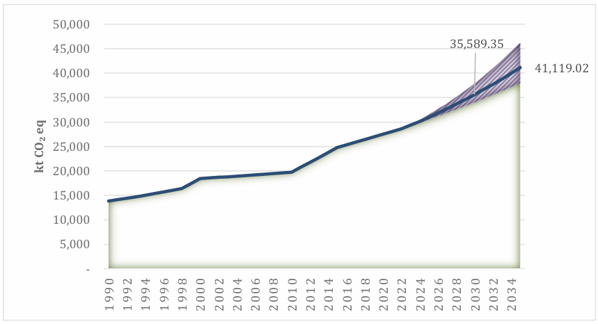
ii. Methane (CH₄)
CH₄: A progressive slowdown in growth is observed, explained by improvements in management of waste and reduction in livestock intensity.
In graph 2, we can see the CH₄ emissions which increased from 149.6 kt CO₂ eq in 1990 to 415.1 kt CO₂ eq in 2022, with phases of rapid growth (1990–2010) and subsequent stabilization (2010–2022, CAGR ≈ −0.7%). The three methods, Polynomial Regression, Total CAGR and Moving CAGR, They maintain R² > 0.90, with intermodel dispersion of less than ±4%. The estimate is based on the CAGR The moving average better represents the non-linearity of the series (growth followed by a plateau), and It softens recent behavior and produces a prudent and realistic projection.
Best method selected: CAGR Mobile (last 12 years).
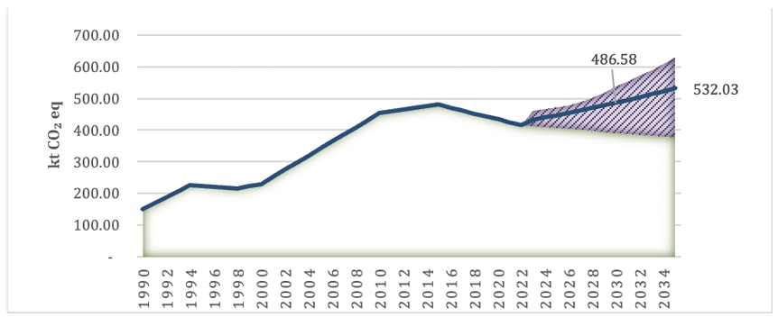
Chart No. 2. Projected behavior of CH4 for the period 1990-2035.
iii. Nitrous Oxide (N₂O)
N₂O: It exhibits bimodal behavior; after a drop in the 2000s, it resumes a trend upward trend linked to agricultural fertilization, livestock activity and emissions associated with waste and fuel burning.
In graph 3, N₂O emissions are observed, which fluctuate significantly due to Variations in agriculture and land use: from 2.74 kt CO₂ eq in 1990 to 7.367 kt CO₂ eq in 2022. The methods applied: Polynomial Regression, Total CAGR and Moving CAGR (last 12 years). They yield low R² values, allowing for better capture of oscillations (peaks and falls) and smoothing the series and resulting in greater long-term stability. The ensemble estimates between 8.0 and 52.0 kt CO₂ eq N₂O in 2035.
Best method selected: Total CAGR (1990–2022)
Chart No. 3. Projected behavior of N2O for the period 1990-2035.
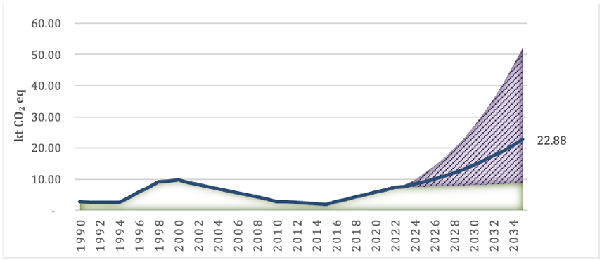
iv. Hydrofluorocarbons (HFC)
HFC: Exhibits a rapid expansion curve, representative of the technological transition towards alternative refrigerants and the growth of the services sector.
HFC emissions have been growing rapidly since 2010 (HCFC → HFC transition), reaching 2,360.1 kt CO₂ eq in 2022. An annual growth rate of 1% was applied as it reproduces better the recent dynamics of technological expansion and market behavior.
v. CO₂ Removals (Absorptions)
In graph 4, it can be seen that CO₂ removals reflect a sustained decreasing trend, explained by the loss of forest cover and the maturation of natural sinks, which They decreased from 13,600 kt CO₂ eq in 1990 to 10,248 kt CO₂ eq in 2022 (-1.0% annually). The methods The applied methods, Polynomial Regression, Total CAGR and Moving CAGR (last 12 years), yield low R² values. The polynomial model offers the best fit to the sustained downward trend, while the Mobile CAGR mitigates recent declines due to reforestation.
Chart No. 4. Projected behavior of CO2 absorptions for the period 1990-2035.
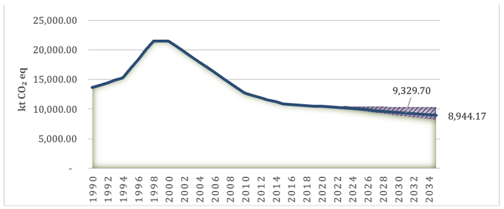
Table 3 presents the projected values for each gas in the year 2022 (latest historical data available), 2030 (intermediate horizon of NDC 3.0) and 2035 (extension towards the long-term goal), considering the average weighted average of the evaluated models:
Table No. 3. Projection and trend of GHG to 2035
|
Gas ( kt CO₂ eq ) |
2022 (Historical) |
2030 (Medium Projection) |
2035 (Medium Projection) |
Variation 2022–2035 (%) |
Trend |
CO₂ |
28,589 |
34,025.67 |
37,936.85 |
+32.70 % |
Sustained increase |
CH₄ |
415 |
391.68 |
377.70 |
-9.02 % |
Currently declining |
N₂O |
7.367 |
13.54 |
19.83 |
+169 % |
Unstably ascending |
HFC |
2,360 |
2,555.65 |
2,686.01 |
+13.81% |
Growing due to a lack of technological expansion of substitutes and market behavior. |
|
Removals |
10,248 |
9,545.04 |
9,130.52 |
−10.2 % |
Moderate decline |
Table 4 represents the conversion of emissions/absorptions by gases to CO2e for projection and trend to 2035. Based on IPCC 2006 GWP-AR6 methodologies, calculating the values of CH4 and N2O for each coefficient from AR6 obtaining the CO2e emissions results in said table, to facilitate the metric according to MPG The conversion to kilotonnes (kt) will be performed homogeneously in NDC 3.0-RD.
Table No. 4. Conversion of emissions/absorptions by gases to CO2 eq.
|
Gas ( kt CO₂ eq ) |
2022 (Historical) |
2030 (Medium Projection) |
2035 (Medium Projection) |
GWP-AR6 factor |
CO₂ |
28,589 |
34,025.67 |
37,936.85 |
1 |
CH₄ |
415 |
391.68 |
377.70 |
29.8 |
N₂O |
7.367 |
13.54 |
19.83 |
273 |
HFC |
2,360 |
2,555.65 |
2,686.01 |
1950 |
Removals |
10,247.78 |
9,545.04 |
9,130.52 |
1 |
CO2 eq emissions |
45,327.19 |
51,949.62 |
57,292.65 |
- |
|
Absorptions of CO2 eq |
10,247.78 |
9,545.04 |
9,130.52 |
- |
Overall, the projected scenario provides a robust and methodologically consistent baseline for evaluation the mitigation goals of NDC 3.0, allowing the simulation of alternative climate policy scenarios.
In summary, the construction of the 1990–2035 baseline from combined methodologies (Polynomial, CAGR) total, fixed and mobile) offers a solid technical view of the trend behavior of emissions Dominicans, this analysis reinforces the credibility of the results reported to the UNFCCC, consolidates the transparency architecture and allows the country to guide its mitigation decisions with greater technical rigor and empirical evidence.
With the aim of achieving the relatively low market penetration of low-tech and low-cost practices To reverse carbon emissions, specific factors related to low-carbon investments need to be addressed and modified. carbon intensity, as well as infrastructure resilient to the impacts of climate change.
According to Frisari et al. (CPI 2013), risk, whether real or perceived (subjective in nature), is the factor The most relevant singularity in terms of preventing (or facilitating) projects from finding funding or making them Investors demand higher returns on their investments. These are the criteria for decision-making. These are mainly due to the perceived risk associated with the type of projects – in the absence of quantitative metrics measured or calculated by independent third parties.
Investments in productive activities or in low-carbon or carbon-resilient infrastructure climate, they tend to be subject to higher perceptions of risk, due to a certain dependence on the performance of those projects within the context of the current regulatory frameworks.
Also, with some frequency, risk is associated with and depends on the relative immaturity of the markets in which that those are promoted, as well as the innovative nature of the technologies themselves that are used (Frisari et al., 2013). Therefore, in this area, credibility and predictability of public policies.
Development finance institutions (DFIs) face the challenge of contributing to boosting the Low-carbon investments in developing countries, making it possible, in particular, for businesses small and medium-scale projects can be implemented in greater numbers, thereby strengthening the process of acquisition of knowledge, new technologies, development of new infrastructure or adaptation of the existing.
In any case, in order for financial and regulatory instruments to be applied and achieve To have tangible impacts on private investment decisions, it is necessary to create suitable conditions for the adoption of these decisions in areas that extend beyond the control of the private decision-maker himself.
The The conditions that make investment possible and encourage depend on measures introduced within the framework of the policies aimed at promoting greater private participation in investment , which include:
the encouragement of the development of technology provider networks and service networks;
the contribution to expanding the capacity of commercial banks to meet these types of demands financing and the introduction of innovative financial instruments, including policy measures credit lines established by central banks;
the stimulus to accelerate the learning curve in these green segments, so that they allow for increased the social capital of countries and mobilize national resources with a view to becoming firmly included in the path to sustainable development;
the stability of policies, regulatory and tax frameworks.
The policies and measures that may be put into effect usually affect the environment for investments in the area. at least three different ways. Indeed, Policies condition: the allocation of costs and revenues; the allocation of risks; and the practices of business and the choice of technologies.
These impacts can modify investor behavior to some degree by transforming the risks to which they They face challenges and the returns they can obtain, as well as the information they access and, eventually, the criteria they use in making investment decisions. It should be noted that, even in the context of a an environment that is supposed to facilitate investments such as the one described, the introduction of instruments Appropriate financial resources, however, remain key.
A. Climate finance
He Climate finance refers to capital—from both public and private sources—used to facilitate mitigation actions by helping to reduce greenhouse gas emissions and Implement efforts to improve adaptability and increase resilience in the face of the negative impacts of climate change.
Climate finance plays a fundamental role in the long-term transition to a low-cost economy carbon-neutral and resilient to climate change. Currently, the recent shift towards the adoption of trails Net-zero emissions by a large number of countries creates additional demand for financial flows to address the needs of developing countries in order to position socio-technical transitions Proposals that would allow us to achieve that goal in the long term. Sustainable infrastructure is fundamental. to achieve the Sustainable Development Goals (SDGs) and the climate goals of the Paris Agreement.
There is a wide variety of climate finance sources, with different funders and approaches. diverse objectives, criteria, and processes. As the effects of climate change continue to create greater Despite challenges and threats, more stakeholders are mobilizing to invest and contribute to various funds and channels. of financing dedicated to mitigating and adapting to climate change. At one end of the spectrum is purely private, purely commercial investors are found who are primarily motivated by the Risk-adjusted expected rate of return on your investment. This type of market-driven investment It is virtually indistinguishable from commercial loans for any other type of project, as in the case of bank loans for financially viable renewable energy projects. From the perspective of For lenders, climate impacts can be seen as an added benefit, but they are not the primary driver of the investment decision. At the other end of the spectrum are non-profit investors, including non-governmental and philanthropic organizations, which can grant subsidies for activities climate-related with little or no expectation of financial return. In between are a number of public and private funders who place varying degrees of emphasis on achieving climate outcomes that in obtaining financial benefits.
Currently, access, eligibility criteria, and monitoring, reporting, and verification (MRV) frameworks They differ considerably among the multiple sources of funding for the fight against climate change. The different sources will have specific approaches and criteria that will influence the types of activities that They will finance. Some of the most common features to consider include:
Thematic approaches: Some only grant loans to specific sectors (e.g., energy) renewables, public transport, agriculture, water and sanitation) or for activities that generate results specific (e.g., biodiversity, soil degradation, disaster risk reduction). Some Funders may support only mitigation or only adaptation, although most of the largest sources major ones finance both.
Geographical approaches: This includes, for example, specific funds that invest only in countries or regions specifics.
Focus on the borrower: Some sources only lend to public sector agents, others only to the private sector. private and others prioritize public-private partnership projects.
Direct lenders versus intermediaries: Some sources lend and accept proposals at the level of project (i.e., direct access), while others invest through public funds or bodies or private entities (at the national level or through IFDs) that in turn invest in projects and programs (i.e., intermediaries).
Types of support: Some support the preparation or execution of projects or programs, while others are They focus on technical assistance and capacity building to improve the overall enabling environment for access climate finance.
Traditionally, public funds have been the primary source of capital available for financing the fight against climate change, including the financial resources of multilateral development banks (BMD), multilateral and bilateral organizations, governments, climate funds and agencies of help.
Bilateral Sources and Channels: Bilateral financial institutions are institutions, agencies, or funds primarily belonging to or governed by a single country. This includes bilateral IFDs and development cooperation agencies of individual countries. These institutions are capitalized through from the sponsoring country's public budget, supplemented by its own funds and funds obtained in the global capital markets. Examples of bilateral channels for climate finance include the Germany's International Climate Initiative (IKI), the International Financing commitment on the UK's International Climate Fund (ICF), Germany's Global Climate Partnership Fund (GCPF), and the Norway's International Climate and Forest Initiative (NICFI), among many others.
Multilateral sources and channels: Multilateral financial institutions and funds have multiple Governing members, including both borrowing developing countries and donor countries developed. This includes multilateral development banks, which can be global in scope (by for example, the World Bank Group) or regional (for example, the Inter-American Development Bank), as well as Other regional institutions and United Nations (UN) agencies. The funds of these institutions. Multilateral funds come from various sources, such as the capitalization of member governments, fees for services provided and income from loans.
Climate funds: These are climate-specific funds, often from multiple donors, created and managed by national, bilateral and multilateral organizations that provide fiduciary services and administrative. In addition to the money pledged by donors, many of these funds leverage significant administrative resources. funding sums, often from IFDs, and by reducing investment risk to mobilize private financing Additionally, multilateral climate funds play a crucial role in assisting Developing countries must adopt low-carbon development pathways and adapt to the adverse effects of climate change. Some examples of climate funds are (i) Donor funds global standards established by UN agencies, such as the Global Environment Facility (GEF), the Climate Investment Funds (CIFs) and the Green Climate Fund (GCF); (ii) other donor funds global, such as the Global Energy Efficiency and Renewable Energy Fund (GEEREF); and (iii) regional and national climate funds and channels, such as those established by several developing countries, with a variety of forms and functions, funded through international funding and/or allocations national budgets, as well as by the national private sector.
However, The cost of climate change mitigation and adaptation increasingly exceeds the amount of funds Available public funds, coupled with the fiscal constraints of developing countries, result in a global need to increase and capitalize funds from the private sector and from private sources such as commercial financial institutions, philanthropic organizations, investors institutional, non-profit organizations, corporate actors, institutional funds, etc.
This pressing need has led to the introduction of mixed financing ( blending ), in which public and private sources contribute to a single funding stream, helping to reduce the Investment risks for the private sector. Mixed financing refers to the alternative selective use of for high-impact projects (i.e., large infrastructure projects) where the real risks or perceived are too high to attract commercial lenders.
Traditionally, the contributions of the Dominican government and international institutional actors have been the main source of financing available for climate finance, including resources financial institutions of multilateral development banks (MDBs), multilateral and bilateral organizations, climate funds and aid agencies.
Public spending. The Dominican government contributes a significant portion of climate finance through the Public spending. This spending is mainly concentrated on capital or infrastructure expenditures, and goes aligned with the various medium- and long-term public planning and investment plans and frameworks. Larger public funds are increasingly focused on ensuring a high multiplier effect of the limited resources, which makes the financial leverage ratio a key indicator for these Sources. Public funds are essential to unlocking climate finance for the sector private, by assuming the types of risks that it is unwilling to assume, such as regulatory risks or technological.
Bilateral channels and mechanisms: Bilateral financial institutions (BFIs) are institutions or funds that belong to or are governed primarily by individual countries. They include institutions bilateral development finance institutions (FDIs) and development cooperation agencies of countries individual. Their capitalization is carried out through the public budgets of donor countries, supplemented by bilateral banks' own funds and funds raised in the capital markets global. Examples of bilateral channels for climate finance include: IKI (International Climate Initiative) of Germany, AFD (French Development Agency) of France, JICA (Japan International Cooperation Agency), Japan, ICF (International Climate Finance) of the United Kingdom, the GCPF (Partnership Fund Global Climate Initiative (GCI) of the German Government and the NICFI (International Climate Initiative on the Climate and Forests (for its acronym in English) of Norway, among others.
Multilateral channels and mechanisms: Multilateral financial institutions and funds have multiple governing members, which include both borrowing developing countries and donor countries developed countries. This includes multilateral development banks (MDBs) such as the Inter-American Development Bank. (IDB) and the World Bank, regional development banks, and United Nations agencies. The funds are They raise funds from various sources, including government capitalization and loan programs, as well as such as income from loans.
Climate funds: These are climate-specific funds, usually with multiple donors, created and managed by national, bilateral and multilateral organizations that provide fiduciary services and administrative. Multilateral climate funds play a fundamental role in collaborating with developing countries to adopt low-carbon development pathways, as well as to adapt to the effects of climate change. Some examples of climate funds are:
global donor funds established by United Nations agencies, such as the Environment Fund Global Environment Facility (GEF), Climate Investment Funds (CIF) English), the Adaptation Fund (AF) and the Green Climate Fund (GCF). acronyms in English).
Global donor funds managed by EU institutions, such as the Global Efficiency Fund Energy and Renewable Energies (GEEREF).
regional and national climate funds and channels, such as those established by several developing countries, with diverse forms and functions, financed through international funds and/or budget allocations nationals, as well as by the national private sector.
International climate finance has a key role to play in addressing the financial deficit and, given that public sources are too scarce to finance this transition, it It expects that additional funding will come from the private sector.
Given the global need to increase private sector funding and the fact that the cost of Climate change mitigation and adaptation increasingly exceed the volume of available public funds, It is essential to mobilize the private sector to guarantee a transformative and long-term impact on the developing countries.
Private funding sources include funds and savings from individuals and businesses, which are often manage, group and/or invest through intermediaries such as commercial financial institutions, portfolio management companies, asset management companies and/or pension funds, investors institutional investors, asset managers, corporate actors, institutional funds, organizations philanthropic and non-profit organizations, among others.
Examples of these include Clarmondial, Circulate Capital, Amplifica Capital, Acumen Capital Partners LLC, and Bamboo. Capital Partners, Deetken Asset Management Inc., EcoEnterprises Fund, Social SAPI de CV, among others.
The main reason for this type of investment is to obtain a risk-adjusted return for the investors, as well as collateral benefits, as a result of sustainable development, which may be included explicitly or implicitly in their mandate.
Blended finance can play a vital role in unlocking, expanding, and channeling financing for sustainable development in developing countries.
Blended finance refers to the use of public and private financing when real risks or The perceived costs are too high for commercial lenders to absorb on their own. Public funding is used to reduce investment risks for the private sector and to reduce the cost of financing. Blended financing attracts commercial capital to projects that contribute to sustainable development, while providing financial returns to investors.
Blended finance is not an investment approach, but rather an approach to structuring transactions. in a way that attracts multiple types of investors. Blended financing allows an agency government, a private equity investor, and an impact investor invest together, at the same time who achieve their own goals.
Impact investing is an investment approach (or philosophy) that generates both financial and social benefits. Impact on development. Impact investors often, though not always, invest in transactions of blended finance along with other types of capital. Impact investors play a role This is important because they occupy a unique space among private investors, who expect high returns. risk-adjusted, and public and philanthropic investors, who can absorb more risk and expect lower performance.
Impact investors, on the other hand, have expectations of profitability, but are more flexible. especially if they see a fundamental impact from their investments.
While private investors focus on obtaining a risk-adjusted rate of return, their Risk appetite can vary significantly. For example, angel investors and venture capitalists Risk managers focus on projects in earlier, higher-risk stages, so they expect a rate of Higher returns in case of success. The largest institutional investors seek projects of lower risk, but they expect relatively lower rates of return.
Climate finance is, first and foremost, finance, so the available instruments are the Typical financial instruments that can be used for any type of financial transaction. In other words, What makes an investment climate finance is not the nature of the instrument used, but rather the fact that the investment supports activities that contribute to mitigating climate change or to the adaptation to it.
Consequently, the four main categories of climate finance instruments that could The typical financial instruments available for any type of financial transaction are those that can be used. namely:
debt instruments
capital instruments
credit improvement instruments; e
Risk transfer instruments.
The difference between an ordinary financial instrument and a financing instrument for the fight against [the virus/crisis] Climate change means that funds raised through climate change financing sources climate-related funds are allocated to the achievement of a specific objective, project, or physical asset related to the climate.
The set of instruments and mechanisms to promote and facilitate sustainable investment is usually considered as green financing, although there are disagreements about the taxonomy with which it can be classified This financing needs to be classified, and strictly speaking, there is no universally agreed definition of what constitutes it. This financing is understood on a global scale. According to the Dominican Republic's Green Taxonomy, it is considered green if it “seeks to promote initiatives that support both sustainable development and the transition towards a low-carbon economy.”65
In any case, to consolidate a strategy that allows us to cover the wide financing gap today There are three different challenges that need to be addressed:
Build capacity to identify appropriate programs, projects, and actions;
Develop programs that, within the framework provided by the regulatory framework conceived from the sector public, fully involve the private sector in systemic transformation efforts; and,
Structuring financing according to the needs of key stakeholders and the conditions prevalent in the priority areas of action.
The mobilization of private resources, in particular, primarily takes into consideration the rate of return and The risks associated with planned investment often go beyond environmental priorities and sustainable development.
Furthermore, in each case the financing instruments that are eligible may differ depending on the policy priorities and goals, the policies and measures already underway, and the national strategy that has been designed to address the main issues that the national institutional response aims to make facing climate change.
In developing economies and, to some extent, in the Dominican Republic, the financial sector and capital markets tend to They are still weak or insufficiently developed, and the level of long-term funding is low. Without However, companies require long-term financing for the acquisition of fixed assets or for the project financing that may require a relatively long time for recovery investment, particularly in large-scale investment projects such as infrastructure; however, the Local commercial entities can often only provide short-term loan facilities to Relatively high interest rates, and in some cases, make investment unfeasible. On the other hand, Companies, particularly SMEs, do not always have a solid and consistent financial structure to provide adequate guarantees to institutions that may provide potential sources of financing.
Therefore, This creates a need for innovative financing mechanisms to support the private sector, primarily for the segments with less access to financing , and at the same time complement the development of green finance in the country.
In general, the added value offered by debt and equity instruments is that they allow for reducing the gap in specific financing for certain projects and programs, and with its expansion and greater ease of Access would increase the number of programs and projects that can be implemented. So, even if, despite the A considerable improvement in the cost competitiveness of renewable energy projects, for example, has not yet been achieved. This produces a massive expansion of this type of investment; it is necessary to carefully examine what the potential ones might be. Barriers to investment and ways to remove them. A set of instruments is included in the following table. financial instruments and also instruments called non-financial, but which are used in conjunction with the former, because they contribute to facilitating its application and thus achieving its massive deployment.
Financial Instruments |
Definition |
Provision of financing (Public or private source) |
|
|
Debt instrument |
Non-concessional loan |
Loans granted at a market interest rate for activities related to climate change. |
Commercial and corporate banks |
|
Concessional loan |
Loans granted for the purpose of addressing climate change/sustainable goals, characterized by longer repayment terms, lower interest rates, and extended grace periods. |
Governments, IFDs, climate funds |
|
|
Donations |
Sums of money that are granted for activities related to climate change but that are not These funds need to be returned. They are usually allocated to support activities in the initial phase of a project, such as the development of a project concept, or for specific capacity-building activities. |
Climate funds, Governments, IFDs, public and private institutions (including philanthropic ones) |
|
|
Debt swaps |
Sale of a foreign currency debt to an investor or debt forgiveness by the creditor, in exchange for that debt relief be invested in activities related to climate change. |
Governments, public and private investors |
|
Green, social and sustainable bonds (thematic bonds) and sustainability-linked bonds |
Debt instruments whose proceeds are used to finance or refinance, in part or in full, eligible new and/or existing projects/assets/businesses that have climate benefits and/or environmental and/or social and/or sustainable. |
Public governments (national, subnational or municipal) and private investors, banks or companies |
|
|
Microfinance loans |
Small-scale financial loans to entrepreneurs, small businesses, and individuals who lack access to credit. to traditional banking services in order to address climate change. |
Microfinance institutions |
|
|
Quasi-capital |
Debt, usually unsecured and subordinated, that increases the capital base without changes in the ownership structure in order to address climate change. |
Public and private investors |
|
|
Capital instruments |
Equity securities |
Shareholder participation in an entity - a company, partnership (including a joint venture) or trust realized in the form of share capital for the purpose of making in the face of climate change. |
Public and private investors |
|
Co-financing |
Joint financing between two entities working to finance an activity with objectives of climate change. |
Public and private investors |
|
|
Crowdfunding |
Financing climate change mitigation or adaptation project activities by raising small amounts of capital from many individuals, usually through an online platform. |
Households, businesses |
|
|
Credit improvement instruments |
Interest Rate Smoothing Mechanisms |
Lower interest rates and other subsidies to reduce borrowing costs below market-based financing for activities related to climate change. |
Governments, IFD |
|
Re-loan |
Obtaining loans from external or national sources and subsequent transfer of the loan to another entity in order to address climate change. |
Governments, IFD |
|
|
Refinancing |
Substitution of an existing debt obligation for another debt obligation under different conditions in order to address climate change. |
Commercial Banks, Governments, IFDs |
|
|
Project Bond Credit Enhancement |
Subordinated instrument, whether a loan or a contingent credit line, to back bonds of preferred projects issued by a project company for low-carbon projects. |
Governments, IFD |
|
|
Credit subordination: Excess spread, over-collateralization, reserve accounts, etc. |
Prioritization of secured debts, one after the other, for the purpose of collecting repayment from a debtor. Subordinated debt is riskier than higher priority loans, transferring the risk to in case the results of the climate projects are not fully achieved. |
Local and national governments |
|
|
Instruments and mechanisms for risk transfer/distribution |
Insurance |
Creation of risk transfer mechanisms that provide resources for disasters related to climate and transfer responsibility for losses to capital market investors. |
Insurance Companies |
|
Guarantees |
Promise to repay another's debt, in connection with an exchange-related activity climate, in case of non-payment. |
Governments, IFD |
|
Results-based climate finance |
The funds are disbursed by the donor or investor once the requirements have been met and verified. previously agreed results of climate activity. |
Governments, IFD |
|
|
Venture capital |
Funds (capital/loans on favorable terms) allocated to mitigation/adaptation activities to climate change with a high level of uncertainty. |
Governments, IFD |
|
Some examples of potential financial instruments for mobilizing project finance climatic. Source: Own elaboration.
Recommended instrument types |
Type of financier |
Justification |
|
Concessional loans (IF) Project finance (IF) Technical assistance (INF) Guarantees (IF) Subsidies (IF) Microcredits (IF) |
Multilateral Development Banks (IDB, World Bank) National or Regional Development Bank (CAF, BCIE) Specific Funds (Adaptation or International Fund) of Agricultural Development, Canadian Climate Fund for the Americas |
The repayment capacity of these projects may be over a longer period than what the conventional financing in the financial market, due to initial investment costs and the The financial sector's lack of awareness of these technologies justifies their introduction. Innovative financial instruments that improve investment returns, accompanied by assistance technique. |
|
Project finance (IF) Guarantees (IF) Concessional Loans (IF) Thematic Bonds (IF) |
Multilateral Development Banks (IDB, World Bank, EIB) National or Regional Development Bank (CAF, BCIE) Specific Funds (FVC) Bilateral Agencies (AFD, IKI, KfW) |
International financing for infrastructure at preferential rates, concessional funds or guarantees to access long-term financing. |
|
Project finance (IF) Framework loan (IF) Infrastructure Fund (IF) Supply-side subsidies (IFC) Accelerated depreciation or subsidy schemes to the rates (IFC) |
Multilateral Development Banks (IDB, World Bank) National or Regional Development Bank (CAF, BCIE) |
Financing at different scales (based on project quality, company balance sheet, capacity) (repayable), which is recovered through the provision of the service. Fiscal instruments play a role key (exemptions, accelerated depreciation) and also the rates. However, a regulatory framework and A stable regulatory environment favors a reduction in capital costs and, therefore, an increasing shift towards traditional financing. |
|
Concessional loans (IF) Project finance (IF) Thematic bonds (IF) Public-Private Partnership (PPP) Guarantees (IF) Subsidies (IF) Technical assistance (INF) |
Multilateral Development Banks (IDB, World Bank) National or Regional Development Bank (CAF, BCIE) Specific Funds (FVC, Cooperation Fund for Water and Sanitation, Latin American Investment Facility (LAIF) Bilateral Agencies (AFD, German Development Bank – KFW, International Climate Protection Initiative (IKI) |
Public companies in the water and sanitation sector require institutional and financial strengthening, in order to to be able to match their performance with that of private companies. In particular, the need to implement business management models focused on efficiency and sustainability (practices of good corporate governance and long-term sustainability strategies) to access financing international technical cooperation, based on the suitability of each project and its contribution to mitigation/adaptation. Guarantees and subsidies in the initial stages of projects help reduce investment risk in the water and sanitation sector. Blended finance and PPP structures can be a catalyst for attracting private investment, combine resources from entities such as multilateral organizations, local governments, or agencies development, with private and philanthropic investors. The use of sustainable financing instruments linked to the achievement of objectives emerges as a fundamental strategy. These financial instruments provide the necessary capital to carry out projects of infrastructure, and introduce a direct link with the fulfillment of objectives and indicators of performance. |
|
Concessional loans (IF) Themed Bonds (IF) Public-Private Partnership (PPP) Guarantees (IF) Subsidies (IF) Tax Increment Financing (TIF) Themed Bonds (IF) |
Multilateral Development Banks (IDB, World Bank) National or Regional Development Bank (CAF, BCIE) Bilateral Agencies (AFD, German Development Bank – KfW, |
It allows the public entity to obtain resources in advance to fund the development project or urban infrastructure as an alternative to concessionary financing. |
International Climate Protection Initiative (IKI)
The repayment capacity of these projects may be over a longer period than the financing allows. conventional in the financial market, due to the initial investment costs.
IF: Financial incentives; IFC: Tax incentives; IR: Regulatory incentives; INF: Non-financial incentives
Annex 6: Participatory Process
The update of the Dominican Republic's Nationally Determined Contribution (NDC 3.0) has developed through a participatory, inclusive and technically robust process, which has involved a wide range of institutional, technical and social actors.
Led by the NDC3.0 Steering Committee, made up of the National Council on Climate Change and Markets of Carbon (CNCCMC), the Ministry of Finance and Economy (MHyE) and the Ministry of Environment and Natural Resources Natural Resources (MMARN), the approach of the Dominican Republic's NDC 3.0 update process has allowed gather multi-sectoral contributions that strengthen both the mitigation and adaptation components, ensuring that the proposed goals respond to the realities of the country and its international commitments in subject of climate change.
The NDC update process has received support from the Inter-American Development Bank (IDB), providing technical assistance and coordination, as well as organizing discussion spaces for the construction of the country's climate ambition in mitigation and adaptation. Additionally, a number of workshops were organized in coordination with the United Nations Development Programme (UNDP) for the inclusion of cross-cutting considerations.
This annex summarizes the different components of the participatory process for updating NDC3.0, presenting methodologies and main results from the different discussion spaces.
Apart from bi-weekly coordination meetings with the NDC3.0 Steering Committee between February and In November 2025, a total of two (2) NDC dialogues were held to define the formulation of measures and transparency mechanism, as well as six (6) workshops for the inclusion of cross-cutting considerations. At the same time, a public consultation form was made available to broaden participation and gather input. This tool allowed for the incorporation of additional technical, academic, and citizen stakeholders. relevant observations on adaptation and mitigation measures, strengthening legitimacy and representativeness of the process.
Finally, the organization of sectoral working groups and ad-hoc bilateral consultations with institutions Key and specialized technical personnel have made it possible to present a proposal with solid ambition and aligned with the sectoral interests.
Table 1 – Summary of participation events during the NDC 3.0 update process
Event |
Date |
Partici-Number pantes |
NDC Dialogue 1: Mitigation |
03/07/2025 |
76 |
NDC Dialogue 1: Adaptation |
04/07/2025 |
76 |
NDC Dialogue 2: NDC within the MRT |
22/07/2025 |
68 |
|
Cross-cutting Workshop 1: Inclusion of Early Childhood, Childhood and Youth |
25/07/2025 |
64 |
NDC Cafe: Youth for our common destiny |
09/08/2025 |
25 |
Cross-cutting Workshop 2: Action for Climate Empowerment |
31/07/2025 |
65 |
Transversal Workshop 3: Gender |
07/08/2025 |
67 |
Cross-cutting Workshop 4: Inclusion of the Private Sector |
08/08/2025 |
70 |
|
Cross-cutting Workshop 5: Local Communities |
05/08/2025 and |
80 |
06/08/2025 |
||
Water, Sanitation and Hygiene (WASH) Consultation |
19/08/2025 |
52 |
NDC Dialogues
The first NDC Dialogue was held on the days June 3 and 4, 2025 in it Hotel Catalonia, Santo Domingo , and was organized by the Steering Committee, made up of the MEPyD, CNCCMDL, Ministry of Finance, Ministry of Environment, with support from the IDB and facilitation from the OCA Global – Guakía Ambiente consortium – Plenitud Foundation. This space marked the beginning of the expanded participation of key actors in the process, with the objective of reviewing and enriching the proposed mitigation and adaptation measures.
The dialogue took place over two thematic days: Mitigation (day 1) and Adaptation (Day 2). Each day included plenary presentations, working sessions in sectoral groups (energy, water, cities, health, waste, etc.), and synthesis plenary sessions. Tools such as matrices were used Evaluation of measures, fact sheets for new proposals, and maps of key stakeholders. The methodology was participatory. results-oriented and designed to gather technical, political, and social inputs that would strengthen the NDC feasibility.
Participants reviewed previously identified measures, assessed their relevance, feasibility, and alignment. tion with national priorities, and proposed adjustments or new actions. Responsible actors were identified. sabers, strategic allies, and enabling conditions for implementation. The final plenary session allowed share key findings and define next steps, including new spaces for consultation and validation technical. The dialogue laid the methodological groundwork for subsequent sectoral meetings and strengthened the national actors' ownership of the process.
Figure 1 Steering Committee and IDB team at the NDC 1 Mitigation and Adaptation Dialogue.
The second NDC Dialogue was held on July 22, 2025 at the Catalonia Hotel, Santo Domingo and was Organized by the Steering Committee, with technical support from the IDB and the OCA Global – Guakía Ambiente – Fundación Plenitud consortium. The dialogue focused on validating the design of the NDC subsystem of the National Climate Transparency System (SNTC), which has been designed to meet the climate transparency commitments set out in the NDC 2025 update. The main objective was to consolidate the structure and functionality of the system national climate transparency, ensuring its alignment with international standards and priorities nationals.
The day unfolded with a participatory and technical approach, combining informative presentations, validation and plenary discussion tools. The tools used included:
Structural and functional validation matrix (evaluation of inputs, flows, roles, reports and deadlines).
Mapping of actors and associated processes (links with systems such as SNIGC, MRV, statistics) sectoral).
Integration and validation plenary session, to collectively adjust the technical and operational design.
During the plenary session, the draft NDC subsystem was reviewed, roles and responsibilities were assessed, and Improvements and gaps were identified. Participants validated the system's functionality and reinforced its meaning. of institutional affiliation and proposed adjustments to optimize inter-institutional coordination. The dialogue This allowed progress towards a robust monitoring, reporting and verification (MRV) system, key to ensuring the transparency and credibility of NDC 3.0.
Cross-cutting workshops
The workshop took place on Thursday July 24, 2025 at the Holiday Inn Hotel in Santo Domingo, with the participation of 64 people, of whom 70% were Women and 48% young people under 35, including people with disabilities. The event It allowed for the integration of concrete proposals to strengthen climate adaptation and mitigation measures from a children's and youth rights perspective. Through sectoral working groups (health, water, infrastructure, agriculture, energy, transport and waste), technical adjustments were formulated to Existing measures were considered, new integrative objectives were proposed, and gaps, instruments, and opportunities for networking.
The workshop was conducted using a participatory and structured methodology that combined presentations Techniques with group dynamics. It began with presentations on the NDC 3.0 update process and the importance of integrating early childhood, childhood and youth approaches into climate action. Subsequently, five sectoral working groups were organized (health, water, infrastructure/education, agriculture/ecosystems, energy/transport/waste), where participants assumed specific roles (moderator, rapporteur, presenter) and worked with methodological guides, technical inputs and materials of support. The exercises included reviewing existing measures, formulating integrated proposals, the design of sectoral objectives with a focus on children's and youth rights, and the identification of instruments, gaps, and opportunities for collaboration. The workshop concluded with a plenary session to share the following: findings and an assessment survey.
The workshop made it possible to generate concrete contributions to strengthen NDC 3.0 from a perspective intergenerational and rights-based. Technical adjustments were made to existing measures, such as the unification of actions in health (S3–S4), the consolidation of measures in energy (MM.E.11–MM.E.17), and the reformulation of Proposals in agriculture, ecosystems, and human settlements. Integrative objectives were formulated by sector that directly links climate action with the protection and empowerment of children and youth.
In addition, the recommendations from the youth meeting were incorporated. “NDC Café: Youth for Our Common Destiny” , held on August 9, 2025 in Mirador Sur Park, with the participation of 25 young people. This space It allowed the visions and proposals of young people to be channeled into five thematic areas: nature and territory, Energy and mobility, production and waste, water and health, and their cross-cutting nature. Among the proposals Highlights include: mandatory environmental education at all levels, and a boost to ecotourism. community, energy model reform to facilitate distributed generation, youth participation binding in decision-making, strengthening of regenerative agriculture, modernization of the water infrastructure, and the creation of citizen oversight mechanisms.
The youth also expressed concrete commitments such as leading local initiatives and raising awareness among their communities, reduce their carbon footprint and actively participate in the implementation and monitoring of the climate policies. The workshop was highly positive, with satisfaction levels reaching 88%. and 98% in content, methodology, organization and usefulness, which confirms the relevance of the approach and the quality of the developed process.
Figure 2 – NDC Coffee.
The workshop was held on Thursday, July 31, 2025 at the Hotel Catalonia, Brussels Room, in Santo Domingo, and was attended by 65 people registered, of which 74% were women, 33% were young people under 35 years of age, and the presence was included of two people with disabilities. The sectors represented were mainly the public sector (64%), followed by international cooperation (19%), civil society and academia (10%), and the private sector (7%).
The day combined technical presentations with participatory activities. Three presentations were given. introductory sessions on the NDC 3.0 process and the ACE approach, followed by a thematic working group session organized by the six elements of ACE: education, training, awareness, public access to information, public participation and international cooperation. Each table had supporting materials and defined roles (moderator, rapporteur, presenter), and They developed three main exercises: review of progress and proposals for improvement to the ACE goals, formulation of new goals articulated with key sectors, and identification of instruments, gaps and opportunities for networking.
The workshop allowed for the validation and enrichment of the diagnosis of the NDC 2.0 ACE goals, proposing adjustments and New measures for NDC 3.0. Among the most relevant results are: strengthening education climate change as a compulsory subject at all educational levels; implement a national program of climate training certified by INFOTEP; develop awareness campaigns with goals for 2027 and 2030, including accessible media and actors such as influencers and community radio stations; create a national repository of open data on climate change; establish a An inclusive Citizen Consultation Council and a National Youth Network on Climate Change; and to strengthen the international cooperation mechanisms. The workshop was highly positive, with levels of Satisfaction between 83% and 97% in content, methodology, organization and usefulness.
The workshop was held on Thursday, August 7, 2025 at the Hotel Catalonia, Brussels Room, in Santo Domingo, and 67 people participated, of whom 87% They were women, 43% were young people under 35 years old, and at least two people were present with disability. The representation was multisectoral: 70% from the public sector, 10% from international cooperation, 13% civil society and academia, and 7% private sector.
The workshop combined technical presentations with participatory activities. Progress on the Roundtable was discussed. National Gender and Climate Change Council and the Gender and Climate Change Action Plan (PAGCC) was presented. Subsequently, they were organized sectoral working groups to review the measures proposed in NDC 3.0, identify links with the PAGCC and formulate integrative objectives with a gender focus. The sectors addressed were: energy and waste, transport and infrastructure, health and risk management, water, agriculture and food security, tourism and coastal-marine resources. Each working group participated in three exercises: formulating objectives, reviewing existing measures and proposing new actions, considering public policy instruments, gaps and opportunities for collaboration.
Figure 3 Gender Workshop.
The workshop allowed for the validation and strengthening of the integration of the gender approach into sectoral measures of NDC 3.0. Specific adjustments were proposed in sectors such as energy, waste, transport, health, water, agriculture and tourism, including women's participation in projects, generation of disaggregated data by gender, and promotion of accessible and resilient infrastructure. Recommendations from [the relevant body] were also incorporated. “NDC Coffee” youth meeting, as a boost to community ecotourism and ecosystem protection coastal areas. The workshop was positively evaluated, with satisfaction levels between 79% and 96% in content, methodology, organization, and utility.
The institutional diversity, the quality of the discussions, and the need to improve certain aspects were highlighted. logistics and extend the time for group dynamics.
The workshop took place on Friday, August 8, 2025 , at the Catalonia Santo Domingo Hotel, as part of the process of updating the Determined Contribution at the National Level (NDC 3.0) of the Dominican Republic. It was led by ECORED, the consortium of OCA Global – Guakía Ambiente – Fundación Plenitud and UNDP , with the participation of more than 60 representatives from the private sector, including companies, trade associations, NGOs and consultants. The main objective was to incorporate proposals and goals that strengthen adaptation measures and mitigation of NDC 3.0, recognizing the strategic role of the business sector in climate action national.
Figure 4 Private sector workshop.
The workshop was conducted through a combination of technical presentations and participatory activities. They presented the background of the NDC process and the financial impact of climate change on the sector. productive, and the opportunities for the private sector in the fight against climate change. Subsequently, they were organized thematic working groups (energy, transport, health, waste, biodiversity, among others), where participants reviewed the NDC 2.0 measures, proposed improvements, identified new actions and Enabling conditions were discussed. Digital forms, printed matrices, and roles were used. defined to facilitate discussion and systematize contributions.
The workshop allowed for the validation and enhancement of existing measures, proposing 20 new actions (7 of mitigation and 13 adaptation measures) and modifications to 37 measures of NDC 2.0. Recommendations were highlighted such as: incorporating mandatory storage in renewable energy facilities, promoting electric micromobility, to implement circular economy plans and strengthen environmental management in hospitals. Furthermore, it was proposed a monitoring and accountability system with specific indicators to measure involvement business. The evaluation survey reflected high satisfaction with the content and methodology, and It identified the need for more time for discussion and institutional strengthening. The conclusions They aim to institutionalize a permanent public-private working group, improve regulatory frameworks, and financial, and ensure the integration of gender and ACE in all measures.
The days August 5 and 6, 2025 Two workshops were held at the National Botanical Garden of Santo Domingo and the Botanical Garden of Santiago, with the objective of strengthening the participation of rural and mountain communities in the updating of the Dominican Republic's NDC 3.0. The activity It was organized by Guakía Ambiente with the support of the UNDP, and had the participation of 80 people from 16 provinces, including 25 Community-Based Organizations (CBOs) and 11 NGOs. The approach It was aligned with Articles 6 and 7 of the Paris Agreement, promoting inclusive participation and effective.
Each workshop was structured in three parts: presentation and introduction, group work, and plenary session. Summary. It began with a contextualization of the NDC process and its relevance to communities, followed by through the analysis of 49 measures distributed across five sectors: water resources and health, food security and resilient cities, ecosystems and tourism, energy and waste, and land use and forestry. The groups had facilitators and analysis guides, and the IPPU sector was excluded due to its low incidence community. In the plenary session, observations and recommendations were shared to strengthen inclusion territorial in the NDC.
Local communities highlighted the importance of all measures, with an emphasis on adaptation due to their High vulnerability. Integrated watershed management and access to basic services were prioritized. inclusive rural areas, and the need for local solid waste management plans. It was also proposed include a strategic water management plan, facilities for renewable energy, and a regime of Consequences for regulatory non-compliance. The sector recommendations included proposals specific to energy, waste, tourism, resilient cities and food security, highlighting the role of the communities as overseers of the territory. It was concluded that community integration strengthens the legitimacy, viability and resilience of the NDC.
Figure 5 Local communities workshop at the Santiago Botanical Garden.
The workshop took place on August 19 at the Gran Almirante Hotel, Santiago de los Caballeros, with the objective of generating technical inputs and, recognizing the role of the Drinking Water and Sanitation (DWS) sector in adapting to climate change. Fifty-two people participated, with a composition of 61% men and 39% women, and a representation interinstitutional, comprising 67% public sector, 14% international cooperation, 18% civil society and academia, and 1% private sector. The activity was coordinated by the WASH Group, the CNCC and UNICEF, with support from UNDP and IDB.
The day combined technical presentations on climate change, risks in the APS sector, and the Index of Safe Aqueduct, with working sessions in thematic tables on Health, Resilient Cities, Resources Water and food security. Participants reviewed sectoral matrices and formulated Recommendations based on their institutional capacities. The methodology was assessed as clear, The survey was participatory and effective, although it was suggested that more time and prior materials be available. Satisfaction showed results between 89% and 96% in content, facilitation, logistics and usefulness.
The technical findings included specific proposals for each sector. Regarding water resources, the following recommendations were made: Define priority basins by 2030, clarify goals, and consider hydrometeorological risks. Food security was highlighted, along with water efficiency, climate-smart livestock farming, and coordination with existing projects. In health, it was proposed to apply the Safe Hospitals frameworks and WASH-FIT, ensuring safe water in emergencies and strengthening quality monitoring. In resilient cities, He emphasized climate-adapted urban drainage, the right to resilient housing, and the use of risk maps. climate displacement monitoring. The consultation was rated as highly useful and enriching, with Recommendations for replicating the model in other locations and strengthening the participation of decision-makers.
Figure 6 Water, Sanitation and Hygiene Workshop.
Working Groups
The sectoral working groups were designed as technical spaces for consultation and co-construction to The update of the Dominican Republic's NDC 3.0. Representatives from various institutions participated. public, private, academic, international cooperation and civil society, organized by key sectors: energy, transport, waste, agriculture, LUTUs, IPPU and health.
During these sessions, proposals for sectoral mitigation goals were presented and validated, many of them These are derived from previous studies, specialized technical assistance, and institutional commitments. A supplementary technical document systematizes these goals in narrative and tabular formats, including indicators, monitoring methodologies, emissions reduction estimates and requirements of financing.
As part of the process of structuring the national portfolio of climate actions, the following were carried out Sectoral meetings with key stakeholders in the Energy, Transport, LULUCF and Agriculture sectors, IPPU and Waste. These working groups were convened by the National Steering Committee, with the objective of To review, validate, and enhance the climate policies, measures, and actions proposed in each sector. Representatives from more than 20 institutions participated. public, private and international cooperation, including MEM, CNE, INTRANT, MICM, INAPA, ADIE, FEDOMU, JICA, UNDP, CNCCMC, among others.
Table 2 List of institutions forming the sectoral working groups.
Sector |
Institutions consulted |
Energy |
AES Dominicana, Dominican Association of the Electricity Industry (ADIE), National Energy Commission (CNE), EGE Haina, EGEHID, EDESUR, ETED, Ministry of Energy and Mines (MEM), Superintendency of Electricity (SIE), CNCCMC, Ministry of Environment (MMARN) |
Transport |
National Institute of Transit and Land Transportation (INTRANT), Office for the Reorganization of Transportation (OPRET), General Directorate of Customs (DGA), Vinci Airport, Institute Dominican Institute of Civil Aviation (IDAC), CNCC, Ministry of Environment |
IPPU |
Ministry of Industry, Commerce and SMEs (MICM), ADOCEM, PRONAOZ, UNDP, CNCC, Ministry of Environment, Ministry of Energy and Mines |
Waste |
Dominican Municipal League, Dominican Federation of Municipalities (FEDOMU), JICA, INAPA, CORAASAN, CORAABO, CORAAROM, CORAAPPLATA, CORAAVEGA, CO-RAAMOCA, CNCCMC, Ministry of the Environment |
|
UTCUTS and Agriculture |
Ministry of Agriculture, Dominican Agribusiness Board, National Institute of Resources Hydraulics (INDRHI), INAPA, CONIAF/IDIAF, CNCCMC, Ministry of Environment |
The sessions were developed with a hierarchical structure that facilitated the analysis of coherence between Strategic and operational levels: policy objective, goal, measure, and action. Tools such as Evaluation matrices, action sheets, stakeholder mapping, and indicator review. The indicators are They classified them into three types: impact (emissions avoided), effect (intermediate changes) and product (deliverables) physical). The meetings were held in a hybrid format, with in-person sessions in the IDB's meeting rooms and virtual participation.
The methodology of the roundtables was based on the review of sectoral progress, identification of gaps, Prioritization of measures and validation of preliminary goals. Technical feasibility criteria were applied. alignment with national policies, consistency with IPCC methodologies and emissions reduction potential.
The goals were structured in technical data sheets that include: title, objective, responsible entity, type instrument (GHG, non-GHG, enabling framework), progress status, IPCC category, gases involved, estimated funding, description of the option, monitoring methodology, required activities and observations. This systematization allowed for a comparative evaluation between sectors and facilitated the Integration of goals within the framework of NDC 3.0.
The working groups facilitated the agreement on more than 40 sectoral mitigation goals, with reduction estimates of Emissions exceeding 10 million tons of CO₂eq by 2030. Flagship measures were identified such as the incorporation of natural gas and renewables into the electricity system, public transport corridors efficient, technical closure of landfills, biodigestion in livestock farming, water management in rice paddies and mangrove conservation.
Among the most outstanding results are:
Energy sector: targets for new natural gas and renewable energy generation units, improvement of electrical distribution system, public lighting efficiency and RAC standards.
Transportation: bus corridors, monorails, cable cars, freight fleet renewal and strategy scrapping.
IPPU: Decarbonization of the cement sector and reduction of HFCs in refrigeration and air conditioning.
Agriculture: biodigestion, composting, methane reduction in livestock, and water management in rice.
UTCUTS: Restoration of 4,500 km² of degraded forest and protection of mangroves in protected areas.
Waste: technical closure of Duquesa landfill, waste valorization, improvement of wastewater treatment in cities tourist.
Cross-cutting: updating technical standards (NORDOM) and strengthening evaluation schemes of the accordance.
These goals were validated by sector stakeholders and will be integrated as part of the mitigation component. of NDC 3.0, with a focus on results, transparency and climate finance.
Bilateral consultations
As part of the NDC 3.0 update process, the following was carried out ad hoc bilateral consultations with key institutions and specialized technical staff to review and validate the proposed adaptation and mitigation measures. These meetings were held from shape hybrid and in-person , allowing direct interaction with strategic sectors.
The active role of institutions linked to health, resilient cities, and biodiversity is highlighted. Water security, tourism, and especially the coastal-marine sector, given its high vulnerability and relevance for national climate resilience. These consultations complemented the sectoral working groups and They allowed for the incorporation of specific technical observations into the final definition of the adaptation goals.
The bilateral meetings were organized ad hoc, with a technical and participatory approach. Each session was It focused on reviewing the measures previously included in the current NDC and contrasting them with new proposals. sectoral and gather comments, corrections and suggestions from institutional actors.
Table 3 List of institutions consulted bilaterally for the adaptation component.
Sector |
Institutions consulted |
Water security |
Yaque del Norte Water Bottom FAO |
|
Food Safety |
Vice Ministry of Agricultural Sector Planning, Directorate of Risk Management and Climate Change, Department of agriculture FAO |
|
Health |
Vice Ministry of Risk Management and Environmental Health, Directorate of Risk Management, Directorate of Environmental Health, Ministry of Public Health and Social Assistance FAO |
|
Ecosystems, Biodiversity and Forests |
FAO |
Coastal-marine resources |
Vice Ministry of Coastal and Marine Affairs, Ministry of Environment and Natural Resources |
|
Tourism |
Planning and Projects Directorate (DPP), Provincial Tourism Initiatives Directorate, Ministry Tourism FAO |
In the bilateral sectoral interviews, the sectoral goals were presented, which are derived from the extensive prior consultations in the workshops, on the previous goals of NDC 2.0, on the strategic documents and planning, sectoral legal and regulatory frameworks, as well as preliminary studies, assistance specialized technique and institutional commitments.
To discuss the identified mitigation measures, the following were carried out
Table 4. List of institutions consulted bilaterally for the mitigation component.
Sector |
Institutions consulted |
Transport |
MEM, INTRANT, Ministry of the Presidency (Transportation Cabinet) |
Energy |
MEM, CNE |
Waste |
Min. Environment, DO-Sustainable |
UTCUTS |
Min. Environment |
IPPU |
ADOCEM, Companies in the Cement Sector, Ministry of Environment, UNDP |
Agriculture |
BioRice, Min. Agriculture |
Transversal |
INDOCAL |
The data obtained was systematized in an Excel matrix that consolidated the contributions by sector, allowing Its cross-sectional analysis and the integration of adjustments into global adaptation and mitigation goals. This matrix It served as the basis for the final validation of the measures, ensuring technical coherence, sectoral relevance and alignment with national planning frameworks.
The bilateral consultations helped strengthen the mitigation and adaptation component of NDC 3.0, incorporating more precise and contextualized measures. Key findings include:
Water security: Integrated watershed management is prioritized, focusing on use planning consistent with the characteristics of the territory and the water security of the established human settlements.
Food Security: Efficient water management, silvopastoral systems and livestock farming are prioritized. climate smart.
Health: Priority is given to measures that influence the environmental determinants of health, infrastructure sustainable and resilient (co-benefits with mitigation), training and governance
Ecosystems, Biodiversity and Forests: The ecosystem approach is prioritized, aimed at safeguarding the functionality of natural systems and their dynamics, promoting connectivity between ecosystems and the adaptation to climate change.
Coastal-marine resources: Adaptive management of priority areas and conservation actions are prioritized and restoration
Tourism: The goals were evaluated and restructured to align them with the new tourism strategies sustainable and ecotourism sector
Finally, in order to coordinate spaces for discussion of cross-cutting themes, Table 5 defines the supplementary consultations carried out during the process.
Table 5 Complementary queries on cross-cutting themes
Date |
Institution / Space |
Theme / Main focus |
Main results |
|
May 12 >2025 |
VCCyS MMARN |
Interview for the integration of childhood into NDC 3.0 |
Identification of policy instruments and areas responsible for the topic within the institution. |
|
May 19, 2025 |
DEA–MMARN |
Interview for the integration of childhood into NDC 3.0 with the Directorate of Environmental Education |
Monitoring the implementation of ACE goals. Identification of policy instruments. |
|
May 20, 2025 |
CNCCMC |
Interview on the integration of children in the NDC 3.0 |
Monitoring the implementation of ACE goals. Identifying relevant policy instruments and stakeholders to consult. |
|
May 27, 2025 |
CONANI (Childhood) |
Interview for the integration of childhood in NDC 3.0 Children's and Adolescents' Rights |
Alignment with the National Policy for Children and Adolescents; identification of relevant public policy instruments. |
|
June 2, 2025 (AM) |
CNCCMC (Extended Session) |
Interview for the integration of childhood into NDC 3.0 |
Continuation of the previous session. |
|
June 2, 2025 (PM) |
DEA–MMARN and CNCCMC (Joint consultation) |
NDC 3.0 institutional coordination |
MMARN–CNCCMC articulation; coherence and updating on diagnosis towards ACE goals. |
|
June 11, 2025 |
UN, NDC Consortium and NDC 3.0 Steering Committee – NDC 3.0 Cross-Cutting Support Update |
United Nations System Coordination and the NDC 3.0 Team |
Review of UN support; identification of funding gaps; alignment of agencies with national priorities and gathering of technical inputs on Infancy, Childhood, Youth, Gender and ACE. |
|
July 28 >2025 |
Preparatory Session Workshop ACE NDC 3.0 |
Preparation and identification of inputs for the ACE Workshop |
Methodological review; alignment of expectations; identification of key stakeholders |
|
July 30 >2025 |
ACE – NDC 3.0 and EDS-RD |
Synergies between ACE and the Dominican Republic's Education for Sustainable Development Strategy |
Supplementary interview. ACE articulation with EDS-RD goals; discussion on joint elements and identification of relevant public policy instruments. |
|
August 15, 2025 |
MINERD, DEA-MMARN and CNCCMC |
Complementary interview and validation of ACE surveys in NDC 3.0. |
Identification of efforts to integrate CC into curricula; assessment and adjustments to ACE goals. |
Form
As part of the NDC3.0 update process, a open inquiry form to include actors who were unable to participate in the working groups or bilateral consultations. The tool allowed for the collection of technical input, perceptions, and recommendations from representatives of institutions. public (44%), private (20%), international cooperation (22%), civil society (11%) and the financial sector (3%), broadening the participatory base of the process. In total, 36 responses were received, representing all sectors and a balanced distribution by gender and age range.
The form included closed and open questions on key NDC topics: perception of progress, role institutional, sectoral priorities, adaptation and mitigation measures, climate finance, participation, monitoring, and recommendations to improve the effectiveness of the NDC. The responses were systematized and analyzed by sector, gender, age, and type of vulnerability. Criteria were applied qualitative and quantitative analysis, allowing the identification of patterns, concrete proposals and common barriers.
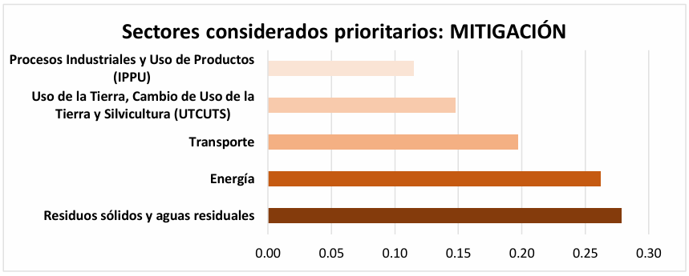
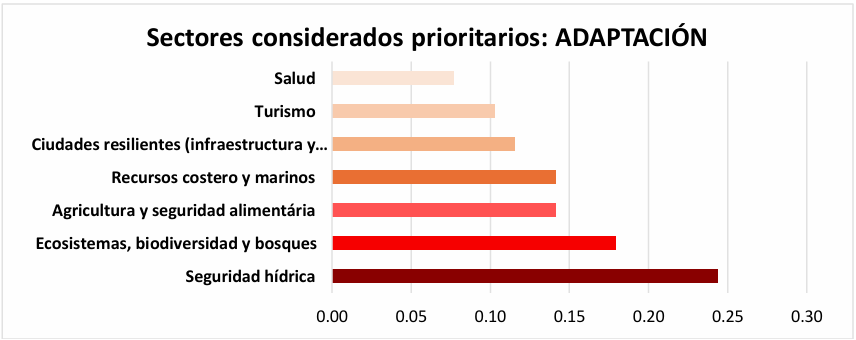
Participants highlighted the following sectors as priorities for climate action: energy, water security, Solid waste, transportation, ecosystems, and agriculture. The main adaptation measures implemented These were: education and awareness, ecosystem restoration, water management, and climate-smart agriculture intelligent. The most frequently mentioned vulnerabilities were droughts, extreme events, loss of biodiversity and Floods. Regarding participation, mechanisms such as digital platforms and roundtables were proposed. territorial aspects, public consultations, and climate observatories. The recommendations included strengthening territorial aspects, public consultations, and climate observatories. technical capabilities, improved access to financing, integration of nature-based solutions, and ensuring inclusive and transparent governance.
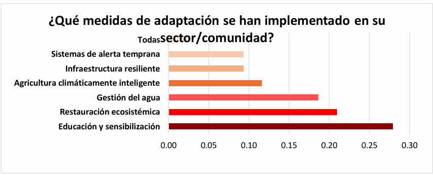